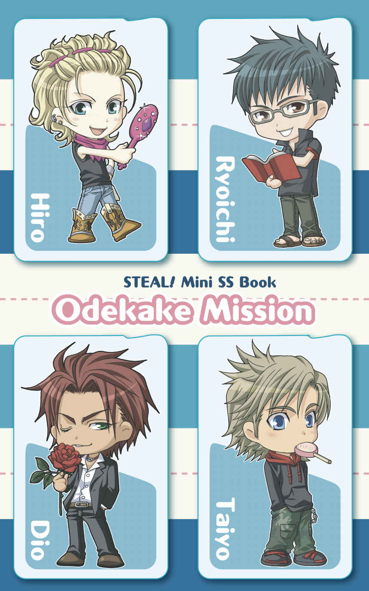

| STEAL！ショートストーリー集 Assorted Mission: [アソートミッション] (Spray) | |
| 秀香穂里 & 時野つばき | |
| Spray (2015) | |
［スウィートミッション］
著：秀香穂里／時野つばき
原作：Spray
「こっちだ、明日叶」
「待って、慧...。......あっ！」
戸口の段差の部分をまたごうとしたときに、軽々と慧に持ち上げられる。
「このくらい、自分でまたげる」
わかってはいても、体力の差を見せつけられた気がして、思わずむっとする。でも、慧は相変らず涼しい顔だ。
「転んだら、危ないだろ」
『今日の昼食は外で食べよう』
――そう誘ってくれた慧に連れられ、校舎の奥の階段を登り切った場所にある扉を開くと、キラキラした陽射しが溢れる屋上が広がっていた。
「へえ、こんな場所もあるんだ......」
青空に向かって深呼吸した。遮る物が何もない場所で、爽やかな風が心地よく吹き抜けていく。
「慧、ここにはよく来るのか？」
「時々。本来は立ち入り禁止だから、ここは俺とお前だけの秘密だ」
「うん、わかった」
ルール違反をしていることには少し罪悪感を覚えるけど、慧と二人きりの秘密という魅力から逃れられないから、素直に頷いた。
「気持ちいいな。中庭で食べるのと、また違う感じだ」
「ああ」
戸口そばの壁にもたれ、慧と一緒に腰を下ろした。互いに、食堂で作ってもらった特製ランチを持っている。
「あ、今日のランチ、旨そう。俺の好きなベーグルサンドだ」
ランチボックスを開いてはしゃいでいると、慧がじっと見つめてくる。
「慧、どうした？ ランチボックスの中身が違うのか？ って、ちょ、待てよ、......んっ！」
突然うなじをぐいっと掴んでくる慧が唇を強く重ねてきて、目を閉じる暇もなければ、抗う余裕もない。
「ん、ふっ......けい、......っ待て、ったら......」
くちゅりと舌を絡めて甘く吸われる情熱的なキスに、一気に酸欠状態だ。熱い唇が何度もぶつかってきて、満足に息継ぎもできない。必死に慧をなだめても、強引なキスが続いて頭がおかしくなりそうだ。何度か胸を叩いて、やっと放してもらえたときには呼吸が乱れまくっていた。
「もう、慧、何だよ、いつも、いきなり......」
「したいから、しただけだ。いい加減、慣れろ」
平然とランチを食べ始める慧に、頬が熱くなる一方だ。
わだかまりが溶けた後、恋人になった慧はいつでもどこでも俺にキスして、抱き締めたがる。俺だって嫌じゃないけど......、慧の勢いがまだ読めないからちょっと困る。
今日は珍しく慧からランチに誘ってくれたから一緒に過ごしているけど、放っておくとトレーニングに行ってしまって、昼飯ヌキにしてしまう事もしょっちゅうだ。
「それよりも昼飯ちゃんと食べろよ。慧のトレーニング量は他の人より三割増しなんだから、ちゃんと食べないと体が保たないだろ」
「わかった」
拍子抜けするほどあっさり頷く慧がベーグルサンドを食べ終えたところで、軽く笑いかけてきた。
「明日叶の言うとおり、食べて体力をつける事は大事だ。セックスの最中に気を失われても困るからな」
「慧、お前っ！」
耳元で囁かれた声の甘さに、カッと頭の中まで熱くなった。恋人になってからわかったけど、慧はスゴイ事をさらりと言う。確かに、慧に抱かれて気を失った事が何度かあるから......反論、できないけど。
「......そういう意味じゃないだろ！」
目一杯怒鳴っても慧は楽しげに笑っているだけで、俺も怒った顔を続けているのがバカバカしくなってくる。つられて俺まで、笑ってしまった。だって、今、俺は慧と一緒にいる。笑い声だけで満たされるんだ、心も身体も。
「なあ、慧。あのさ、俺、考えてる事あるんだけど」
「何だ、明日叶？」
慧が自然と顔を近づけてくれる。微笑むその唇に惹かれていることを隠さないで、今度は俺からしてみようかな。
いつまでもいつまでも、終わらないキスをしよう、慧。
晴れた空の下、サッカーフィールド中央でコインを空に向かって弾く。表、と出た敵チームを率いるディオはニヤリと笑った。
「明日叶、覚悟しろよ。約束は守ってもらうからな」
「わかってる」
ディオの挑発を弾くように真剣に頷いたけれど、本当はまっすぐ立っているのも辛い。
昨晩は遅くまで、ディオに散々抱かれたうえに、最後には騎乗位で、『お前の好きなように動けよ』って甘くそそのかされた。そのせいで、足腰がまだガクガクしている。でも、ディオに抱かれすぎて腰が痛いなんて理由で体育の授業をサボるのは情けなさすぎる。そんな事を考えながら表向きには平然としていたら、試合開始前にディオが妙な賭けを持ち出してきた。『俺のシュートを止めてみせろよ、ガッティーノ。１本でも止められたら、お前の言うこと、なんでも聞いてやるぜ？』もちろん、止められなかったら、俺が言うことを聞く。くだらないと跳ねつけたら、臆病者呼ばわりされた。挑発だとわかってもムカついて、俺は賭けを受けた。
「お前のそういうところ、やっぱいいよな。でも、油断するなよ」
「どういう意味だよ」
顔を引き締め、ＧＫ としてポストに立った。試合が始まり、ディオたちがボールを回すが......いつまで経っても攻めてくる気配がない。むしろ、うちのチームには慧がいるから、攻められっぱなしだ。ディオはＦＷ のくせにゴール前まで下がって、慧とボールを奪いあっている。
「なんだよ、あいつ......」
こっちサイドにはほとんど人が来ない。俺ひとり、ゴールポスト前に取り残された気分だ。
勝つ気がないのか？ ......いや、違う。ひょっとして、ディオは俺を気遣ってるのか？ だから、俺を運動量の少ないＧＫにさせるために、あんな賭けを持ち出したのか？
「......甘やかすなよ......」
ディオらしい優しさが胸に染みる反面、無性に腹が立つ。俺だって勝負したいんだ、バカにするな！
だが、試合時間はどんどん過ぎていく。こうなってみると、ゴールキーパーは不利だ。あいつが攻めてくるのを待っているしか手がない。このまま、俺は何もしないで突っ立ったままか？ いや、でも多分。ディオだったら。
と、突然、中盤でロングパスを受け取ったディオが、俺たちのチームメートを軽々すり抜け、華麗なドリブルで攻め込んできた。思ったとおりだ。あいつ、ラストにシュートを決めて勝つつもりだ。だったら俺にだって考えがある。
「つっ......」
ディオがシュートする直前。わざと身体をよろけさせて、腰に手をあてた。俺にとっては慣れない騙しテクだけど、昨日の熱を思い出して顔を歪めると、視界の端にそれを認めたディオがハッとする。バランスを崩したのか、シュートにはいつもの勢いがない。
「やった！」
必死にボールに飛びついてセービング成功！ ......と思ったけど、ボールは指先をすり抜ける。あっと思った瞬間、ニヤッと笑ったディオがすかさず強く蹴り込んできた。
「油断するなって言っただろ」
「く......っ」
思いきりボールをゴールポストぎりぎりに叩き込まれたところで、試合終了の笛が高らかに鳴った。
「......あともう少しだったのに」
「捕ろうとするからダメなんだよ。カーブかかってんだから弾くのが正解だぜ」
余裕の態度で笑うディオを無視して、ボールを拾う。
「俺を騙そうなんていい根性してるじゃねえか。でもまぁ、よくやったほうじゃねえの？」
肘や膝についた砂を払っていると、額に汗を滲ませたディオが笑いながら近づいてきた。
「いつまでも負けてばかりいられないからな」
「......いいぜ、その顔。そそるじゃねえか」
フィールド上なのにぞくぞくするような色気を込めた声で囁くディオがぐっと一歩詰め寄ってくる。その危うさに思わず引きずり込まれそうでボールを投げつけるが、ひょいっとかわされてしまった。
そのまま、ディオの長い腕が伸びてくる。
「おい、ディオっ！ 待て、ちょ......っ！」
いきなり胸ぐらを掴まれて、熱いくちびるが重なる。公然での堂々としたキスに慌てて胸を叩いたけれど、それで許してくれるようなディオじゃない。
「んっ、......んーっ、んんっ......！」
「賭けのご褒美にもっとすごいことしてもらおうかと思ったけど、これで我慢してやるよ」
「人前でこういう事するなって言っただろ！」
怒り狂う俺を強く抱き寄せ、ディオがますます深くくちづけてくる。視界の隅に映るのは、いつものことに呆れた顔のクラスメートと、こめかみに青筋を立てた慧。
......この後にくる昼休みを想像すると、トラブルの予感に眩暈がしそうだった。
「はぁ......」
ある日の夕方、寮内のジムでいつも通り自主トレーニングを終えた俺は、熱いシャワーに打たれていた。
学園に来て以来、いくつかのミッションを成功させたことで、自信とともに、もっと頑張りたいという気持ちが強くなっていた。
「でも、今日のメニューはさすがにハードだったかな」
たまには、ジャグジーでゆっくりしよう。そう思って隣のジャグジーブースに入ると、思いがけない人がにこやかに手を振ってきて、胸がドクンと飛び跳ねた。
「やあ、明日叶。お疲れ様」
「亮一さん......！ お疲れ様、です」
大理石でできた円形のジャグジーでは、亮一さんがのんびりくつろいでいた。風呂の中だからトレードマークの眼鏡は外してるけど、爽やかな笑顔を前にすると妙に気恥ずかしい。
「亮一さんも、トレーニングしてたんですか？」
「うん。ミッションは一息ついたけど、援護班だからって体をなまらせちゃいけないからね」
「そうですか......」
ミッション前は作戦を詰めるのに専念する為、ジムで亮一さんと出会うことは少ない。その上、ジャグジーでばったりなんて、初めてのことだった。
「どうしたんだ？ 隣りにおいでよ」
入り口に立ち尽くした俺に、亮一さんが首を傾げる。
「あ、あの......い、いいです」
「え？ ジャグジー、入らないのか？」
「また後にしますっ！」
底抜けに明るい誘いに後ずさり、ジャグジーブースを飛び出した。
亮一さんと俺は、今ではパートナーであり、恋人同士だ。ジャディードで初めてして以来、日本に帰ってきてからも抱き合ってはいるけど、まだ数えられるくらいだ。亮一さんは休日前の時間に余裕がある時だけ、俺を優しく抱いてくれる。でもミッション前は緊張感を保つためか、手を繋ぐことはおろか、キスをすることさえない。
「亮一さん、変に思ったかな......」
亮一さんから逃げるようにシャワーブースに駆け戻り、個室に閉じ籠もった。でも、裸の亮一さんを見て平然としていられるほど、俺は慣れてない。風呂に一緒に入るのだって恥ずかしいのに、亮一さんは平気なんだろうか。俺みたいにドキドキしたり、おかしな気分になったりしないのかな......って、ああもうダメだ。頭を冷やさないと、亮一さんに八つ当たりしてしまいそうだ。
もう一度シャワーを浴びようとしたとたん、ブースの扉が突然パタンと開いて、慌てて振り返った。
「りょ、亮一さん！ な、な、なに......っ」
俺の肩を掴み、亮一さんが個室に押し入ってくる。
「しー......、静かに」
俺も亮一さんも素肌を晒したままだ。狭い個室は男ふたりが入ると余裕がなくて、どうしても互いに肌が触れ合って全身が火照り、声も掠れてしまう。
「あ、あまり近づかないで下さい」
眼鏡をかけていないせいか、亮一さんがぐっと顔を近づける。そんな風に見つめられると、恥ずかしくてどうにかなってしまう。
「どうして？」
「俺、亮一さんとこうするの、慣れてなくて......、亮一さんと違って、俺、余裕、ないから」
ダメだ、もう胸が一杯でちゃんと喋れない。
「明日叶」
亮一さんが壁に両手をつく。亮一さんと壁に挟まれた俺はどこにも逃げられない。
「反則だぞ。そんなに可愛い顔をされたら、俺も我慢できなくなるよ」
「......亮一さん？」
水滴を散らす亮一さんに抱きすくめられて、一気に頭がのぼせてしまう。
「......っ!? 」
「まったくもう......君は、俺をダメにするつもりかい？」
せっぱ詰まった声音に驚いて顔を上げると、困ったように笑う亮一さんがそっと唇を重ねてきた。
「ん......っ」
求める気持ちが胸からあふれ出しそうなのは俺だけじゃないって事を、こぼれる吐息が教えてくれる。亮一さんも、俺と同じなんだ。
「......りょう、いち、さん......っ」
終わらないキスの雨が亮一さんの限界を伝えてくれるようで、胸が満たされていく。擦れ合う肌が熱く疼き出したら、もう誰にも止められない。
微笑む亮一さんがシャワーのノズルを強くひねって、甘い時間の始まりを熱い湯の中に隠してくれた。
気持ちいい風が俺の頬をするりと撫でていく。見上げれば、綺麗な青空に白い雲。
「はぁ......」
ため息をつきながら、通りがかった店の窓をのぞき込むと、浮かない顔をした俺がぼんやり映っている。休日の今日、俺はひとりで街へ買い物に来ていた。
新しいシューズを買いに行く予定を、昨日の夜、あの人にも伝えた。でも、帰ってきたのは『そうか』と素っ気ない返事だった。ただ、それだけの事だけど、ちょっと寂しい。
桐生さんと恋人になって、しばらく経つ。でもいつも一緒にいるわけじゃないし、むやみに甘えさせてくれる人じゃない。こうやって、別々の休日を過ごすことも珍しくない。でもその代わり、桐生さんには何度も頭がおかしくなるぐらいに乱れさせられてきた。
「............っ」
もう一軒先の店の窓に映った俺の顔は、薄く赤らんでいた。ひとりであれこれ考えて赤面するなんて、桐生さんに知られたら絶対笑われる。その余裕のなさをからかうように。
......でも本音を言うと、たまには、どこかにふたりきりで出かけてみたいな。
ぼうっと考えながら歩いていたら、隣の車道にスッと車が停まった。
ふと車のほうを見ると、窓が下りて、ハンドルを握る人の顔が見えた。
「......桐生さん！」
「まだ買い物が終わってなかったのか？」
スーツ姿がビシッと決まった桐生さんに、俺は口をぱくぱくさせていた。なんで、俺がこのへんを歩いてるってわかったんだ？
「とにかく乗れ」
「あ、あ、はい」
混乱しながらも、桐生さんの運転する車の助手席に乗り込んだ。
「お前の買い物を終えたら、服を買いに行く」
「服ですか？ なんで？」
「そんな格好では、これから行く店に入れないだろう」
そんな格好、と冷笑された俺は、Ｔシャツとジーンズといういつもどおりの格好だ。
「今夜予約を入れたレストランは、ドレスコードがある。そうでなくてもその格好は幼すぎるな」
「あの......」
声がつかえてしまう。もしかして......デートに誘ってくれてるんだろうか？ そうだったら嬉しい。
だけど、あまりにも突然の誘いに、思考がついていかない。だって、さっき願ったことが、もう叶ってしまうなんて夢みたいだ。
「行きたくないのか？」
「い、行きたいです」
「それとも食事よりも、別のモノで満たされたいのか？ 相変らず淫乱な体だな」
「......ちっ、違います！」
それは桐生さんが勝手に手を出してくるから......。鼻で笑う桐生さんに、顔が赤くなってしまう。
「そうじゃなくて俺......桐生さんと一緒にいられるのが嬉しくて......」
もつれた言葉の終わりが届いたかどうかわからないけど、桐生さんは無表情だ。
「ホテルの部屋をとってある。ついでに明日の着替えも選んでおけ」
「......え？」
でも、外泊するならば寮に外泊届けを出さなくてはいけない。今日は買い物をして戻ってくるつもりだったから、当然出していなくて......。
「外泊届けか？ 私はどうでもいいが、お前が気にするだろうから、出しておいたぞ」
「あ、ありがとうございます」
昨日の夜は何も言っていなかったのに......。
でも。強引な誘い方が大人の男のこの人らしい。俺を驚かせて、惑わせて、最後に何もかも蕩けさせてくれる。桐生さんは、俺を翻弄する術を知り尽くしてる。
車が左折する時に身体が揺れたのをきっかけに、俺は桐生さんの肩に頭をコツンともたせかけた。桐生さんはかすかに笑いながら、そのままにしてくれている。
ただ、それだけの事が、俺を心から幸せにしてくれるんだ。
「そこで、この文法の場合の解釈は......」
古文の授業中、わからない言葉を調べようと、鞄から辞書を取り出そうとした。
「......あれ？ ない......」
いつも鞄の中に入れているはずなのに、どこに忘れてきたんだ？
「あっ......！」
そうか。眞鳥さんの部屋に忘れてきたんだ。
わからない箇所を教えてもらおうと、眞鳥さんの部屋を訪ねたのは昨夜のことだ。笑顔で出迎えてくれた眞鳥さんは最初の十分こそ、ベッドに腰掛けて俺の質問にまともに答えてくれていた。でも。その間ずっと、眞鳥さんは俺の髪に指を絡めたり、耳たぶをその長い指でそっと摘んだり、楽しそうに俺で遊んでいた。それでもなんとか宿題部分を終わらせると、熱っぽい吐息をふぅっと首筋に吹きかけられた。その刺激に、ぞくっと覚えのある快感が走る。
「眞鳥さんっ、今は勉強を教えてもらっている最中で......！」
恥ずかしさに我慢できずに眞鳥さんを押しのけようとした瞬間、ぐっと手首を掴まれて押し倒されてしまった。
「ふふっ、明日叶のそういう顔、好きなんですよねえ。アンタは真面目にやってるんでしょうけど、オレから見たら、隙、ありまくりですよ？」
カッと熱くなる頬にくちづけてくる眞鳥さんに抵抗しようとした。だけど、両手を押さえ込まれて、甘く深いキスを繰り返し受け止めていたら、力が抜けてしまう。舌を淫猥に搦めて、吸われて、うずうずする感覚が全身に広がっていく。俺がどうしたら感じるかなんて、眞鳥さんは全部わかっている。だって、眞鳥さんが全部教えてくれたものだから。
「ん......っ」
「最近のアンタ、すごーくイイ感じですよ。キスだけで蕩けちゃうぐらい」
「眞鳥、さん......」
「胸も触ってほしいでしょう？」
「......ぅ......」
シャツの上からカリカリ爪で引っかかれる気持ちよさに、声を上げてしまった。......眞鳥さんは、愛撫、みたいなのが大好きだ。時間をかけて俺の身体中を弄り回して、舐めて、囓って......もう我慢できないってせがんでも、笑いながら執拗に指と口で攻めてくる。優しいのに容赦がない。
全身が蕩ける感覚って、ああいう事を言うんだろうな。眞鳥さんに抱かれると時間の感覚も忘れて、俺はただ快感に溺れるしかない。何度もせがんで、やっと最後に......――。
「......っ！」
突然、ジャケットのポケットに入れていた携帯電話が振動した。
......なにやってるんだ、俺は。授業中なのにこんなこと、思い出している場合じゃないだろ？ 顔が熱くて仕方ない。携帯メール、誰からだろう。机の陰でこっそり携帯を開くと、眞鳥さんから『忘れ物』という件名のメールが届いている。あ、辞書の事か？
メールを開いた瞬間、顔を上気させ、寝乱れた淫らな写真がパッと表示されて、思わず椅子から飛び上がりそうになってしまった。
こ、これ、......昨日の、俺だ。
『可愛く撮れたから、明日叶に見せようと思っていたのを忘れてました』
写真と一緒に届いたメッセージに、真っ青になった次に真っ赤になってしまう。授業中なのになんてことしてくれるんだよ眞鳥さん、忘れ物ってこれじゃないだろ......！
必死に羞恥を堪えている俺を想像して、今頃、眞鳥さんはくすくす笑ってるんだろう。写真の中のはしたない自分の姿に思わず机に突っ伏すと、近くに座るディオや慧とちらっと視線が合う。
「何なんだよ、さっきからお前。見てて飽きねえな」
「......大丈夫か、明日叶？」
「だ、大丈夫、ごめん」
テンパっている一部始終をディオや慧に全部見られていたんだと思うと、ますます身をよじりたくなるほどの恥ずかしさがこみ上げてくる。眠っている最中に写真を撮って、意味ありげな件名のメールをみんなが周りにいる授業中に送ってきて、俺が悶絶するという流れを、眞鳥さんは最初からきっと全部計算していたはずだ。絶対に。
このネタで、きっと、またからかわれる。それがわかっても、回避できる気がしない。
「まったく......」
だけど、少し離れた三年の教室で、きっと上機嫌な顔をしているだろう眞鳥さんの事を考える。きっと昼休みに、いたずらが成功したこどものように、目を輝かせてやってくる。
そんな眞鳥さんが好きだな、と思ってしまう自分がおかしくて、俺は暖かい溜息を吐いた
昼休み、中庭へ急ぐ。今日は興さんと一緒に昼ご飯を食べる約束をしていた。
木陰のベンチは興さんのお気に入りの場所だ。初めて二人きりで話をした時も、ここで絵を描いていた。
もう、来てるかな。いつもの木陰に入って行くと......。
「わっ？」
いきなり、芝生の上に投げ出された足が見えた。誰かが倒れてる？
ぎょっとして駆け寄る。まさか......。
「興さんっ！」
「......くかー...」
寝てる。しかも、大の字になって。
「あ......」
力が抜けて、ぺたりと座り込んだ。地面の落ち葉がカサリと音を立てる。
「ん」
ぱちっと興さんの瞼が上がった。
「あすか、おはよう」
「おはようございます」
とろーんとした声。ぼんやりした目。どう見ても、俺が来るのを待ってる間に、ちょっとうたたねしていたっていうレベルじゃない。
「もしかして、午前中の授業、さぼりました？」
何事にも自由な興さんは、授業をさぼったり、寝ていたりは日常茶飯事だ。でも、このままでは無事卒業できるのか、ひやひやしてしまう。
睨み付けると、こきこきと首を鳴らしながら、大きくあくびをした。
「あすかも、いっしょに寝る」
「わっ」
いきなり背後から抱きつかれ、あっと思った時は芝生にひっくり返っていた。
お日様の光をいっぱいに吸い込んで、ほこほことあったかくなった興さんにすっぽりと包み込まれていた。
「あったかい......気持ちいい......」
思わず目を閉じる。すぐそばで、すー、すー、とおだやかな寝息が聞こえる。
ああ、興さん、また眠ってしまったんだ。
聞いてるうちに、意識がふわっと霞んで来る。
このまま、二人一緒にとろとろと、とろけてしまいたい......。
「はっ」
いけない。危うく俺まで寝てしまう所だった！ そろりと抜け出し、起き上がる。
「駄目です。ここで寝ちゃったら、午後の授業間に合いませんよ？」
「う？」
「補習、なんてことになったらどうするんですか！」
「補習......」
午後の授業は、学年は違うけれど、俺も興さんも一緒。チーム単位で受けるのだ。
「それも、悪くない」
「えっ」
ころりと芝生に転がされる。見上げた空には綿を薄くのばしたような雲が広がっていた。
「あすかも寝る。おれも寝る。いっしょに補習うける」
にこっと興さんは笑った。
「おれ、あすかひとりじめできる」
「興さんっ」
「すー.........」
また眠ってしまった。どうしよう。早く起こさないと.........。
ああ、でも。
もう少しだけ、このままで。
見えるもの、触れるもの全てが柔らかく霞む、金色の秋にとろけていたい。ふわふわと漂っていたい。
興さんと一緒に。
最近、ヒロがまた忙しい。 一緒にいても時々、俺以外の『何か』に意識がスライドしてるのを感じる。
気になる。でも、聞けない。
午後の授業が終わると同時に、隣りに座っていたヒロが、さっと席を立つ。
「ヒロ？」
机の上に置かれたヒロの携帯が七色に光り、着信を知らせていた。
「あー、もし？」
ジャラリとキラキラに飾られた携帯を片手に、 俺の問いかけにも答えずに教室を出て行った。
ちりっと疼く胸を抑えて、追いかけて廊下に顔を出す。
「ゴメン、もうちょっと大きな声で話して？」
携帯で誰かと話していた。
「うん、めっちゃ楽しみだよね！」
弾む声に胸の疼きがズクン、と鋭い痛みに変わる。電話の先の相手は、誰だか知らない。
「うん。あっちの店はアポとっといたから」
あの店ってどこだ？ 誰と会うんだ？
話す言葉の一つ一つが歯切れ良く、遠慮がない。自分の知らないヒロの欠片が、切れ切れに漂ってくる。触れようとする指先をかすめ、つるりと遠ざかる。
ふと我に返る。これじゃ、まるで盗み聞きだ。
苦いため息を噛みつぶし、背を向けて歩き出そうとすると。
「また、メールするから。じゃ、よろしく！」
ピロリン、と甲高い電子音がしたと思ったら、しなやかな腕が巻き付き、耳元で囁かれた。
「ごめんね、明日叶」
「ヒロ......」
「でも......友だちと電話......」
「ああ、もう終わった。って言うか、終わらせた！」
「大事な話なんじゃ......」
「明日叶より大事なことなんて、ないよ」
その瞬間、胸の痛みも、重苦しさも自己嫌悪も、ふわっと溶けて消えた。
「ごめんね、寂しい思いさせて。イベントの企画でちょっと忙しくって」
「イベント？」
「うん。友だちのバイト先のカフェで、ワークショップを、ちょっとね」
「ワークショップ？」
「若手のデザイナー集めて、その場で作品を即興で作りながら、意見交換したり、なんだったらコラボしちゃったりみたいな？ んで、そのままそこがギャラリーになっちゃう、みたいな！」
「......そうだったんだ」
「んで、ボク的にはこれをまた作ろうかなって」
さし出された携帯の画面には、白いワイヤーで作ったカエルの写真。キラキラしたビーズがちりばめられ、王冠を被っている。
「可愛いでしょ、このカエル王子！ 結構いけてるから、シリーズ化して、もっと作りたいなって。ボク、は虫類大好きだし！」
「すごいな」
「ね、今度の日曜日。明日叶ちんも一緒に来ない？」
「行く！」
「ふふっ、そう言ってくれると思ったんだ」
手を繋ぎ、並んで歩き出す。
「......ごめん、ヒロ」
「何で謝るの？」
「俺、一人で勝手な想像して、やきもきしてた」
「うん、何となくそんな気してた」
やっぱりヒロにはお見通しだったらしい。
「嬉しいなー、明日叶ちんに妬いてもらえるなんて！」
「べ、別に妬いてなんかっ」
「あー、もう、強がっちゃって。可愛いなあ！」
ちゅっとくすぐったい音がして、頬に柔らかな潤みが触れる。もう、すっかりおなじみになったキスの感触。
「ヒロっ、ここは廊下だぞ？」
「ふふっ。大丈夫、誰も見てない」
本当に、ヒロと一緒にいると、一秒でもぼーっとしている暇がない。
次は何をする？ 来週はどこに行く？ 来月はここに行こう。どんどん世界が広がって行く。明日が来るのが、楽しみになる。
「......あ、そうだ、ヒロ」
首筋をくすぐりながら、唇を寄せるヒロを押しのける。
「んー、なぁに、明日叶ちん？」
「カエルは、両生類だ」
「え」
ぽかーんと口をあけて、フリーズしてる。
「ヒロ？」
「うーん、今、結構いい感じの雰囲気だったじゃん？」
「あ......、ごめん」
「ふふっ。やっぱり可愛い、明日叶」
「ぁ」
繋いだ手に力が入る。くいっと引き寄せられ、キスされた......今度は唇に。
砂浜を見下ろす駐車場にバイクを停めて、二人同時に地面に降りた。
ヘルメットを外し、湿った塩からい空気を胸一杯に吸い込む。
「ふはっ、うみーっ」
恋人になって、何度もこうやって太陽の後ろに乗って、色んな場所に遊びに行っていた。
遠ざかるほどに深みを増す海の青は、海岸に近づくにつれて緑に変わり、波頭の白に縁取られる。
「きれいだな......」
「うん、すげえきれいっ」
「来て、よかった......くっしゅん！」
秋の終わりの海の風は、予想以上に冷たかった。
「うわ、明日叶センパイ、顔青いっすよっ」
「うん、さすがに少し、寒い......かな？」
「ちょっとまってて！」
あれっと思った時は、もう走り出していた。
「おい、太陽！ どこに行くんだ？」
「コンビニー！」
「あーすっかせんっぱいっ。はい、これ」
息をはずませ戻ってきた太陽が、手に持った小さな袋をさし出してきた。
「こーゆー時は、腹ん中にあったかいもんを入れるのが一番っス！」
「ありがとう......」
袋の中をのぞきこむ。中には温かそうな湯気を出した中華まん。でも......。
「これ、一個しかないぞ？ 太陽は食べないのか？」
「え、あー、オレはあんま腹へってないから」
こりこりと人差し指で鼻の頭をかいて、目をそらしている。
太陽の趣味であるバイクはメンテナンスにとてもお金がかかるらしい。もしかして、今、金欠なのかな？
「センパイどーぞ。ほら、あったかいうちに！」
「う、うん」
言われるまま袋から中華まんを取り出し、二つに割る。
「あんまんだ」
「明日叶センパイ、好きっしょ？」
「うん......」
口に運びかけて、途中でやめる。そして、半分に割った片方を太陽に差し出した。
「ほら、これ」
「ふぇ？」
「半分こしよう？」
「いやいや、いやいや、そんな訳にはっ」
ぐぎゅるいいいいい。
「あ」
「い、い、今のは、サナダムシが鳴いただけでっス」
「そんな訳ないだろ。太陽？」
「っス」
「ほら」
改めて半分に割ったあんまんをさし出す。素直に手で受け取るかと思ったら......。
「んぐっ」
直にばくっと食いついてきた。
「太陽っ？」
「あち、あひゃ、あひゃっ」
「大丈夫かっ」
「んぐぐぐ......問題ないっス！」
太陽はそのまま俺の手から直に食べ続ける。もう片方の手で持った自分の分をかじりながら見守った。
「ん、ん」
最後の一口まで口に入れて飲み込むと、ぱくっと俺の指まで口に入れ......なめた。
「へへっ」
ちらっと上目遣いに見上げてくる。
「こらっ」
精一杯きびしい表情でにらみ返した。それなのに太陽は、目を細めてすり寄って来る。
「センパイのその顔、マジたまんねー」
「太陽...っ」
ぐいっとひきよせられて、唇を重ねられる。あんまんよりも甘くて熱い、太陽の舌を感じた。
赤々と沈む夕日を浴びて、オレンジに輝く波の音を聞きながら、目を閉じる。
今、この瞬間。二人っきりの時間に浸った。
■著者：秀香穂里／時野つばき
■原作：Ｓｐｒａｙ
この電子書籍は、2009/11/27に発売されたPC版『STEAL!』の予約特典として書き下ろされた冊子に収録された短編集を電子書籍化したものです。
本書の一部または全部について、当社の許可なく無断で、複写、転載、配信（インターネット上へのアップロード等含む）することは著作権法上での例外を除き、すべて禁じられています。
[SprayオフィシャルHP]
http://spray.product.co.jp/
©Spray

STEAL! Mini SS Book
著：秀香穂里／時野つばき
原作：Spray
「明日叶センパイ！」
「太陽っ？」
いきなり抱きつかれた。薄暗い中、作り物のススキがガサガサ揺れる、細い道の真ん中で。
「っ、は、離せっ」
無言でさらに強く抱きすくめられ、逃げられない。胸元に顔が埋まり、息ができない。
「センパイ......オレ......オレ......」
すぐそばで荒い息遣いが聞こえる。耳元の髪が舞い上がる。吐く息が、熱い......。
「お化けだけはダメ、ぜったいダメーっ！」
「えっ！ そうだったのか？」
言ってくれれば入らなかったのに。お化け屋敷になんか......。
夏休み。「お出かけしよっ」とバイクに乗せられて、やってきたのは遊園地だった。
「どーしてもセンパイと一緒に来たかったんだ！」
「日本の遊園地って久しぶりだ。嬉しいな」
「へへっ」
にゅっと目の前に手が差し出される。無防備に開いた、大きな手。
「手ーつなご？」
骨組みのしっかりした指が、寝ぼけた子犬みたいにもにもにと、握ったり、開いたりを繰り返す。
「却下」
「えー！ せっかくデートなのに！」
口をとがらせ、不満そうな声を出した。
「オレ、オレ......もっと、明日叶センパイとラブラブしたいっす！」
「甘えてもダメだ」
ぴしっと言い放ってから、小さな声で付け加える。
「......人が、見てるだろ」
「ちぇー」
うつむいて地面を蹴ってる。本当は俺だって......いや、やっぱりダメだ。わざと早足で少し進んでから、振り返った。
「おいで、太陽」
途端に笑顔全開、飛んできた。
「どれ乗りますっ？」
「そうだな......」
『ひゅうう、どろどろどろ......』
スピーカーから流れる妙な音に誘われ、ひょいと見上げる。すぐそばに、偽物の笹や薮で覆われた、どことなく日本家屋っぽい建物があった。
「あ、これ面白そう」
「う......お化け屋敷......」
「懐かしいな......。小さい頃に入ったきりだ」
「い、いいっすよ！ 行こ、行こっ！」
どんっと拳で胸を叩き、すたすたと入って行った。
「明日叶センパイ！ 怖かったらいつでもオレに抱きついてくださいねっ！」
暗くて狭いところを手探りで進む。太陽はしっかりした足取りでざかざか歩いていた。頼もしいな、と感心していたら、ガサガサっとススキをかきわけ、一体目のお化けが飛び出してきた途端。
「こわいよーっ、センパイ、こわいよーっ」
これだ。ぎゅうっと目をつぶってガタガタ震えてる。さっきまでの勇ましさは、すっかりしぼんでしまっていた。
そんなにお化けが怖いのに、俺が入りたいって言ったから......俺のために。
「太陽」
「ふぇ？」
手を伸ばし、髪をなでる。ほんの少し、強張りが抜けた。
「心配するな。俺が出口まで連れてってやるから」
「センパイっ、か、カッコイイ！」
うっすら開いた目をうるうるさせて、すがりついてきた。
「行くぞ」
「はいっすっ！」
作り物のススキの間を抜け、柳の下を潜り、井戸の脇を通り過ぎる。しっかり手を握り合ったまま、薄暗い曲がりくねった道をそろりそろりと歩き続けた。
「出たーっ まぶしっ」
外に出た途端、太陽はあっと言う間に復活。
「安心したら腹へってきちゃった！」
きょろきょろ見回し、素早くホットドッグの屋台に目をつける。
「おおっ、食い物発見！ 明日叶センパイ、いこっ？」
ぐいっと手を引っ張られた。もうお化け屋敷からは脱出したはずなのに......。
「......太陽？」
にらんだけれど、知らん顔。あったかいを通り越して熱い手が、しっかりと俺の手を包み込み、絡みつく。
「センパイ、いこっ！」
にかっと笑ってまた引っ張られる。離す気なんか、カケラもないらしい。
「......しょうがないなあ」
目的の屋台はすぐそこだ。しっかり手をとりあったまま、走り出した。いいよな、これぐらい。
デートなんだから。
「踊ろ！ 明日叶」
「無理だよ。俺、こういう所来るの初めてなんだ......」
薄暗い閉じた空間には、音と光と人があふれていた。
鉄骨がむき出しになったホールの中。原色のライトが閃き、闇と光の境目は目まぐるしく切り替わる。
ズシン、ズシンと低音の響く音楽の合間に、ロボットがしゃべるみたいな抑揚のない声が一つの言葉を呟き続ける。
Vanilla-splash。Vanilla-splash。
ヒロが企画した、クラブイベントのタイトル。
ここは、どこなんだ？ 一歩外に出れば若者が行き交う夜の街が広がっているはず......。
わかっているはずなのに、目を開けたまま夢の中を漂ってるような気分になる。
「大丈夫。踊ろう？ あの時みたいに......」
すぐにわかった。ジャディードでのミッションの時のことを言ってるんだ。
（そうだ、これは一夜の夢。朝が来れば消えてしまう。だったら、今だけは......）
「おいで、明日叶」
ぬるい空気をかきわけ、手を伸ばす。しなやかな指が絡みつき、くいっと引き寄せられた。
「あっ」
「ん......どうしたの、可愛い声出しちゃって」
「な、何でもないっ」
ちょっぴり悔しくて、にらみつけてみる。ヒロはふわっとほほ笑み、俺の手を優しく引いた。
導かれるまま、くるりと回る。
回る。
回る......目が回る。すがる場所を求めて泳ぐ手足は音の奔流に飲み込まれ、無意識に同じリズムを刻んでいた。
「そうそう、その調子。何も考えずに、音の生み出す振動に体を任せて......」
うねる音と光の波に身をまかせる。ヒロが導くまま、夢中になって体を動かした。
「いいよ、明日叶ちん。サイコー......」
なめらかな肌に汗が浮かび、転がる。飛び散る雫が赤いライトを浴びてちかっと光る。
（きれいだ......）
不意に甘い香りをふくんだ声に耳をくすぐられた。
「お楽しみはこれからだよ、明日叶」
「っ！」
「ふふっ」
楽しそうに。そして満足そうにほほ笑むと、ヒロはすっと手のひらを閃かせた。魔法みたいにつるりとしたスマートフォンが現れる。
きれいに整えられた指先が、ぽんっと画面に映る、実体のないスイッチをタップした。
その途端！
ぶしゅーっと天井から......大量の泡が降ってきた。
「うわっ、何だ？ これっ」
周囲からも驚きの歓声があがる。
「すごい......、これ、シャボン玉？」
真っ白な泡がフロアホールに舞い落ちる。後から後からふわふわと雪のように降り積もり、閉ざされた空間を甘い香りが埋め尽くす。
アイスクリームみたいな。生クリームのような。ヴァニラの香り。だけどそれだけじゃない。奥にピリっとかすかに他の香りが混じってる。シナモン？ ナツメグ？ はっきりとはわからない。だけど、これは大人の香りだ。子どもにはきつすぎる。
「ふふっ、気に入った？」
「うん。なんだか別世界だ」
「そ。だから今夜は日常なんて忘れよ、ね？」
ふわふわした甘い泡の海に包まれ飲み込まれ、明け方まで踊り続けた。
だるい手足を引きずり、寮に戻る。
頭の奥がしびれる。そのくせ妙に五感は冴え渡り、目に見えるもの、聞こえる音、触れるもの、嗅ぐ匂い、全てが鮮やかに脳に突き刺さる。
体も服もべとべとだ。シャワーを浴びたい。でもその前に......。
「......休む」
「そうだね、ちょっとだけ」
二人同時にベッドにぼふっと倒れ込む。スプリングがきしみ、ヒロが覆いかぶさってきた。
「わっ？」
湿った感触が頬をなでる。通り過ぎた跡が、夜明けの空気にひやりと染みた。
「ん、おいし......」
「よせ、舐めるな。さっきの泡がまだ......」
「大丈夫、あの泡、食べてもＯＫなやつだから。食べられるシャボン玉なんだよ」
「だから、ベタベタするのか」
「ボクが全部、きれいにしてあげる......」
しなやかな指先が顎にまとわりつき、優しく逃げ場を封じる。朝の光の中、かわいい子猫がヒョウに化けた。
「キスで、ね」
おしまいの『ね』は、重なり合った唇の中で小さく響いた。体温と柔らかさを感じたかと思うとさらに深まり、とろりと湿り、交じり合う。
（甘い......）
頭の奥で、聞こえないはずの音と言葉が木霊する。
Vanilla-splash。Vanilla-splash。
唇を重ねてむさぼり合う。とろけるような甘い海に飲み込まれ、二人きりでダンスを踊った。
「ん......んっ、慧......、も......これ以上してたら、バレる......」
「でかける前にキスが欲しいって言ったのは、明日叶だろう？」
慧が間近で笑いながらもがく俺を抱き締めて、愛おしむようなキスをくれる。
「......でも、もう時間だ」
洗面所の壁にかかった時計が、慧の肩越しに見える。ここ、ニューヨークの俺の家で、アメリカのマニュスピカ養成所でのミッションを終えた慧は、俺たち家族とつかの間の休暇を楽しんでいた。慧は最初、うちに泊まることを拒み、『ホテルでいい』と言ったが、家族全員で引き留めた。
『気兼ねなく泊まりなさい。慧君が明日叶のミッションパートナーなら、私の息子同然だ』
父さんが積極的に誘ったことで慧も最後には笑い、頷いてくれた。客間がないからと、俺の部屋にエキストラベッドを置いたけど......結局毎晩、慧は俺のベッドで一緒に眠り、腕枕をしてくれた。ミッションの間離れ離れだったから、もちろんそれだけじゃすむはずなく、我慢できずに互いに声を殺して求め合うことも、たくさん。ダメだと思いながらも、慧の熱い吐息を感じると、濃密な時間を思い出し、身体がどうしようもなく昂ぶってしまう。
「明日叶？ どうした、頬が赤いぞ」
「な、......なんでもない」
慧が笑いながら、無意識に昨晩の出来事を思い出していた俺の頬を大きな手で包み込んでくる。なんだか、また変な気分になりそうだったから、急いで話題をそらした。
「慧、野球チケット、ありがとう。でも、これ取るの、大変だったんじゃないのか？」
慧は世話になったお礼にと、俺達家族の分まで野球のチケットをプレゼントしてくれた。しかもなかなか席が取れないことで有名な人気のチーム同士のゲームだ。
「たいしたことはない。今回のミッションで一緒に組んだマニュスピカに、貸しを返してもらっただけだ」
「貸し？ どんなのだよ」
「簡単に言うと、ワールドシリーズの試合も観たかったら、そのチケットも取れるぐらいの貸しがまだある」
「そんなにすごいことしたのか？」
「まあな。明日叶は、おじさんと一緒に野球を観に行ってみたかったんだろう？」
「昔のことなのに、覚えてくれてたんだ。......ありがとう、慧。すごく嬉しい」
父さんと、一度は野球の試合を観に行ってみたい。それが、俺の小さい頃の些細な夢だった。父さんは仕事で世界中を飛び回り、ゆっくり過ごすことはほとんどなかったから。
「そうやってお前が笑ってくれて、俺も嬉しい。明日叶には、ずっと家族と幸せに暮らしていて欲しい」
「......慧。おまえも一緒だよ」
「明日叶？」
不思議そうに目を瞠る慧に、今度は俺から抱きついた。これぐらいのハグなら、見つかっても冗談ですませられる。――本気に取られても、構わないけど。
「俺にとって慧は家族と同じくらい大切な存在だ。血は繋がってないけど、幼い頃から一緒の時間をたくさん共有してきた。慧、おまえは？」
「ああ、同じだ。明日叶、これからもずっと、おまえを愛し、おまえが幸せでいられる場所を守るために、俺は生きる」
「慧......」
真剣な口調に、胸がギュッと締めつけられる。いつでも慧は、本当のことしか言わない。
慧が俺の頭ごと強くかき抱いてくる。俺の身体の形や熱をとっくに知っているはずなのに、あらためて、俺が腕の中にいることを確かめるように、何度も抱き締めてくる。だから、俺も抱き締め返した。強く、揺るがない愛情が慧に伝わるように。
――慧、俺はおまえを愛してる。これからも、たくさんの想い出を一緒につくっていこう。
慧が俺の耳たぶをやさしく噛んで囁いてきた。
「日本に帰ったら、明日叶、おまえを思いきり抱かせてくれ」
「......ここでも、毎日してるじゃないか」
「あんな風に声を押し殺してするだけじゃ、おまえだって物足りないだろう？ 俺はもっとおまえの声が聞きたい。俺に抱かれて乱れてかすれる声を――」
「慧！ もう、わかったから......。続きは、日本に帰ったら」
慧の硬い鎖骨に鼻先を擦りつけて顔を上げると、真実だけを告げるくちびるが重なる。
「ん......」
一瞬だけど、甘く、きつく吸われて意識が蕩ける。膝が震えて体温が一気に上がり、慧だけのことで頭がいっぱいになってしまう。
「明日叶、慧君？ 準備はできたかい？」
洗面所のドア越しに聞こえてきた父さんの声に、俺と慧は慌てて体を離した。
「あ、いま、行く！」
でも、ちょっと残念......なんて互いを求める欲深さについ笑ってしまう。
「慧、今夜はおまえも父さんの息子として野球を楽しんで欲しい。母さんが作ってくれたお弁当を一緒に食べながら」
「ああ、今夜はちゃんと『いい息子』でいる」
恋人の時間は少しだけお預けだ。でも、今夜は子どものときみたいに、目一杯声を張り上げて、ゲームを楽しもう。
「おじさん、おばさん、お待たせしました」
洗面所を出て、さりげなく俺の肩に手を回した慧の笑顔に父さんと母さんが微笑みで応える。
「ふたりとも子どものころからいつも一緒で、本当に仲良しねえ」
母さんの言葉に、慧と俺は顔を見合わせ、口元をほころばせた。
「ごめん、遅くなって。さ、行こうか！」
つらい涙や胸を軋ませる憎しみを捨てて、慧は、俺と一緒に未来を築く強さを手に入れた。だから、俺も――そう、慧と同じ歩幅で歩んでいけるように。ここからまたふたりで、新しい一歩を踏み出そう。
「うわ、すごいひとだな」
「しょうがねーだろ。今日は日曜、天気は快晴。海で遊ぶのには絶好の日だ。それに、海に行きたいって言ったのは明日叶、おまえだぜ？」
「そうだけど」
隣に立つディオを見上げて、俺は陽射しをまともに食らったふりをしてちょっと目を細めた。精悍な容姿を際立たせる褐色の肌に、濃い色のサングラスがディオによく似合ってる。
......どう見ても俺たち、同じ歳には見えないよな。それに、ディオには他のひととは違う、独特の骨っぽさが感じられる。いつも一緒にいるのに、こうして大勢のひとで賑わう場所でも、ディオの存在感は圧倒的だ。知らずと見つめていたら、ディオがサングラスを少しだけずらして、いたずらっぽく笑いかけてきた。
「なんだ、俺に見とれてるのか」
「そんなんじゃない」
「素直じゃねえな、ガッティーノ。俺はおまえしか見えてねえぜ？ ていうか、よくおまえ、平気で半裸で突っ立ってられるな。昨晩も散々俺が可愛がってやったのにさ。......俺の感触、まだ身体の奥に残ってるだろ」
耳たぶを噛むような甘い囁きに、カッと体温が上がった。
「バカ！ ディオ......そういうこと言うな！」
「ホントのことだからしょうがねえだろ。あ、うなじにキスマークが残ってる」
「え、ホントかっ？」
水着に着替える前に、念入りに身体中をチェックしたつもりなんだけど、見落としたのか？
「嘘だよ。でも、脇腹にキスマークが残ってるのはホントだぜ」
腹を抱えて笑い、艶めいた声で囁くディオを思いきり睨みつけ、急いで脇腹に小さく残っていた痕を手で隠した。
がっしりした体躯に黒のハーフパンツだけを身につけたディオは腕組みし、混雑した浜辺のどこが空いているか、見回している。そんなディオをうっとり見つめる女性たちがあちこちにいて、なんだか落ち着かない。
「ディオ、とりあえず一度海に......」
入ろう、と言いかけた矢先だった。
「ねえねえ、君たち、ふたりで来たの？」
「私たちもそうなの。よかったら一緒に遊ばない？」
際どい水着を身につけたふたり連れの女性に声をかけられ、びっくりしてしまった。ふたりとも、俺たちより歳上で、完全に大人の女性って感じだ。
「あの、え、っと、......ディオ」
これって、いわゆるナンパだよな。歳上の女性に誘われるなんて初めてで、どうしていいかわからない。
「いいぜ。なあ明日叶？ せっかく海に来てるんだ。おねーさんたちと一緒に遊ぼうぜ」
「ディオ、ちょっと待て、おまえ......っ」
ディオに腕を絡めるビキニの女性の積極的な姿に茫然としていると、もうひとりの女性が俺の腕を掴んできた。
「君は、私の相手。ビーチボールで遊ぼうよ」
「あ......は、はい」
引きずられるように、四人でビーチボールで遊んだあとは、パラソルの下に戻って冷たい飲み物を飲むことになった。ちらっとディオのほうを見ると、ビキニの美人になにか囁かれて楽しそうに肩を揺らしてる。......なんか、ムカつく。今日は俺と一緒に来ているのに、どうしてこんなことになってるんだ？
「君たち、まだ学生だよね？ どこの学校に通ってるの」
「あの、俺たちは」
ディオがそういうつもりなら、俺だって楽しんでやる。対抗するようにディオに背中を向けて、歳上の女性に聞かれるまま答えていると、不意に白いテーブルに濃い影が落ちた。
「明日叶、泳ごうぜ。どっちが速いか競争するって約束したろ？」
「え？ ......え、え？」
「おねーさん、このビーチボート借りるぜ」
ディオは平らなビーチボートと俺を引っ張り、波打ち際まで足早に歩いていく。
「ディオ！ 待てよ、そんな約束なんか......」
「ボートに乗れよ。沖まで連れてってやる」
ディオの声になにか抗えない硬い感情を聞き取り、仕方なくボートに寝そべった。ボートについた綱を引っ張るディオが沖のほうへとどんどん泳ぐ。人混みからようやく抜け出したところで、「ディオ」と声をかけると、やっとディオが振り向いてくれた。
「なんで急に、こんなこと」
「おまえが、無防備な笑顔を見せてるからだ」
「え......」
「いくら声をかけられたからって、俺以外の相手にあんなに可愛い顔見せてんじゃねえよ」
「ディオ......、まさか、嫉妬......してたのか？」
ディオは答えずに鋭い視線で俺を狙い澄まし、ボートに寝そべる俺の背中をつうっと硬い爪で引っかく。その仕草ひとつだけで、ぞくっと身体の芯が震えるような快感がこみ上げてくる。
「ディオが先にＯＫしたんじゃないか！ 楽しそうに話してたから俺も仕返しをしただけ......って、うわあっ！」
いきなり起き上がったのが悪かった。ボートがひっくり返り、海に沈む俺をディオが素早く抱き上げてくれた。
「......ったく、ホント、目が離せねえよ、おまえは。――俺を嫉妬させるなんて、おまえだけだぜ、ガッティーノ？」
濡れた髪をかき上げ、ボートに捕まってバランスを取るディオが、苦笑しながらくちづけてくる。片手で俺の腰を抱き締め、何度も甘いキスをする。くちびるを柔らかく噛まれて、ときおりきつく吸われて――ああもう、ダメだ、頭の中がぼうっとしてきた。
「ん......ディオ......」
周囲にひとはいない。青い海がどこまでも広がり、眩しい太陽が俺たちを熱く照らし出す。でも、それよりもっと熱いディオの身体にしがみついた。
「このまま、するか？」
鼓膜を蕩かすような笑い混じりのディオの声に、首を横に振ったか、縦に振ったか。本当のことを知っているのは、ぎらつく真夏の太陽だけだ。
「あ、もう電車、来てますね。......あれ、興さん？」
興さんが、消えた。
京都駅で新幹線を降りて奈良線のホームに向かう途中、こつ然と消えてしまった。慌てて見回すが、見つからない。どうしよう、もうすぐ電車が出てしまうのに！
「興さんっ？ 興さんっ？」
「あすかー」
いた。ちゃっかり列車の窓から手を振っていた。瞬間移動でもしたみたいに。大急ぎで駆け込む。
車内は焦げ茶色のシートが二席ずつ、縦に並んでいる。興さんはすました顔でぱたぱたと隣の席を叩いた。
「ここ、すわる」
「ありがとうございます......」
がくっと力が抜ける。今朝早く学園を出発してから、ずっと興さんに振り回されっぱなしだ。
初めての二人きりの旅行で俺はこんなに緊張してるのに、興さんはあくまでマイペース。あたふたしてる間に、あれっと思うと先導されている。
やっぱり通い慣れた道だからかな。
「あをによし、ならのみやこは咲く花の、にほふがごとく今盛りなり......」
窓の外を流れる景色を見ながら、小さな声で歌っている。すごく嬉しそうだ。
「俺、奈良に行くのって初めてなんです」
「そうなのか？」
「はい。小学校の途中からアメリカに引越したから、修学旅行にも行ってなくて......」
「ふむ」
腕組みして考え込んでいる。そのまま、静かになった。ひょっとして眠ってしまったのかな？ と思ったらぱちっと目を開き、じっとこっちを見つめてきた。
「奈良は古くて、どっしりして、おおきい。おもしろいものいっぱいある」
ふっと目を細めた。目元が和み、優しい曲線を描く。俺の大好きな表情だ。
「仏像も、絵も、彫刻も、お寺の建物も。今まではただの色と形だった。あすかといっしょに見たら、どんな風に見えるかな。かんがえただけで、どきどきする」
「俺も、見たい。興さんが小さな頃から見てきた風景を」
「あすか」
きゅっと手を握ってきた。
「鹿も見よう。いっぱいいる。かわいい」
「鹿、ですか？」
「んむ。おせんべいちょーだい、っておじぎする。なでるとあったかい。でも、まずはおれの家に行く。駅についたら、とうさまが迎えに来てくれる」
「興さんのお父さんって、どんな人なんですか？」
「ヒゲ」
「ヒゲ......ですか」
「んむ。かあさまはいつも着物着てる。お茶入れるのすごく上手」
ほんの少しためらってから、聞いてみた。
「おじいさんは？」
「がんこじじい」
こらえきれず、ぷっと吹き出してしまった。ずっとぎくしゃくしていた興さんとおじいさんの関係は、少しずつよい方向に向かっているようだ。
「早く会いたいです。興さんの、大切な人たちに」
「おれも。みんなに、あすかを紹介したい」
「興さん......」
「あすかは、おれの、とくべつな人。世界でいちばん、愛おしい人」
平日の昼間だけど、車内は観光客でにぎわっている。そんな中でさえ、惜しみなく注がれる無垢な言葉に顔が火照る。
「あすか、顔まっか。あつい？」
「......ちょっと」
「良いものがある」
興さんは、ごそごそとビニール袋をまさぐり、何か丸いものを取り出した。ひんやりした空気をまとった、鮮やかなオレンジ色。
「そろそろ、たべごろ」
「何ですか、これ？」
「冷凍ミカン。列車の旅の必需品」
さくさくと皮をむいて、半分に割ったミカンを手のひらに乗せてくれた。
まだ冷たい。
「いつ買ったんですか？」
「ホームの売店。いえにかえるときは、いつも買う」
それじゃあ、あの時急に姿が消えたのは......。
「めしあがれ？」
困ったひとだなぁ、とも思ったのだけれど。子どものように目をきらきらさせて、ちょこんと首をかしげる興さんを見ていたら、何も言えなくなってしまった。
「......いただきます」
一房とって、口に入れる。噛むと口の中で凍った果肉がしゃりしゃり崩れる。甘い！
火照った体に心地よく、ついぱくぱくと続けて口に入れる。
「あすか」
「はい？」
「いっぺんにたべると、キーンってなる」
まさにその瞬間、つきゅーんっとこめかみから鼻にかけて、衝撃が走り抜けた。
「うっ、わ、ぁあ......」
「あすか、大丈夫？」
大きな手のひらが頬を包み込み、魔法の指先が優しくこめかみを撫でる。ほほ笑んで、自分の手を重ねた。
夏にしては心地よい風が吹く夜だったから、寮の私室の窓を開いたままにして眠ることにした。灯りを消してベッドにもぐり込んで、どれぐらい過ぎた頃だろう。寝返りを打ったのと同時にドアを叩く低い音に気づいた。眠い目を擦りながらドアを開けたとたん、びっくりしてしまった。
「......亮一さん！」
「ごめん、こんなに夜遅くに訪ねて。寝てたよね？」
「あ、はい......。でも大丈夫です。何かあったんですか？」
「パジャマのままでいいから、ちょっと、一緒に来てくれるかな？」
「え？ こんな遅くにどこへ？」
「しー。周りにバレるとまずいから、静かに」
くちびるに人差し指をあてる亮一さんに頷き、俺は椅子の背にかけてあったパーカーを羽織り、寮の非常口からこっそり外へ抜け出す。チームリーダーの亮一さんがこんなことをするのって、めずらしい。口に出してそう言うと、亮一さんが肩越しに振り返って笑い、さりげなく俺の手を掴んでくる。
「いつも、俺はみんなに『ルールを守ろう』って言う立場だから、ちょっと心臓がばくばくしてる」
「俺もです。ドキドキしてるの、亮一さんに伝わってますよね」
繋いだ手を見下ろしてふたりで笑いながら、広大な敷地を誇る庭を抜け、さらに奥にある高台へと向かった。見晴らしのいい高台は夜風が吹き抜け、とても気持ちいい。
「ここ、初めて来た」
「ホントかい？ 俺のお気に入りの場所なんだ」
亮一さんが自分の腰に巻いていたシャツを地面に敷き、「座ろう」と誘ってくれた。
「今夜、どうしても明日叶とふたりで、ここで過ごしたかったんだ。ごめんな。急に誘って」
澄んだ夜風に乗って届く甘い声に、胸がどくんと高鳴る。
「そんな、すごく嬉しいです。でも、どうして、今夜なんですか？」
「明日叶、俺みたいに寝転んでごらん。そうしたらわかるよ」
両手を頭の後ろに組んで地面に寝転ぶ亮一さんにならって、俺も同じようにしてみた。
「うわ......っ、こんなにいっぱいの星......！」
「綺麗だよな。今夜はよく晴れてるし、月が出てないから星がよく見えるんだ」
銀のスパンコールをちりばめたように、かぞえきれない星々が夜空を埋め尽くしていた。空気が澄んでいるせいか、天の川まで見える。
「明日叶、星については詳しいかい？」
「ううん、あんまり。亮一さん、教えてください」
「じゃ、まず天の川で一番強く輝く星を見て。あれは一等星のベガ。こと座のベガと、わし座のアルタイル、はくちょう座のデネブを繋げて、『夏の大三角形』ができあがり」
「本当だ......三角形に見える！ ベガがすごく明るいからよくわかります」
「うん。でも、そのこと座には、悲しい伝説があるんだよ」
「どんな話なんですか？」
「竪琴の名手だったオルフェウスは、妻が死んでしまったつらさを抑えられず、死の国へと向かうんだ。途中、多くの怪物に出くわすが、皆、オルフェウスの琴の音色を聞くと涙して引き下がってくれた。死の国の王、ハデスもその音色に美しさに負けて、妻を生き返らせることを許してくれる。『地上に戻るまで絶対に後ろを振り向くな』という条件をつけて、ね」
亮一さんがちいさくため息をつき、続けてくれた。
「でも、オルフェウスは嬉しさのあまり、あと一歩で地上に着く瞬間、後ろを向いてしまった。......妻は再び死の国に戻され、オルフェウスは悲しみに暮れて川に身を投げてしまう。彼が大事にしていた竪琴が大神ゼウスに拾われて、天に上げられた。......そう言い伝えられてるんだ」
「......あの星は、オルフェウスの愛情の証なんですね」
「うん。せつないけど、とても強い愛で結ばれていたふたりだったから、いまもあの星は一番綺麗に輝いているんだよ」
亮一さんの声が、胸にじんと染み渡る。俺と亮一さんも、あの星みたいに輝ける強さを持ってるだろうか。思い耽っていると、亮一さんに肘をつつかれた。
「明日叶。今日のメインディッシュだよ」
「あ......流れ星だ！ あそこでも！」
はしゃいだ声を上げる俺の頭上で、星が次々に煌めき、綺麗な弧を描いて流れていく。
「今日はちょうど、大規模な流星群が見られる日なんだ。この特別な夜を、明日叶と一緒に過ごしたいってずっと思ってたんだ」
「亮一さん......」
「願い事、してみるかい？」
振り向くと、やさしい笑顔がすぐそばにあった。
「亮一さんに......、キス、してほしい」
口元をほころばせた亮一さんが身体を起こし、そっとくちびるを重ねてきた。
「......っ、ん......」
甘く、深く、やさしくて強い亮一さんのキスは俺の意識を蕩かしてしまう。
「願い事はキスだけでいいの？」と囁く亮一さんに、照れくささと嬉しさが入り混じって顔が熱くなる。
「これだけの星があるなら......、俺と亮一さんのふたりだけの星座、つくりませんか？」
「ふたりだけの星座？ いいね。どの星にしようか」
俺のアイデアに破顔一笑する亮一さんと一緒に夜空の星を繋げ、ちょっといびつな「Ｒ」に寄り添う「Ａ」の星座をつくってみた。
「でもこれ、夏にしか見られない星ですよね。他の季節に見られないのは残念だな」
「うん。......あ、そうだ。じゃあ、今度は俺が願い事をしよう」
楽しげに笑う亮一さんが、俺の髪をやさしくかき回す。
「俺たちの星座を、来年も一緒に君と見られるように。いつ、どこにいても、あの星の強い輝きを味方にして俺たちがずっと繋がっていけるよう、心から願う。――明日叶、愛してるよ」
それから、夜空に輝く星よりもっとたくさんのキスが降りそそいできた。
「えーと、目的地までの切符はこれ......でいいんですよね、明日叶？」
「はい、大丈夫です」
にっこり笑う眞鳥さんがふたりぶんの電車の切符を買う姿を、俺はまだ不思議な気分で眺めていた。
『あーすか、今夜、ちょっとふたりで出かけませんかぁ？』
『ちょっと、ですか？』
午後のミーティングが終わった後、眞鳥さんが誘ってくれたとき、つい訝しい顔になってしまった。一緒に出かけることはすごく嬉しいけど、眞鳥さんの常識は俺と全然違う。眞鳥さんの『ちょっと』を真正直に信じたら、自家用セスナに連れ込まれて南の島に飛んだことだってあるんだ。まさか今夜も自家用ヘリとかクルーザーとか......なんて警戒していたのが、顔に出ていたんだろう。眞鳥さんがくすっと笑った。
『今日はフツーのお出かけにしますよ。フツー』
眞鳥さんの普通って、どんなのだかイマイチよくわからない。とりあえず私服に着替えて外出届を出し、一緒に学園の外へと出た。眞鳥さんが向かったのは学園の最寄り駅だ。そこで切符を買い、混雑する電車へと乗り込んだ。
「眞鳥さん、今日は......、ＳＰは連れてきてないんですか？」
「今日はうまく巻いてきたから、オレとアンタのふたりきり」
微笑む眞鳥さんの常識が俺と違うのは、じつは当たり前なんだ。遠い昔に滅んだ国の歴史を後世に引き継ぐ象徴――王子である眞鳥さんはつねに複数のＳＰに囲まれ、身の安全を確保されている。そんなひとが俺とふたりきりなんて危ない気もするけど、眞鳥さんはいたって機嫌がいい。
「ん～、たまにはこうして満員電車に乗るのもオツですねぇ。密着感がハンパなくて楽しい」
浮世離れした発言に、笑ってしまった。いまは家に帰るひとが乗り降りして混雑する時間帯だ。通勤や通学に疲れたひとはいっぱいいるけれど、きっとこれを面白がっているのは眞鳥さんだけ。でも、その飄々とした声を聞いていると、俺まで愉快な気持ちになってくる。
「眞鳥さん、どこに行くつもりなんですか？」
ドアに俺を押しつける形でゆるく抱き締めてくる眞鳥さんを見上げたときだった。
眞鳥さんの独特の笑みが色香を滲ませ、俺を射竦めてくる。それと同時に、すうっと長い指がシャツの合わせから忍び込んできて、じかに肌に触れてきた。
「......ま、眞鳥さん......！」
「イキたいのは、アンタの中」
青ざめて反論しようとしたとたん、胸を撫で回す指が中心に迫ってきて、キュッと尖りをつままれた。誰かに見られてしまったらと咄嗟に周囲へ視線を走らせたが、ドアと眞鳥さんの隙間に挟まれた俺に注意を向けるひとはいない。
「こっち側のドア、しばらく開かないんですよぅ？ 知ってました？」
「ん......っや、......眞鳥さん、待って、そんなとこ、触ったら......！」
車内の冷房が効いていても、眞鳥さんに触れられると俺の身体はすぐに熱くなってしまう。必死に声だけは殺すけれど、胸の尖りを散々揉み込まれ、甘い疼きが全身に広がる。膝ががくがく震えていることに眞鳥さんもすぐに気づいたらしい。
「オレね、一度、満員電車ってのに乗ってみたかったんですよう。それと、見知らぬひとがたくさんいる中でアンタを感じさせてみたかったんで、そのふたつを重ねてみました～」
耳元で楽しげに囁く眞鳥さんが、ジーンズの前を軽くかすめるように触れてくる。耳殻を舐り、やさしく噛んできて、甘い声でそそのかす。
「オレに捕まりなさい、明日叶。もっと気持ちいいこと、してあげます」
「ここで......っ？」
「そ、ここで」
ひとびとが押し合いへし合いする車内で、眞鳥さんは開かないドアに俺を押しつけ、身体をぴたりと密着させてくる。ふたりの身体の隙間に潜り込ませた眞鳥さんの手が、誰にも見えないようにこっそりと、ジーンズの合わせの上からそこを包み刺激する。
「ふふ、硬くなってる」
笑い混じりの低い吐息が、俺の脳まで溶かすようだ。こんな大勢のひとが、すぐ近くにいるのに、俺はいったいどうしてしまったんだろう。奥歯をぎゅっと噛みしめて必死に声を殺さないと、恥ずかしい声が零れてしまいそうになる。
「もっとちゃんと弄ってあげたいけど、こんなに混雑してちゃねぇ。これぐらいが限界でしょ」
「いじ、わる、です......っ！」
キスできそうな距離まで顔を近づけてくるのに、熱っぽい吐息だけを俺に感じさせて、わざとらしくちらっと赤い舌先をのぞかせて煽る眞鳥さんを見ているだけで、興奮が高まってくる。ガタンと電車が駅で停まって多くのひとが出入りするあいだ、眞鳥さんは小刻みに震える俺を守るようにきつく抱き締めてくれた。
汗ばんだ首筋に歯を突き立ててくるひとを、俺も抱き締め返す。
「ずるい、俺だけ、こんな恥ずかしいこと、させられて......」
「んじゃ、アンタもオレに触ります？ でも、お互いに触って気持ちよくなったんじゃ、痴漢プレイにならないですけど」
聞き慣れない痴漢プレイという言葉に身体がカッと熱くなり、それだけで達しそうだ。
「明日叶、このままイッちゃいます？ でも、周囲にバレちゃいますよねぇ」
「や、やだ......！」
「じゃ、どうします？」
「降りたい。......もう、どこでもいいから、眞鳥さんが欲しい」
これ以上ないぐらい、甘く蕩けた笑顔の眞鳥さんは、息が止まるほど俺を強く抱き締めてきた。
「アンタって子は本当に......オレは狂わされっぱなしですよ。わかりました。次の駅に着いたら、アンタがやだって言っても止まらないぐらい、オレをあげます」
「......はい、眞鳥さん」
ルールを無視して俺を求める眞鳥さんが心から欲しいと願うなら、俺だって常識を吹っ飛ばして抱き締めたい。きつくきつく、両手の痕と、噛み跡が眞鳥さんの身体に残るぐらい。
「シートベルトは締めたか」
確認するなり、桐生さんがアクセルを踏み込み、車はゆるやかなスピードを上げて走り出す。週末の今夜、桐生さんはどこに連れてってくれるんだろう？
「今日は、どこに行くんですか？」
「着いてから知るのでも遅くないだろう」
「そうですけど、いつも俺、驚かされてばかりだから......」
「小林は、これから先なにが起こるかすべて知っておきたいのか？ つまらないな、そんな生き方は。――たとえば、この交差点を右に曲がったら天国で、左に曲がったら地獄だ、とあらかじめ私が教えておいたら、おまえは安心するのか」
「え、......いえ、あの、......うわっ、ひ、左に曲がるんですかっ！」
ブレのない運転をするひとにしてはめずらしく、中央車線からいきなりギュギュッとハンドルを左に大きく切った桐生さんのスーツの肩にしがみついてしまった。強引な車線変更と左折に後続車が文句を言うようにクラクションを鳴らす。......この運転だけで、十分、俺の心は地獄行きだ。
「少しはスリルが楽しめたか？」
「もう......いいです」
降参したのが可笑しかったらしい。桐生さんは低く笑いながら傾けた肩をそのままにしてくれていたから、俺も自然と寄りかかっていた。大人の男のひとだけが着こなせる、上質の生地でできたスーツはシックな合いで、冷徹な印象を強める桐生さんの眼鏡とよく似合っている。
「桐生さん、いい香りがする」
「朝つけたフレグランスがまだ残ってるんだろう」
「俺もこんな香り、つけてみたいです」
たとえば桐生さんとおそろいのフレグランスとか。香りだけで互いが確認できて――恋人同士だってわかったら、素敵だよな。そんな俺のはかない願いを、桐生さんは一蹴してきた。
「おまえにはまだ早い」
「そんな、子供扱いしないでください」
「背伸びしてるのはお前の方だろう。......いまのおまえには、私に抱かれているあいだの汗の匂いのほうがよほど似合う」
「......ッ......桐生さん！」
ビルの地下駐車場に車を入れて桐生さんはエンジンを切り、身体を寄せてくる。フレグランスよりも一層強く香る、桐生さんだけの鋭い欲情が俺を振り回す。
「昨晩、私のベッドで身悶えていたのは誰だ？ 小林のここは――いまも私を欲しがって濡れてるじゃないか」
「......っぁ......」
くちびるのラインを形のいい長い指で際どくなぞられ、息を詰めてしまう。
「きりゅう、さ......っ」
「時間だ。行くか」
圧倒的な熱に負けてしがみつこうとした瞬間、腕時計を確かめる桐生さんがすげなく身体を離し、先に車を下り立つ。それから、まだ助手席で茫然としている俺をのぞき込んできた。
「どうした、小林。私に抱き下ろしてほしいのか？」
「......自分で下りられます！」
桐生さんは笑ったままで、俺はたまらなく恥ずかしい。歳上のこのひとと一緒にいると、どうしてもうまく制御できない熱が身体の中に生まれてしまう。まだもどかしさが残る身体で桐生さんの後を追い、エレベーターに乗った。超高層階に続いているらしい。どこに行くんだ？ 桐生さんを振り返ったが、壁にもたれるひとは肩をすくめ、ちいさく笑うだけだ。
「着いたぞ。気を抜くと風圧で飛ばされるから、身をかがめて行け」
「......ええっ、ヘリ？」
屋上ヘリポートでは、プロペラをゆっくり回し、いまにも飛び立ちそうな小型ヘリコプターが待っていた。立ち竦む俺に焦れたのか、桐生さんが手を掴んできて、「乗るぞ」と強い風を避けながら先を歩く。びっくりしたままの俺を隣に座らせ、シートベルトを締めてくれた桐生さんがヘッドホンマイクで操縦席のパイロットに指示を出す。
「四時の方向へ。ゆっくり回してくれ」
ふわりと飛び上がったヘリは、俺たちを一気に地上から引き離す。胃がせり上がるような感覚にドキドキするけど、隣の冷静な桐生さんを見ていると、心が落ち着いてくる。
「私の方ばかりではなく、窓の外を見てみろ」
「うわ......！」
歓声を上げてしまうほどのまばゆい夜景が眼下に広がっていた。おもちゃ箱をひっくり返したような美しい光景のどこかに、俺たちもついさっきまでいたんだ。
「綺麗ですね。俺も、普段はあの光の中にいるんだ......」
気のない素振りで桐生さんが腕時計を確かめる。
「そろそろだ」
「え？ なにが......うわっ！」
言いかけたとたん、右斜め前からドーンと強く突き上げる音が響いてきたことで、思わず桐生さんに本気でしがみついてしまった。ヘリの前方をキラキラした赤い光が丸く広がり、鮮やかな残像を残す。
「は、......花火......？ あ、そういえば今夜ってこのへんで花火大会があるって......」
「今夜は風もないし、綺麗な花火が楽しめそうだな」
「......すごい。こんなところから見られるなんて思わなかった」
窓枠にもたれた桐生さんがくすりと蠱惑的に笑う。少し前まで気のない顔をしていたくせに――ずるい、このひとは、ほんとうにずるい。俺を崩す瞬間を誰より知っている。強い芯と気怠い色気を滲ませる笑顔が俺を虜にし、理性をショートさせてしまう。掴まれた指先が熱い。
「俺、桐生さんに初めてを奪われてばかりだ。でも、その度にあなたが好きになる」
「だったら、おまえのいまの気持ちを行動で表してみろ」
誘う声に抗えない。いつでも予測できない行動で俺を驚かせ、最高の気分にしてくれる桐生さんの名前を呼びながらくちびるを近づけると、ぐっと力強く腰を抱き寄せられた。
「......崇征さん......」
地上の宝石箱と、夜空一杯に広がる打ち上げ花火に彩られ、甘く強いキスは蜜のように蕩ける感触を身体中に残して、いつまでも続いた。
■著者：秀香穂里／時野つばき
■原作：Ｓｐｒａｙ
■イラスト：赤名芽衣子
この電子書籍は、2010/8/13に発売されたグッズ特典として書き下ろされた冊子に収録された短編集を電子書籍化したものです。
本書の一部または全部について、当社の許可なく無断で、複写、転載、配信（インターネット上へのアップロード等含む）することは著作権法上での例外を除き、すべて禁じられています。
[SprayオフィシャルHP]
http://spray.product.co.jp/
©Spray
STEAL! Mini SS Book
著：秀香穂里／時野つばき
原作：Spray
「んー......。脇の下、結構張ってるなぁ......」
ベッドに腰掛けて、天井に向かって両腕を高く突き上げていたときだった。扉を軽くノックする音が聞こえてきた。
「明日叶、俺だ」
「慧か？ ちょっと待って、いま開ける」
扉越しに聞こえる声に微笑み、すぐに迎え入れた。どんなに忙しくても、寝る前に慧はこうして部屋を訪ねてきてくれる。
「ストレッチ、やってたのか」
慧の大きな手が、少し汗ばんだ首筋を撫でる。こうして一日の終わりに慧のぬくもりを感じることが、俺にとって欠かせない習慣になっていた。
「うん。でも俺、もともと身体が固いから、うまくほぐせない部分もあって」
柔軟性が高い慧に比べると、自分の身体はどうしても固さが残る。やっぱりもっとトレーニングを積んだほうがいいんだろうか――という想いを汲み取ったかのように、慧がさりげなく俺の肩を掴んでベッドに座らせてくる。
「筋肉をほぐすことは必要だが、ひとによって身体の柔らかさは違うんだ。無理をすると、筋肉を痛めることになる。俺が手伝う」
「ありがとう、慧」
「明日叶の場合は、背中とふくらはぎの筋肉が固い」
「だよな。そこらへんって、訓練中にもなんか違和感を覚えるんだ。でも、無理すると攣りそうで」
本音を漏らすと、慧は苦笑いし、「少しずつ鍛えていけばいい」と言う。
毎日、厳しい訓練を積んでいることで俺の身体も以前よりはだいぶ頑丈になったけど、『寝る前に簡単なストレッチをしておいたほうがいい』とアドバイスしてくれたのは、慧だ。
慧が教えてくれたストレッチはどれも効果があって、厳しいトレーニングの翌日でも身体が軽い。そう言うと背後に回った慧はちょっと嬉しそうに笑う。
「俺が両腕を引っ張り上げて、少しうしろに反らす。大きく息を吸って、吐け。もし、痛かったら我慢するな」
「うん。わかった」
ぐうっと背筋を伸ばしてもらうと、自分では手が届かない部分の筋肉もしだいにほぐれていくのがわかる。
「うわ......、すごく気持ちいい」
「ならよかった」
何度か背中を伸ばしたり丸めたりしたあと、今度は腿の内側あたりに慧の指が触れてきた。硬いまめのできた指先が、柔らかい肌の上を、そっと滑る。
「......っ、慧、そこは......！」
「痛いか？」
慧が案じてくれているのがわかって、俺は首を横に振った。うなじのあたりが妙に熱い。
「違う、痛くないけど」
「じゃ、なんだ」
「いや、あの、......ちょっとくすぐったくて」
恋人の慧に触れられるのが嫌なわけない。むしろ、やさしく触れてくれるのがたまらなく嬉しい。同時に、気恥ずかしさもある。毀れ物を扱うような指遣いは強張った筋肉をほぐすためだってわかってるけど、肌に直接触れられると慧を想う心そのものを掴まれる、そんな気がするから。もたげる欲望の芽を必死に押しつぶす。慧にうながされて仰向けになった俺は、右足の付け根から脚全体を撫でるようにマッサージしてもらうたびにゆっくり息を吐いた。
「ここの腫れ、だいぶ治まったみたいだな」
「え......慧、気づいてたのか？」
「当たり前だ。おまえの変化に、俺が気づかないわけがないだろう」
ふくらはぎの張りを確かめていた慧がちらっと目を合わせてきたので、「そうか......」と苦笑いしてしまった。やっぱり、慧にはバレてたのか。
一週間ほど前にあったミッションで、俺はいつもどおり、慧や眞鳥さんと一緒にとある建物に潜入していた。ミッションはそんなに大がかりなものじゃなかったけど、途中、俺は不注意で右足を強く打ってしまった。痛みはあったけど、たいしたことじゃないと判断し、みんなには黙っていた。ディオにも、亮一さんにも、誰にも気づかせないように振る舞っていた。とくに、慧には心配させたくなかった。
ときどき、慧は自分のことを差し置いて俺のことを気に懸けてくれる。それが心から嬉しい反面、悪いなとも思う。俺がもっと機敏に動ければ、慧に心配させることもないんだ。惑う俺の心を読んだかのように、ふくらはぎを撫でる慧の指先がさらにゆっくりしたものになっていく。
「毎日のトレーニングでも、負荷がかからないように明日叶が自分で調節しているのがわかったから、なにも言わなかっただけだ」
「慧......」
慧なりに、俺のことをちゃんと見てくれていたんだ。自分でなんとか乗り越えたいという、俺の意思に気づいてくれていたんだ。そうわかると、胸の奥がじんわり熱くなる。
「ありがとう、慧。それとごめん、黙ってて。必要以上に気を遣わせたくなかったんだ。だから......」
「黙って耐えてたのか。おまえらしいな」
ふっと口元をゆるめた慧が正面に回り、俺の両肩を掴んでゆっくりと覆い被さってくる。それから、危ういほどに顔を近づけてきて、くちびるのすぐ脇にキスしてきた。
触れるか触れないかというぐらいのやさしいキスに、胸の奥の熱がもっと高まる。
「明日叶が我慢強いことは、俺が一番よく知ってる。でも、俺がこうしてそばにいるときぐらい、意地を張るな」
「意地を張ってるわけ、じゃ......、......な......っ......」
声が跳ねてしまうのは、慧がそっと首筋にくちづけてくるせいだ。そこが俺の弱いところだと知っている慧は甘く噛み、繰り返し吸ってくる。耳穴にも尖った舌先がもぐり込み、舐める音がぴちゃぴちゃと生々しく響く。抱き竦められているせいで淫らな音から逃げられない。
「慧......っ」
尖った犬歯でそっと耳たぶを噛まれたとたん、身体がびくんとしなるほどの快感がこみ上げた。もう、何度も慧とこうしているけど、抱かれるとわかる最初の数分間の猛烈な恥ずかしさはいつもうまく隠せない。
「ストレッチの......途中、だったのに......」
「ああ、十分柔らかくなった。まだ続けるか？ ......俺は今、明日叶を抱きたい。それとも俺とこうするのは嫌か？」
「......ううん。嫌じゃない」
嘘をつくことはできないから、掠れた声で認めた。ほんとうはずっと、俺だって慧と抱き合いたかった。この一週間近く、慧とほとんど触れ合っていない。キスを交わすだけで身体中がざわめき、慧を身体中で欲しがってしまう。あからさまな欲求が慧にバレてしまうかもしれないけど、拒んでいないことを証明したくて、広い背中に両手を回した。
慧が小さく笑い、パジャマの前を開きながらあちこちにキスを落としていく。熱く濡れた舌が胸を這い出すと、それだけでもう、息が浅くなってしまう。胸の芯を尖らせるためなのか、根本を親指と人差し指でつままれてこね回されてから、きゅうっと強くよじられた。
「ん......あ、あぁ......や、......ぁ......っ」
まるで乳首に火が点いたみたいに、一気にそこが血が集まる。深い官能に思わず声を上げると、指の力はとたんに弱まり、煮詰まるような感覚も遠のく。それを見計らったように、また擦られる。何度もそんなことを繰り返されると、意識も甘く崩れていく。下肢も裸にされて、勃ちきった性器からあふれ出すしずくを窄まりに丁寧に塗り込められた。
「慧、そこ......、......も、いいから......っ」
濡れた指を出し挿れされて、広げられて、狭い中をぐちゅぐちゅかき回される音と感触に理性が吹っ飛びそうだ。
「ああ。少しきつくなっていたけど、大丈夫そうだ」
慧が、慎重に、丁寧に俺を感じさせてくれることが、わかる。わかるからこそ、全身が熱くなるほどに気恥ずかしさが募る。
「慧も......脱げよ」
「ああ、わかった」
いったん愛撫の手を止めて、シャツを脱ぐ慧の鍛え抜いた身体を目にすると、一気に鼓動が速まり出す。もうとっくに見慣れたはずなのに。慧が熱い素肌を重ねてくると、なにもしなくても声が漏れ出てしまう。
「慧......もう......」
「おまえともっと深いところで繋がりたい」
マッサージと愛撫で十分すぎるほど柔らかくなった俺の両足を思いきり広げた慧が、目顔で、「いいか」と訊ねてくるから必死に頷いた。どこも隠せない羞恥心と、慧が欲しいという想いでおかしくなりそうだ。
「あ、――あ、......けい、......あ......ぁッ......！」
慧が俺の両足を肩まで抱え上げる。少し腰を浮かせた不安定な状態の俺の中へ、慧が時間をかけてみっしりと硬い雄を突き挿れてくる。
こんな格好、初めてだ。ほぼ真上からねじ込まれているせいか、いつもよりずっと深く、頭の中まで犯されるような感覚に声が止まらない。
「......ん、ん、ぁっ、慧、深い......」
「おまえの中もいつもよりずっと......強く俺を飲み込んでる」
「バカ。そんなこと、ない......っ......」
笑う慧をなじっても、身体中がうねるような強烈な快感が声を甘く変容させてしまって、説得力に欠けてしまう。恋人同士になってから、慧と一週間も抱き合わないなんて初めてのことだ。そのせいか、今日の愛撫をいつも以上に素直に吸収してしまい、火照る肌から身体の一番深いところまで、慧を欲しがってしまう。でも、慧はゆったりした抜き挿しを執拗に繰り返す。浅く、深く、緩やかな一定のリズムで突いてくる。
そうされると、敏感な粘膜が疼きっぱなしになって、限界まで高まった快感がきわどいラインをキープしたまま、ずっと続きそうな錯覚に陥ってしまう。
「ん――は、ぁ......、あぁっ、慧、そこ、やだ、あぁ、そんな、奥、突いたら......っ」
「この格好、気持ちいいか？」
くすりと笑う蠱惑的な声に胸が切なく疼く。でも、はしたなく乱れてしまう自分が止められない。
「そうじゃない......！ この間のミッションの前から、してなかったから......。慧は......違うのか？」
いつもは強引なほど俺を求めてくる慧が一週間もキス以上してこなかった。自分ばかり欲しているようで不安になる。毎晩のキスや、労わるようなやさしい触れ合いだけじゃ満足できない。俺はいつのまに、こんなに淫らに慧を欲する身体に変わってしまったんだろう。
「俺も明日叶が欲しかった。でも、俺は......二度とおまえに痛みを味わわせたくない」
「......慧......？」
持ち上げたままの俺のふくらはぎに、慧がかすめるようなくちづけをしてくれたことで、ようやく気づいた。普段より穏やかな動きは、俺を気遣ってくれているからなのか？
「もしかして......、俺が怪我、してたから......ずっと、触れてこなかったのか？」
「......俺は、おまえにひどい苦痛を与えた。あのときのことは何度後悔しても、しきれない」
つらそうに眉をひそめてうつむく慧に、一番最初に抱かれたときのことが蘇る。でも、あのときのことは、俺にだって責任がないわけじゃない。慧が必死に隠そうとしていた過去の扉を無理やり暴こうとした、あれは代償だったんだ。
「慧。あのときのことはもういい。俺だって悪かったんだ。慧だけが思い詰めることじゃない」
「おまえは、そうやって俺を許してくれる。前のときも、今日も。......でも、俺はおまえに対するどうしても抑えきれない感情を戒めて、制御していかなきゃいけないんだ」
脚を下ろしてくれた慧が、今度はくちびるをやさしくついばんでくれる。その仕草や言葉が嬉しいけれどどこか物足りなくて、「だけど」と俺は口走っていた。もどかしい快感にいっそ火を放ってしまいたい。
「俺は、慧がくれるものなら痛みだって、嬉しい。いまは心からそう思う」
「明日叶、強がるのは」
「強がってなんかない。......俺だって慧が好きで、慧のすべてがほしいと思ってる。だから、俺を想う気持ちを隠さないで全部、俺に見せてくれ」
「......明日叶......おまえ」
驚いた顔の慧が髪を梳いてくれる。それから微笑み、前よりもっと深くくちづけてきた。呼吸を奪うほどのキスに心が全部持っていかれる。
そうだ。慧のほんとうのキスはこんな強さだ。
「ん――......っ、ふ......っ......」
「明日叶、俺にもっと強く掴まれ。俺は、なにがあってもおまえを離さない。......おまえは、永遠に俺だけのものだ」
「慧......っ、うん、俺も......おまえと、ずっと一緒に......」
再び両足を持ち上げられた。慧の肩に乗せた格好で腰骨をがっしりと掴まれ、ずくずくと強く抉り込まれるのは苦しいほどに窮屈なのに、これ以上ない密着感がたまらなく気持ちいい。
「......っ、慧、もっとキス、ほし......い......」
すべてを慧に包まれて、ふさがれたい。埋め込まれる衝撃とともに、強烈な欲求が身体の中にうまれる。どうしてか、涙が溢れてくる。切なさと、愛おしさで胸がいっぱいになる。
「明日叶......、っ......」
深くくちづけられながら、何度も奥深くを穿たれる。さきほどの穏やかな波とは一変した激しい奔流に、必死になって慧にすがりつく。
「慧......、あ、あ、あ......っ」
抑えきれない喘ぎが、掴まった慧の肩の引き攣れた傷痕に触れる。こうして抱き合う度に思い知る。癒えることのない苦しみを、慧はずっとひとりで背負ってきたんだ。
「辛いか......？ 明日叶......」
「......ううん、気持ちいい......、慧ので......っ、いっぱい......擦れるのが......すごい、きもちいい......」
恥ずかしさもかなぐり捨てて、素直な感情を口に出す。俺も慧を感じている喜びを伝えたい。言葉に乗せると、繋がった部分がぎゅっと収縮し、それに応えるように慧のペニスが一層大きさを増した。
「ああ......、明日叶の中、熱くて......すごく濡れてる......」
静かな夜の室内に、ベッドの軋みと、汗や体液が熱した身体で擦れあう粘着質な音が響く。両脚をしっかりと慧に絡みつかせ、揺さぶられるだけでなく、自分から腰を振っていた。
「だめ......、もぉ、いく......、慧も、いって......っ」
熱く湿る肌を擦り合わせながら最奥を穿ってくる慧の、すべてを受け入れたい。もうひとりになんて、させないから。
もっともっと、俺を求めてほしい。
俺も、もっともっと慧を愛して求めていく。
「――明日叶......、明日叶......」
「ん、慧、......けい、ぁ、――あ、あっ......！」
「......っ、......く、明日叶......！」
ふたりの快感が同じタイミングで弾ける瞬間、声にならない声で強い願いを呟いたら、目の端に笑みを浮かべた慧が甘く囁いてくれた。
「ああ、俺もだ。......愛してる、明日叶。おまえの言葉はどこにいても聞こえる。声にしても、しなくても」
「......俺にもおまえの言葉、聞こえたよ、慧」
くすぐったいやり取りに互いにちいさく笑ったけれど、その言葉が持つ温もりと真実は、心の深いところにきちんと収まってくれる。
慧、毎日の終わりにこうして、明日への約束をしていこう。少しの隙間もつくらないようにきつく抱き締め合って、いつか互いの魂を混ぜ合わせてしまえるぐらいに、これからも俺たちを強く結んでいくために。
「んー、やっぱ、おまえって最高の抱き心地だよなぁ」
「だ、抱き心地って......」
あからさまなディオの言葉に、つい頬が熱くなってしまう。ついさっきまでディオに抱かれて、その熱がまだ冷めていないのに。
暖かい季節だから、上半身は裸のままのディオが背後から俺をくるみ込んでくる。それから、やけに可笑しそうな声で囁いてきた。
「最高の抱き枕だって言ってんだよ。なんだ、他のことを想像したのか？ いいぜべつに、おまえがその気なら朝までやり続けるか。ガッティーノ？」
「バカ！ もう......十分しただろ」
「ふふっ、意地張るんじゃねえよ。まだ身体の奥が火照ってるくせに。......あったけえし、肌触りも抜群だ」
言いながら髪をくしゃくしゃとかき回してくるディオの余裕たっぷりな態度に、腹が立つ。なんとかもがいて逃げ出そうとしても、俺を囲む両腕の輪っかは頑丈で、簡単にほどけない。大きな手の甲をつねったり、引っ掻いたりしてもディオはくすぐったそうに笑うだけだ。そのうち、穏やかな寝息が聞こえ始めてきたことで、俺は苦笑いしながらため息をついた。肩越しに振り返ると、安心しきった寝顔のディオが見える。
――こんな顔を見られるのって、俺だけだよな。
「......ディオ？」
そっと呼びかけてみても、ディオは起きない。かすかな寝息は、熟睡している証拠だ。
ディオはいま、どんな夢を見ているんだろう？ もう、怖い思いはしていないだろうか？
俺とこうしていることで、おまえが悪夢から解放されるなら嬉しい。
でも、そういえば正面から抱き合うことはしょっちゅうあるけど、俺がディオのうしろから抱きついて眠りに落ちたことって、いままでに一度もないよな。
俺よりずっと逞しいディオを背中から抱き締めるって、どんな感じなんだろう？ ディオが俺を、「最高の抱き枕」なんて言うなら、俺だって同じことをしてみたい。
普段、訓練やミッションで俺がディオをかばう場面なんてそうそうないから、せめて、眠っているあいだだけでも。
ディオを抱き締めて、守ってみたい。
数日後、チームグリフは普段よりハードな訓練に励んだ。約一か月後に控えている大規模なミッションに向けて、いま以上の俊敏さやスタミナをつける為、リーダーの亮一さんがメンバー全員に強化トレーニングを課してきたからだ。いつもなら後方支援に回る興さんや桐生さんたちも万が一の場合に備えて、トレーニングに挑んでいた。
「さすがに今日は疲れたな。夕飯を食ってるあいだ、あの太陽が居眠りしてたぐらいだぜ？ 明日叶。おまえ、よく踏ん張ったよなぁ」
ディオが苦笑いしながら濡れた髪をくしゃくしゃとタオルで拭きながら、バスルームから出てきた。スゥエットパンツだけ穿いて、褐色の肌を堂々とさらしているディオを見たとたん顔が赤くなりそうだから、「うん、まあ」となんとか答えて視線をそらした。
ディオの裸なんてもう何度も目にしているんだ。第一、男同士じゃないか。
いい加減慣れたっていいはずなのに、ふたりきりの空間だと、どうしても鼓動が逸ってしまう。ここがディオの部屋だからというのも、なんとなく落ち着かない原因のひとつかもしれない。俺たちは寮生活を送っている。みんな同じ造りの部屋に住んでいて、ベッドや机、クローゼットも固定された場所に置かれている。
だけど、ここには俺とは違う、ディオだけの香りがある。普段使っているボディソープやヘアシャンプーまで全員一緒というわけじゃない。ディオにはディオの好みの香りがあって、それが体臭と混ざり、俺の胸をきわどく揺らす。
「どうした、黙り込んで。いまさら照れてんのか？」
「違う。そんなんじゃない」
「ふーん。こんなに頬を熱くさせてるヤツが言うことか」
頬を軽くつねって笑いかけてくるディオを睨み、「シャワー、借りる」と立ち上がった。一日の汗を流し、時間をかけて身体を洗うあいだ、ディオの指がかすめてきた頬に何度も触れてしまう。厳しい訓練で身体はくたくたでも、神経のどこかがひりひりとささくれている。
「ディオのせいだ。あいつが意味深に触れてくるから、いつも俺は落ち着かないんだ。......だったら今日は、なにもしないですぐに寝てやる」
八つ当たりしてるよなと頭の隅で思いながらバスルームを出た。ディオが貸してくれた清潔なＴシャツやスゥエットパンツに着替え、決意も固く部屋に戻ると、思わぬ光景が目に飛び込んできた。灯りがついたままの部屋で、ベッドに横たわったディオが眠っている。
「え、なんで......？」
ディオが俺より先に寝てしまうなんて初めて見た。でも、当たり前と言えば当たり前かもしれない。今回の強化トレーニングでは、つねに前線を張るディオと慧がみんなを指揮していた。誰よりも素早く動いて身を隠し、防御や迎撃に備える技をメンバー全員に教える立場だからこそ、部屋に戻ってきたとたん、緊張の糸がゆるんでしまうのかもしれない。いつになく無防備なディオの寝顔に温かい感情がこみ上げてくる。静かにベッドの端に腰掛け、まだいくらか湿っているディオの前髪をかきあげてやった。暗闇を恐れているせいか電気はつけっぱなしだけど、いつもだったら俺よりあとに寝るのに。今日はよほど疲れてたんだろうか。それとも――それとも、俺に心を許してくれている証なんだろうか。
「あ、......そうだ、抱き枕」
いまだったら、眠っているディオを抱き枕にできるかも。慎重にディオの背後に回って寄り添い、大きな背中を両手でくるみ込んでみて、驚いた。うしろから抱き締めるのが初めてだからか、ディオの逞しく盛り上がった肩胛骨や深い溝をつくる背骨の感触にドキドキしてしまう。
ディオってこんな身体をしてたんだ。思っていた以上に大きくて熱い裸の背中を抱き締めながら肩越しに横顔をのぞくと、頬から顎にかけてシャープなラインが男らしく色っぽい。わずかに濡れた髪が額にかかるのを、そっとかき上げた。
寝顔を見守るって、こんなに胸が甘く疼くものなんだ。
俺だけが知っているディオ。俺だけの秘密を守りたい。
でも、頬に濃い影を落とす睫毛や、通った鼻筋に見入っているときだった。なんの前触れもなくぱちっと瞼が開き、いたずらっぽい瞳とまともにぶつかる。驚きに息が止まりそうになる俺を、ディオが面白そうに笑った。
「起きてたのか、ディオ......！」
「あたりまえだろ。俺の寝込みを襲うなんて、おまえにゃ一生無理だぜ、ガッティーノ」
「お、襲うつもりなんか、ない」
「じゃ、誘ってんのか？ 前から俺の隙を狙ってただろ。バレてんだよ」
俺の両腕を掴んでぐるっと身体の位置を変えるディオがのしかかってきて、不敵に笑う。
「可愛いぜ、明日叶。俺に触れたかったんだろ」
「そういうんじゃ......！」
「そう怒るなよ。わかってるって、おまえの言いたいことは。でも、いまはキスさせろ」
目の縁に笑みを浮かべたディオが甘くくちびるをついばんできて、反論はうやむやになってしまう。くちびるの表面をやさしく舐められ、囓り合うのもキスのひとつだって、ディオとこうするようになってから初めて知った。俺はディオほどうまくないけど、噛まれたらちょっと噛み返すぐらいのことはするようになった。
「......っ、ん......」
骨張った大きな手で髪をまさぐられながら、淫猥な感じで身体全体を擦り付けられると一瞬で沸騰してしまう。
「ディオ......、だめ、だって......昨日もしたのに......」
「わかりやすい嘘ついてんじゃねえよ。欲しそうに触ってきたのはおまえのほうだろ？ ......明日は休みなんだし、おまえの声が嗄れるまで食ってやる」
くくっと笑う低い声が憎たらしい。熱く濡れた舌が首筋を上下に這い出す。そこが俺の弱いところだと知っているディオは肉厚の舌で喉を舐めしゃぶり、ぞくぞくするような快感にのけぞったとたん、乳首にも噛みついてくる。
「う......んぁ......っあぁ......っ......」
歯の先できゅうっとつままれた先端を強く吸われると、むず痒さとたまらない気持ちよさが身体中でうねり合う。
触られた先から肌が熱く蕩けて、ディオとどこまでも融け合っていく感覚に陥る。息苦しいぐらいにディオが鍛えた身体を押しつけてくるから、どこにも逃げられない。それが悔しい反面、やっぱり嬉しい。ディオが本気で俺を欲しがってくれるとわかるから。互いに昂ぶる下肢に手を伸ばし、ぬちゅぬちゅと淫らな音を響かせながら擦った。濃い匂いが官能を深くさせていくようだった。
「ディオ......なんか、いつもより、硬い......気、する......」
「おまえだってそうだ。......くそ、......っんなに色っぽい顔で煽るんじゃねえよ」
「ん......ぁ、だって......ああ、も、ぉ...っ......」
唾液で濡れた指を窄まりに咥え込まされてかき回されると、自分でもおかしいぐらいにせっぱ詰まった声が出てしまう。ディオの指が俺の中に挿っている――それを実感しただけで身体の内側が柔らかく解けていく。こんな疼き、ディオに抱かれるまで知らなかった。繋がる準備としてディオは中をかき回す指を二本、三本と増やし、俺の鼻先にキスしながら笑った。
「......中、トロトロになってる。俺が欲しいか？」
「ん......は......っぁ......あぁ......ディオ......！」
俺の答えを待たずに、ディオが鋭い切っ先を抉り込ませてくる。身体中が引き裂かれるような圧倒的な力を受けるとき、いつも声がぎりぎりまで掠れてしまう。表面的な気持ちよさよりもっと重みのある快感を、ディオはその身体で教えてくれる。漲った雄を俺の奥深くへと突き込んできて、熱っぽい吐息をひとつも漏らすまいとくちびるを深く重ねてきた。
「ん――......ッ......んぁ......ふ......ぅ......ぁ......いく......もぉっ......」
「いいぜ。出せよ。俺はおまえの中でいってやる」
「ん、んんっ......！」
激しく揺さぶられるたびに、意識も身体もねっとりと蕩けていくのが自分でもわかる。勃ちきった性器の先端をディオの手で弄られながら、柔らかに潤む場所を硬く大きなもので突かれる複雑な快感に耐えきれず、白濁を放った。その瞬間を狙っていたかのようにディオがぐっと強くねじ込んできて、絶頂感はさらに濃度を増していく。もう、声にならない。最近のディオは、よくこんなふうにする。俺を一度いかせたあと、もっともっと奥深くまで交わりたがるんだ。
時間の観念を失うほどの貪欲な繋がり方を求めるディオと数えきれないぐらいキスして、互いに、どろっとした炎の塊のような快感へと堕ちていく。
「抜群の締まり具合だ。おまえの顔を見てるだけでイキそうだぜ、ガッティーノ？」
「バカ......や、......いやだ、また、いく......ッ、あぁっ......」
ディオの腰に絡み付けた両足を強く引き絞ることで、身体の真ん中を犯す熱の強さがくっきりと際だつ。ディオも限界が近いみたいだ。掠れた吐息を漏らしながら大きく突き動かしてくるディオの額に薄い汗が浮かんでいるのを見ると、愛おしさで胸が痛いぐらいに締め付けられる。
誰よりも言葉巧みで他人を操ることに長けたディオだけど、心の奥底には暗闇を恐れる傷ついた子供を隠している。そして、その痛みと真実を分かち合った俺を欲してくれる。
ただ、俺だけを。
「......あぁ......っ......ディオ......！」
「......ッ......！」
もう何度目かわからない絶頂感に声を嗄らすと、ディオがあとを追うように真剣な表情で息を詰め、たっぷりとした熱いほとばしりを注ぎ込んできた。どんなに嘘をつくのが巧いディオでも、ふとしたときに自然な素顔を見せてくれる。息が途切れているいま、互いの快感や温もりに浸っているいまが、そうだ。なにも取り繕うことなく俺を求めてくれることが嬉しいから、広い背中に手を回してギュッと抱き締めると、ディオはちいさく笑い、やさしいキスをくれた。
そのあとも何度も求め合い、気がついたらいつの間にか窓の外が白み始めていた。
「いくら休みの前だからって、......こんなにしなくても」
「いいじゃねえか。たまには時間、忘れろよ」
ふたりでシャワーを浴びてベッドに戻ると、いつものようにディオが背後から抱き締めてきて、笑い混じりに言った。
「おまえに抱き締められるのも悪くねえけど、やっぱ、この形が落ち着くな」
「......結局、俺はディオの抱き枕なのか」
「いいだろ、べつに。ずっと大事にしてやるって」
くすくす笑う声でうなじをくすぐられて、憎まれ口は半端に終わる。逞しい両腕でしっかり守られていることに、――勝てないなという少しの悔しさと、馴染んだ格好への安堵感がない交ぜになる。抱き締められたまま他愛ないことを話しているうちに、しだいに眠くなってくる。
「起きたら......どこかに出かけよう。天気、よさそうだし......どこ、行こうか」
「そうだな。でも、その前にもう寝ろよ。どこに行くか、起きたら考えればいいだろ？」
「ディオ。......俺は俺なりにディオを守っていくから。これからも、ずっとそばにいるから」
「――明日叶......」
少し驚いた声が聞こえてきたけれど、ひとりで眠るときとはまったく違う温かさに、俺は身を任せていた。次に目を覚ましたときもディオと一緒だ。そんなささやかな事実が俺を幸せにしてくれる。これから見る夢も現実かと間違えるぐらいに楽しいはずだと信じて、瞼を閉じた。
だから、俺を見つめているディオがどんなにやさしい笑顔をしていたかということは、曖昧なままでいい。次に聞こえてきた声が夢か現実かなんて無粋なことも、問わない。
だってもう、いまのままで十分に幸せだ。
「......俺は、おまえを抱き締めてるあいだは落ち着くんだ。なにかを抱き締めてないと眠れないほど、つらいことがおまえに起こらないよう――明日叶、俺が守ってやるさ」
それから、夢の中にまで届くほどの甘いキスが落ちてきた。
「亮一さん、......ひと言、言ってくれたらよかったのに」
「ごめんごめん、そう怒らないでくれよ」
苦笑しながらベッドに腰掛けている亮一さんが、なだめるように頭をぽんぽんと軽く叩いてくるけれど、俺の怒りは治まらない。見当違いの怒りだって、自分でもよくわかってるけど。
休日の夜、俺は亮一さんの部屋でふたりきりの時間を過ごしていた。ミッションが無事に終わり、やっと亮一さんを独り占めできる――そう思っていたのに。
......なんで俺、居眠りなんかしてしまったんだろう。
「古い映画で、音声も聞き取りづらいだろ。明日叶が途中で寝てしまうのもしょうがないよ」
「でも、途中で起こしてくれたら、ちゃんと一緒に観たのに」
今夜は、亮一さんが大好きだという昔のモノクロ映画のリマスター版を一緒に観ようということになっていた。史実をもとにした映画は丁寧な作りで俺も引き込まれたけど、言い回しが難しかったり、エピソードが複雑に絡み合ったりしていたことで、情けないことに途中から意識が朦朧としてしまい、ハッと気づいたら亮一さんに寄りかかってぐっすり眠り込んでしまっていた。目が覚めたときにはもうエンディングで、どんな筋だったかもさっぱり思い出せない。
「明日叶、疲れているみたいだったから。起こすのはかわいそうかなと思ってさ。俺自身、結構眠かったし。ＤＶＤなんだから、またいつでも時間ができたときに観よう」
「亮一さん......でも」
あくまでもやさしい亮一さんに、申し訳なさと、不甲斐ない自分への苛立ちが交錯する。
「この映画、亮一さんが『歴史を紐解くうえで参考になると思う』って勧めてくれたのに、疲れて居眠りするなんて、俺は、ダメだと思う。亮一さんは、俺を甘やかしすぎです」
「明日叶」
びっくりした顔の亮一さんに、みっともない姿を見せてるってことは自覚してるけど、なにか言いたくてたまらない。
「一緒にいるあいだ、たくさんのことを学んで、吸収したい。少しでもいいから、亮一さんに近づきたい。だから、ほんとうは今日だって気を抜いちゃいけないのに......すみません」
「どうして謝るんだい？ ねえ明日叶。一緒にいるあいだ、ずっと気を張り詰めっぱなしにしていてほしいなんて、俺は思わないよ」
やさしいけど、真面目な声音の亮一さんが眼鏡を押し上げ、微笑みかけてくる。
「そりゃ、ミッションのときは俺も神経を集中させている。でも、いまはそこまで気にしないで。俺は、なにごとにも慎重なきみが居眠りしてしまうほど、俺の隣りではリラックスしてくれてるんだってわかって、嬉しいんだけど」
「亮一さん」
くしゃくしゃっと大きな手で髪をかき回される感触に、意地を張り続けるのが難しい。
「そうやって......俺を甘やかすのは......」
「甘やかしちゃダメかな？」
くすりと笑う亮一さんが背中から抱き締めてきて、熱っぽい息とともに耳やうなじに軽くくちづけてくる。肌の表面をかすめる程度のキスに体温が一気に上がってしまう。
「俺は、明日叶を甘やかしたいよ。きみがどれだけ物事に真剣に取り組んでいるか、俺が一番よくわかってる。せめてふたりきりのときは、なにも心配しないで、俺に寄りかかってほしい」
「ズルイ、亮一さん......そんなふうに、されたら、俺は......ん......っ......」
「反論は、もう終わり」
熱いくちびるが重なってきて、威力のない言葉は甘く絡み付いてくる舌で蕩かされてしまう。
「んぅ......っん......ん......ふ......」
ゆっくりのしかかってくる亮一さんの背中にしがみついて、淫蕩なキスに溺れた。ついばむようなくちづけはしだいに深みを増して、舌を擦り合わせ、互いの唾液を交換してこくりと喉を鳴らすと、身体の内側から熱がわき上がってくるみたいだ。
亮一さんはキスするのがことのほか好きみたいで、いつも十分すぎるぐらいの時間をかけてくちづけてくれる。キスは、身体を繋げる最初のステップだと思う。亮一さんはけっして無理強いしないひとで、俺の気持ちが昂ぶっているかどうか、穏やかなキスを重ねることで確かめてくれる。
そのやさしさが嬉しい反面、亮一さんの大人らしさにいつまで経ってもついていけない自分にどうしようもないもどかしさを感じる。守られて、愛される一方でいいんだろうか？
「や、そこ......は......っ......亮一さん、胸は......やだ......」
「ほんとうに嫌？ ココ、弄ると、明日叶の身体はもっと熱くなるんだけど」
裸の胸に亮一さんが吸い付く場面を間近に見てしまい、声が掠れる。亮一さんの誠実な愛撫を受けて淫らに尖る乳首を指でつままれて、ちゅくちゅくと音を立てて吸われると、自分でも恥ずかしくなるような声が漏れ出てしまう。慌てて両手で口をふさいだのを、亮一さんも見逃さなかったらしい。いたずらっぽい目で笑い、「そのまま」と俺の両手を軽く押さえつけてきた。
「明日叶が声を聞かせてくれないなら、俺はもっと、するよ」
「ん、――ンン......っ！」
がら空きになった胸への愛撫が一層きわどいものになる。両手でこねられ、強く揉まれ、胸全体が疼くほどに感じさせられて、頭がおかしくなりそうだ。俺の意思より身体のほうがずっと正直に亮一さんの愛情を受け取めている。硬く勃ち上がった性器を骨張った手でゆるく扱かれただけで、腰の奥がびりっと痺れるような快感に幾度も襲われ、身体中から力が抜けていく。
「明日叶、気持ちいい？」
「......はい」
嘘はつけないから、恥ずかしいのを堪えて頷くと、亮一さんが嬉しそうに微笑む。
「だったら、ほんとうに嬉しいよ。少しでも俺のすることに恐怖心があったら、きみはこんなふうに反応していない。そうだろう？ 明日叶が俺を信頼して身を任せてくれていることが、なにより嬉しいんだよ」
「そう、だけど......、でも......」
「でも、なに？」
とろみのあるローションを手のひらに垂らし、体液と同じぐらいの温もりになるまで待ってから俺の身体を濡らしてくれるのも、亮一さんらしい気遣いだ。ぬるっとした指が窮屈な窄まりに触れたとき、「あ、あの」と、思わず声を出していた。身も心もゆだねられるのは、亮一さんが相手だからだ。でも、なにもかも任せっぱなしなのは情けない。色っぽく誘うとか煽るとか絶対にできないけど、亮一さんを受け入れる準備ぐらい、俺自身がしたい。
「あの、今日は、俺が自分で......やります」
「え？」
「亮一さんと......したいから、自分で、......してみます」
言いながら亮一さんからローションのボトルを取り上げた。直接的なことを口にするのが恥ずかしくて、曖昧すぎる言い回しになってしまった。驚いた顔の亮一さんはちょっと考え込んだあと、「わかった」と頷いて身体を離した。
「じゃあ、俺の身体にまたがって。力を抜いてごらん。明日叶、自分でするのは初めてだろ？」
「――はい、......初めて、です」
亮一さんの身体にまたがり、ローションでぬるぬるにした指をうしろに這わせた。自分のそこを弄ってほぐすというのは初めてだ。亮一さんと結ばれる為の行為なら、亮一さんに頼りきりにならないで、自分でもできるようにならないと。でも、無意識に力が入ってしまうせいか、指はなかなか奥へ挿らない。
「亮一さん、......うまく、挿らない」
「だめだよ、止めないで続けるんだ」
「えっ、......亮一、さん？」
やさしいけど、いつもとは確実になにかが違う強い声音の亮一さんにカッと身体が熱くなる。......こんな亮一さん、初めてだ。冷静な眼差しで、亮一さんは俺のすることを一部始終、見張っている。
「続けて、明日叶。自分でそこを広げるきみを、俺に見せて」
「......はい」
「深呼吸して、力を抜いて。少しずつでいいから、指を出し挿れして、いやらしく音を立ててかき回して。濡れてるところ、俺によく見えるようにしてほしい」
「亮一、さん......っ」
淫らな言葉で責められるのも初めてだ。亮一さんの落ち着いた声におかしいぐらいに鼓動が逸り、指の侵入を拒む筋肉の強張りをどうにかしようと何度も深呼吸した。身体をふらつかせながらようやく指を一本挿れてかき回してみたけど、気持ちいいとかよくないとか、全然わからない。
「もっと深く挿れてごらん。指の根本まで、ちゃんと」
「......ん、で......でも、......難しい......」
亮一さんの声にうながされて腰をよじらせたけれど、内側が妙に引きつれる感触しかない。
「一本じゃダメだよ。もっとたくさん指を挿れて、ちゃんと奥まで丁寧にほぐさないと、俺を受け入れるのは無理だよ」
「......っ......でも、......あぁっ......」
亮一さんの低く、やさしいけど有無を言わせない声に従わなきゃいけないと思うのに、やっぱりうまくできない。
「ごめんなさい、むり......、一本でも、俺、......うまく入らないのに、二本なんて......」
「きみは俺が欲しくないの？ 指二本ぐらいじゃ全然足りない。もっと濡らして柔らかくしないと、明日叶――俺とは繋がれないよ」
普段の温厚な亮一さんとはまったく違う、抑えた声、すべてを見透かすような眼差しに、心がぎりぎりときつく縛り上げれらていくみたいだ。
「亮一さんが、欲しい......でも......これ以上自分じゃ......」
自分から言い出したことなのにできない。不甲斐なさと、自分のそこを指で広げるはしたない格好にいまさら気づいてじわっと涙が浮かんだ瞬間、ぐっと強く引き寄せられた。
「ごめん、やっぱり、俺はきみにひどい態度は取れないよ。......明日叶、俺に任せて」
「亮一さん......」
それまでの冷徹さをさっと消した亮一さんが目縁をゆるめ、何度も抱き締めてくれることが嬉しくて俺もしがみついた。......さっきの冷徹な亮一さんに従ってしまいそうな俺がいたことは、言えないけれど。
あらためて俺を組み敷いてくる亮一さんが、激情をぶつけるかのように深くくちびるをむさぼってきた。舌をきつく吸い合うあいだに、ゆっくりと指が忍び込んでくる。
「ん、んん......っ......！」
ローションでとろみを増やしてぐちゅぐちゅと抜き挿しする指と、互いの舌を吸うタイミングが一緒のせいか、さっきの強張りが嘘みたいに内側が柔らかく湿っていく。自分でほぐそうとしたときは違和感しかなかったのに亮一さんの指は違う。うわずる声でそのことを伝えた。
「......いい、亮一さん......、すごく、気持ち、いい......」
「ほんとうに？ なら、よかった。俺は明日叶を愛したい。やさしくしたいし、甘やかしたい。それが、恋人である俺だけの特権だと思うから」
「はい。俺も、亮一さんにこうしてもらえるのが好きです。やさしくされたいって......初めて、わかった気がする」
「何度でも教えてあげるよ。俺はきみだけを愛して、守っていく。明日叶、きみだけを」
「ん、あ――あ、......あぁ......っ、亮一さん、き、つい......！」
硬い楔がずりゅっと身体の最奥へと打ち込まれる。圧倒的な力を待ち望んでいたように俺の中が熱く蕩けてうねり、亮一さんに絡み付いてしまう。広い背中に思いきり爪を立ててしがみつくと亮一さんが笑い、さらに激しく揺さぶり、突きまくってくる。
「もっと声を聞かせて、明日叶。俺はきみの感じる声が好きなんだ」
「ん、うん、ぁ......あぁっ、あ、っや、......だめ、......亮一さんと、一緒にいきたい......」
「わかった。このまま――中に、出すから......」
「......ん、ああっ、あ、あ、あぁっ......！」
四肢が融け合うほどにきつく絡み合わせた刹那、亮一さんが真剣な眼差しで射抜いてくる。その視線の強さと愛情の深さが絶頂感を呼び、直後に熱いほとばしりが身体の深い場所に放たれた。息が途切れても繋がっていたい気持ちは同じらしく、俺は亮一さんの背中を、亮一さんは俺の頬や髪を撫で、互いに笑い、どちらからともなく強く抱き締めた。ひとりじゃこんなこと、絶対にできない。誰かを抱き締められるって、こんなに幸せなことなんだ......。
「......ん、......あ......亮一、さん......？」
ふと目を覚ましたら、亮一さんの笑顔がすぐ横にあった。あのあとも何度も抱き合い、力尽きた俺はうかつにも寝入ってしまったようだ。汗ばんでいた身体も綺麗に拭かれている。
「ごめんなさい、亮一さん、俺、また寝ちゃって。後始末までさせちゃって......」
「謝らないで。俺がしたくてしてるんだから。明日叶の寝顔、俺はとても好きなんだ」
「......俺は、恥ずかしいです。寝ているあいだ、どんな顔をしてるか自分じゃわからないのに、亮一さんに見られてるなんて」
照れくさくて反発すると、亮一さんが髪を撫でてくれる。
「きみ自身が知らない時間までも、俺は欲しいんだ」
「亮一さん......」
「......覚えてるかな？ 前に、ラウンジで俺を待っているあいだ眠っていたよね。きみはなにか幸せな夢を見ているみたいだった。無防備な寝顔と、目を覚ました直後に俺を引き留めてきた仕草が可愛くて......。きみが気になりだしたのは、あのときからなんだ」
「そう、なんですか」
あのときの夢は、俺もよく覚えている。俺が幼い頃から仕事が忙しい父さんの夢を見たんだ。たとえ夢でも父さんに会えたのが嬉しかった反面、すごく切ない思いをしたあとに、亮一さんがずっとそばにいてくれたとわかって、ほんとうにホッとしたんだ。
「......嬉しいです。亮一さん、あのときのこと、覚えててくれたんですね」
「ああ。だから、さっきもいまも、べつに甘やかしてるわけじゃない。明日叶の安心した寝顔をずっと見ていたいなと思ったから起こせなかっただけで、ごめんな」
「亮一さんこそ、謝らないでください。亮一さんと一緒にいるといつもよりよく眠れる」
互いに言い合ったものの、甘い言葉の応酬が可笑しくて笑ってしまった。亮一さんが前髪をやさしくかきわけてくれながら、「あのとき、どんな夢を見ていたの？」と聞いてきた。
いまではもうぼんやりとしか思い出せない夢だけど、大切なひとがこの手から離れていきそうな切なさはハッキリ覚えてる。だから亮一さんにしっかりと抱きついて、呟いた。
「......大事なひとにずっとそばにいてほしいって、強く思った夢です。いまから見る夢は、亮一さんと一緒がいい」
「そうだね。俺の夢にも、明日叶に出てもらおう。今日も明日も明後日も、ずっと毎日」
互いに笑い、呼吸を重ねて瞼を閉じた。その先には、亮一さんと俺だけの夢の世界が待っていると信じて。
静かに、パタンと扉が閉まる音で目が覚めた。
「え......ここは......？ 俺、確か、リビングのソファにいたはずなのに......なんでベッドで寝てるんだ？」
まだぼんやりする頭で、室内のあちこちを見回した。シックなモノトーンの家具でまとめられた広い寝室の片隅で、スタイリッシュなデザインのランプが淡く灯っている。キングサイズのベッドが部屋の中央に置かれた、とても贅沢な空間だ。
ここは崇征さんが週末を俺と過ごすために用意してくれたマンションだ。まだ、自分の居場所だとくつろぐほどには慣れていないけれど......。
「なんだ、起きていたのか」
「あ......崇征さん......」
風呂上がりらしい、まだ湿っている髪をタオルで拭いながら寝室に入ってくるバスローブ姿の崇征さんを一目見て、慌てて起きた。
いつもきちんとした格好を好むこのひとが、夜だけは上質のコットンシルクでできたバスローブを着る。日常の張り詰めた雰囲気が少しだけ和らぐのを、このマンションで見られるのは、恋人である俺だけの特権だ。
「私の帰りは遅くなるから、先に寝ていろと言っただろう」
「崇征さんが......、俺のこと、ベッドまで運んでくれたんですか？」
「ああ。今日の私の最後の仕事は、リビングのソファで眠り込んでいたおまえをここまで運ぶことだった」
「す、すみません。ありがとうございます」
「何度言っても懲りないな。私の仕事はいつ終わるかわからない。今日は予定よりも早めに終わったが、もっと遅いときもある。これからは、私に構わずに寝ていろ」
呆れたようなため息をついてベッドに腰掛ける崇征さんから、目が離せない。昼間は怜悧な表情や仕草を見せるひとが、夜になると独特の艶を滲ませる。俺よりずっと大人で、知識も経験も豊富な崇征さんの横顔に見入りながら、「でも......」と呟いた。
「一緒にいるときぐらい、できれば、『おかえりなさい』って出迎えて、寝る前も『おやすみなさい』って、挨拶したいです。崇征さん、普段はすごく忙しいでしょう？ 同じ屋根の下にいるときでも、声をかけられないのは寂しいと思うから」
言葉を切ってふと隣を見ると、ちょっと目を瞠った崇征さんは髪を拭う手も止めて無言だ。
「......すみません。子どもっぽいこと言って」
恋人になってからまだ日が浅いのに、いつの間にか、崇征さんを家族のように思ってしまっている自分に気づいた。そんなふうに思うのは厚かましいんじゃ......と申し訳なく、ただもう恥ずかしい。崇征さんは恋人でもあり、いまでは俺の胸の真ん中に住む、家族同様に大切にしていきたいひとだ。でも、もしかしたらどんな場面でもひとりで切り抜けられる崇征さんには、こんな言葉は鬱陶しく思われるかもしれない。
ベッドの左側が浅く弾んだ。崇征さんが部屋を出ていってしまうのではと焦って、もう一度謝ろうとバスローブの袖をとっさに掴んだ。思いがけずも崇征さんは苦笑いしていた。冷ややかな笑みではなくて、甘さが滲む笑い方に胸がきゅうっと切なく締め付けられる。
「崇征さん......？ あ、あの――」
「いや、いい。謝るな」
軽く頭を振る崇征さんは小さく笑ったままだ。
「おまえは、私のようになりたいのか？」
目の前に分厚い本を差し出されて、本気で頬が熱くなった。崇征さんが得意とするコンピューターの技術に俺も詳しくなりたいって、ずっと思ってた。ミッションが行われるとき、崇征さんはいつも独自のプログラミングを開発し、的確な侵入や脱出ルートを素早くマッピング化して、俺たちに教えてくれる。そんなひとの右腕に、俺もいつかなりたい。
だから今夜は初級プログラミングの本を借りて読みながら、崇征さんの帰りを待っていたんだ。でも、初級の参考書ですらいまの俺にはちんぷんかんぷんだ。専門用語が連発される最初の数ページを何度も読み直しても理解できず、うっかり眠り込んでしまった。その場を崇征さんがどんな目で見たのかと思うと、恥ずかしくていたたまれない。
「おまえにこの方面は向いていない」
「......崇征さん......」
「それよりも、自分の力を生かせる場所があるだろう。そこでおまえの力を磨けばいい」
「俺の力って......、もしかして、トゥルーアイズのことですか？」
「ああ。それ以外になにかあるというのか？」
出会った最初の頃は、モノの真贋を見分ける特殊な力――トゥルーアイズに懐疑的だった崇征さんも、いまでは認めてくれている。それがとても嬉しい。俺という人間を丸ごと受け止めてくれている、そんな気がするから。
「他に俺にできることって、なにがあるんだろう」
「それぐらいは自分で探せ」
「わかりました。頑張って、探してみます」
一見突き放したように聞こえる言葉に、俺は笑顔で頷いた。崇征さんは自分にも他人にも厳しいけれど、言葉の真意をしっかり汲み取れば、俺に力を与えてくれていることがわかる。
「俺の居場所が他にもあるんだとしたら、......やっぱり、崇征さんの隣がいい」
距離を縮めるように崇征さんにそっと擦り寄ると、やさしく頭を引き寄せられた。
「今度からはできるだけ早く、ここに戻ってくるようにする」
「......はい」
艶のある声が鼓膜にじわりと染み入る。ふたりきりのときだけに聞ける、落ち着いた声に胸が満たされる反面、自然と身体が疼いてしまうのは抑えられない。
「まず、おまえが欲しいのは、おやすみのキスか？」
「あ......」
くっと顎をつままれて持ち上げられ、軽く吸われて、すぐにくちびるを割って舌を絡め取られた。長い舌はたっぷりと温かな唾液を伝わせてきて、俺が喉をこくりと鳴らして懸命に飲み込んでもまだ許してくれない。上顎の粘膜や歯列の敏感な部分を舌先でチロチロと何度も擦られ、息が上がる。眠る前のキスにしては濃密すぎて、身体中が恥ずかしいぐらいに沸騰してしまう。
「ん......っん......ふ......、ずる、い、崇征さん、......こんなキスじゃ、眠れない」
「どうして。おまえが欲しそうな顔をしているから、してやっただけだろう」
「でも――でも、このままじゃ......」
たまらずに身体を擦りつけると、崇征さんが低く笑いながらパジャマのズボン越しでもわかるほどにくっきりと欲望を形にした性器を扱いてくる。布地越しの愛撫がもどかしい。
もっと直接的な刺激を求めて、崇征さんにしがみつくとそのまま押し倒された。パジャマを脱がされて、勃ちきったペニスを、ぬるっ、ぬるっと下から上へと扱かれ、あっという間に意識が蕩ける。
「あっ、あぁ......う......」
「キスだけでこんなになるのか。おまえはほんとうに濡れやすいな。自分でも見てみろ。もうこんなに溢れてるじゃないか」
「ん......やぁ......っぁ......見ない、で......あぁ......！ あ、あ、......崇征さん......っ！」
先走りをこぼし続けるペニスの先端に指先を埋め込まれ、内部の柔らかな粘膜をぐりぐりっと小さく抉られた。いままでに味わったことのない鋭い痛みにも似た刺激と、鮮やかな快感が入り混じって呼吸もうまくできない。
「尿道を軽く責めてやっただけで、どろどろだ」
「や、や......そんな、とこ......さわらな......いで、......怖い......」
「こんなに濡らしているおまえが言うか？ いいから、そこを手でふさいでいろ。どれだけ濡れる身体か、明日叶、おまえ自身が知っておけ」
「う......」
両手で自分の性器を握らなければいけない恥辱に腰をよじった瞬間、両足を大きく開かされて、性器や窄まりを温かいローションで大量に濡らされた。ぬちゃぬちゃと響く淫靡な音とともに、崇征さんの長い指がぬぷりと窄まりの奥へと挿ってきて、疼く中を引っ掻いてやさしくかき回す。とたんに全身がわななくような快感がほとばしり、声がひときわ掠れた。
「おまえはここが弱いな。蕩けているのがわかるか？」
「んっ、んんっ、は、ぁっ」
三本の指を咥え込まされ、上向きにじっくり擦られるのがたまらなく気持ちいい。崇征さんの指の感触を覚えてしまいそうだ。
「私自身でたっぷり擦って欲しそうにひくついてる」
「そんな......」
指ですら、これほどの快感なのに、崇征さん自身が挿ってきたら......そう考えただけで身体中に火がつく。
「欲しい......崇征さん......欲しい、崇征さんが......」
ペニスからこぼれるしずくも喘ぎも止まらない。もう、自分ではどうすることもできない。
「......挿れてやる」
「あ、――あ、ンっ......！ あぁっ、あっ、あっ！」
怖いほどに硬く、斜めに反り返ったものがぐうっとねじ込まれていく。どんなに身体を重ねても、最初に受ける圧迫感にはいつも息が止まりそうだ。でも、すぐに深いところまで突いてくる崇柾さんを悦ぶように身体の内側が、柔らかに、熱く湿っていく。
ゆっくりと、しだいに激しく突き込んでくる崇征さんが、性器の先端を両手でふさいだままの俺の手を上からさらに押さえ込んでくる。揺さぶられながら、俺はうながされるままにペニスの割れ目の奥を指でくりくりと弄った。窄まりを深く穿たれる快感と、ペニスの先を自分で抉る二重の快感は強烈で、少しもじっとしていられない。
「や、ンぁ......っあ、っ、崇征さん、崇征さん......もう、いく......お願いだから......っ」
「いけばいい。先を弄る手を止めるな。まだ続けるんだ。......気持ちよさそうじゃないか。おまえの中も、よく締まる」
「あぁ......あぁっ......くぅ......いく......ぅ......っ......」
ギュッと握り込まれたペニスをびくびくと震わせながら、熱い白濁を放った。それでも、崇征さんは充血しきって膨らんだ先端への愛撫を止めてくれない。
「ンぁ......ああ、......っいい、おかしくな......る......おかしく......なる......」
「こんな快感は初めてか？」
「はじ、めて......あ、......あそこが、熱くて......ヘンになる......」
崇征さんが笑う声が遠くに聞こえる。一度達した先に待っていた、さらに深みのある絶頂感に取り込まれて、自分でもなにを言っているのかわからない。四肢をきつく崇征さんに絡み付けて密着感を高めると、俺の中に突き刺さる崇征さん自身もぐっと硬さを増す。
「......もっとだ。明日叶、もっと私が欲しいと全身で叫んでみろ」
「崇征さん......！」
冷静なようでいて、崇征さんの声も熱に荒れている。腰骨が砕けるほどの強さで硬い楔を繰り返し打ち込む崇征さんが深く息を吸い込んだのを合図に、俺の中へどろっとした精液を注ぎ込み始めた。
「......あっ――！ っ......、あつい.........っ」
それと同時に、俺の中でも突然熱く潤う泉がどくどくと湧き出し、崇征さんの白濁と混ざり合う。溜め込んでいた精液を放つ射精とはまったく違う、身体の奥深いところに生まれた淫靡な潤いに動揺してしまうけれど、それ以上の快感が全身を痺れさせる。
「な――なに、っ、これ......こんなの、崇征さん、こんな感覚......、俺、知らない......」
透明な液体がペニスから垂れ落ちて胸まで濡らす。それを崇征さんが指ですくい取り、俺に見せつけるように大きくのぞかせた舌で舐め取る。ちゅぷ、と舐る音にも感じてしまう。
「まったく、ここまで感じるとは私も思っていなかった。男でも、こうなる者がいるとはな」
崇征さんが笑いながら、まだ淫猥な刺激の残る内側をゆるく擦ってくる。そのたびに、俺の中の泉もねっとりした淫らなしぶきを噴き上げる。ひくひくと蠢く内部が崇征さんに蕩け、まとわりついて、ゆるめて、締めることを無意識に繰り返してしまう。初めて味わった衝撃的な快感にくちびるももつれて、繋がったまま、意識を手放しそうだ。
「......崇征さん......俺、......あなたが......あなたのことが、好きです......」
「ああ、わかっている」
崇征さんが頷いてくれた。
――呼びかけたら、答えてくれる。そんな些細なことが、とても嬉しい。崇征さんが俺の中を濡らしたという事実と、俺自身ではまったく制御できない感覚が生まれた事実を結びつけてちゃんと考えようとしても、いまは無理だ。
この身体は、崇征さんだけが知っている。......それでいいんだ。
身体も心も抱き締められたまま、ふわふわと意識が柔らかに端からちぎれていき、崇征さんの腕の中で瞼を閉じた。
俺にはまだ掴みきれない強い熱を、冷ややかな顔の下に隠し持つひとが、頬にそっとくちづけてくれたことは、夢かもしれない。でも、疑うことはしない。ずっとずっと遠くのほうから聞こえてきた、その囁きも。
けっして忘れられない甘さを、崇征さんは、この胸の奥に刻んでくれる。
「――おやすみ、明日叶」
「......眠れない」
はあ、とため息をついて俺はベッドの中で寝返りを打った。明日から始まるミッションに備えて今夜は早めに寝ようと思ったのに、いろいろと考え出すと緊張や不安が募ってきて、逆に目が冴えてしまう。寝不足で参加するのだけは絶対にダメだ。頭も身体もまともに動かないんじゃ、みんなに迷惑をかけてしまう。
「みんな......眞鳥さんは、どうしてるんだろ......」
まだ夜の十時だ。明日のミッションで俺とペアを組むことになっている眞鳥さんは最上級生だから、チームリーダーで後方支援に回る亮一さんや桐生さんたちと、いまも作戦会議室で最終的な打ち合わせをしている。打ち合わせ中は携帯電話の電源を切るか、マナーモードにすることを義務づけられているから、いま、眞鳥さん宛にメールを送っても気づいてもらえる確率は低い。でも、なにかひと言話したかった。言葉にすれば、このもやもやとした不安が消えるような気がしたから。ベッドの中で二つ折りの携帯電話を開き、液晶画面の眩しさに目を細めた。それから、メールを書いた。
『――眞鳥さんへ。明日のミッションでは、絶対に迷惑をかけないように頑張ります』
短い内容を何度か読み返し、送信ボタンを押した。......よし、これでいい。眞鳥さんがメールをいつ読むかわからないけど、俺の言葉があのひとにかならず届く、ってことが大事なんだ。
温かい携帯電話を握り締めてもう一度瞼を閉じ、意識して深い呼吸を繰り返しながら眠ろうと自分に言い聞かせていると、ふいに、扉がカシャリと開く音に驚いて跳ね起きた。
「......眞鳥さん！」
「ふふー、可愛いメールが届いたんで、誘われて来ちゃいました」
錠前破りが得意な眞鳥さんは、俺の部屋の扉も自由に開けられるらしい。楽しげに笑いながら暗い部屋に忍び込んできて、俺が驚いているのにも構わず、するっとベッドにもぐり込んできた。
「ほら明日叶、もうちょっとつめなさいって」
シングルベッドに男ふたりはちょっときつい。眞鳥さんに押されるままにごそごそと身体の位置をずらしたが、どこもかしこもほとんどぴったりくっついている状態だ。
「え、......でも、あの......眞鳥さん、亮一さんたちと打ち合わせ、してたんじゃ......」
「そんなの、さっさと切り上げてきちゃいましたよう。ま、大事なコトは昼間のうちにほとんど確認ずみですし。それともなんですか？ オレがここに来たこと、アンタ、嬉しくないんですか？」
「嬉しいです」
即座に頷いたけど、申し訳ない気分はまだ残る。
「......嬉しいけど、悪いなって思って」
「明日叶は悪くなんかありませんよぉ。ただな、オレがアンタに一目会いたいなと思ったから、来ただけです」
くすくす笑う眞鳥さんが、「ほら、こっち」と言って腕枕をして抱き寄せてくれる。細身に見えても抜かりなく鍛えてある身体にすっぽり抱き込まれると、緊張が一気にほぐれていく。さらさらとした髪が頬に触れてくすぐったい。いい香りもする。ボディシャンプーか、フレグランスかわからないけど、綺麗な見た目とは裏腹の深みと芯の強さを持つ眞鳥さんによく似合う、かすかな甘さが胸に残る香りだ。無意識にその髪に触れると、眞鳥さんは微笑んだまま頬や鼻の頭、それからくちびるへと何度もやさしいキスを落としてくる。
「......眞鳥さん......」
「どうせ緊張して眠れないんだったら、楽しいことして過ごしましょ」
「楽しいこと？」
「そ。こんなふうにたくさん触り合って、オレがアンタにしたぶんだけ、アンタもオレにキスしてみて」
低く囁くような声に、昂ぶる胸をなだめようとしても難しい。眞鳥さんの顔に何度かぎこちなくくちびるを押しつけた。そのたびに眞鳥さんの目縁が柔らかくほどけていく。
「いつまで経ってもアンタのキスって、たどたどしい」
「俺......キス、下手ですか？」
「んー。上手、じゃないとは思いますねぇ」
「そんな、正直に言わなくても」
にやにやしながら、眞鳥さんはむっと黙り込む俺の鼻先を人差し指で弾いてきた。
「明日叶のキスは、可愛い。アンタらしくて真面目で、ちゃんと情熱がこもってる。そういうキスは上手って言いません。大切で可愛いキスですよ。そのままでいて、明日叶。オレが欲しいキスは、そーゆーアンタだけがくれる真面目なキス」
「......はい」
眞鳥さんの言葉ひとつで笑顔になったりしかめ面になったりする自分がちょっと情けないけど、それだけ、心をゆだねている証拠だ。眞鳥さんが五回キスしてくれるあいだに、俺は一回返すのがやっとだ。穏やかなキスを交わしているうちに身体の芯が少しずつ熱くなっていく。そんな俺に気づいた眞鳥さんが小さく笑った。
「明日はミッション本番だから、今夜はちょっと軽めにしときましょっか。ね、明日叶？」
「軽め？ ......って、......あの......どんなふうに......」
「こんな感じに～」
楽しそうに笑う眞鳥さんの声に少しだけエロティックなトーンが混ざる瞬間、俺の体温も跳ね上がる。爪先まで綺麗に手入れした眞鳥さんの指がつうっと首筋を這い、猫がじゃれるように引っ掻いていく。同じ場所を何度も軽く引っ掻かれると、くすぐったいのを通り越して甘く痺れ、じわりとした官能が肌のずっと下から浮かび上がってくる。
「眞鳥、さん......っ......あ、......まとりさ......ん......」
「いい声。明日叶のココも、いい反応してるじゃないですか」
「ん......っぁ......あぁ......」
パジャマのズボンをずり下げられて、ぶるっと硬く跳ね出た性器を眞鳥さんにやんわりと掴まれたことで、胸に溜まっていた情欲が一気に声になってあふれ出してしまう。そそり立つそこを丁寧に扱かれるのがたまらなく気持ちいい。乱暴な仕草はひとつもない。いつものような少し意地悪で俺を制御できないところまで追いつめる愛撫じゃなく、楽器を奏でるような繊細なやさしさで、快楽の奥にある愛しさまでを引き出していく。
「眞鳥、さん......なんか......」
「どうしたんですか、甘えた声をだして？ 特別なコトは、なんにもしてないでしょう？」
「だ、って......っ......眞鳥、さんが......触るから......っんぁ......！」
「それだけ？ オレの手、もうべとべとですよ？ そんなに気持ちいい？」
「眞鳥、さんも......」
間近で婉然と笑う眞鳥さんと気持ちいい感覚を一緒に追い求めたくて、俺からも身体を擦り付けた。
「眞鳥さんにも、......ふれたい。俺ひとりなのは......」
「明日叶、オレと一緒に感じたい？」
「はい。......眞鳥さんと一緒に感じたい」
「じゃあ、明日叶もオレに触ってみて」
眞鳥さんが腰を擦りつけてきたことで、俺も勇気を出して手を伸ばした。眞鳥さんのそこを触れるたび、いつもドキドキしてしまう。いつも眞鳥さんに誘われて触っている。どこが気持ちいいとか、感じるとか熱心に教えてくれる眞鳥さんの言うことをひとつずつ学んでいるつもりだけど、実際は、勃ちきった竿の感触や、甘く笑う眞鳥さんの顔にのぼせてしまって、思うように手が動かないんだ。
「......眞鳥さんの、......すごい、熱い......」
「お気に召してもらえました？ ......そう、下から撫で上げるみたいにしてみて」
「ん......はい......」
眞鳥さんがするみたいにスムーズに手を動かしたいけど、手のひらに感じるリアルな脈や熱にドキドキしっぱなしで、ぎこちなくなってしまう。先端から根本までつうっと引っ掻かれるのが気持ちいいから同じふうにしてみたいのに、汗ばんだ俺の手は眞鳥さんのものを握るのだけでも精一杯だ。
「ごめん、なさい、俺、うまくできなくて、......すみません」
「謝ることじゃないでしょ。オレは、アンタのそういうすれてないところが好きなんだから。明日叶に触ってもらえるだけでも十分気持ちいい」
「......ほんとう、ですか？」
「ホントに。じゃ、同じことしてみましょうか。そのまま、握ったまんま、......手を広げたり丸めたりして、締め付けながら......ゆっくり根本まで下ろしみて......、そう、うん......上手」
俺に指示する眞鳥さんの息遣いが少しずつ浅くなっていく。それが胸を熱くさせるから、昂ぶる思いに任せて、言われたことを丁寧に繰り返した。
「明日叶、今度はオレのものにアンタのものを擦り付けて、腰を動かして」
「え......？ あっ、......はい、......こう、ですか......？」
ぬるぬるした竿を押しつけて、ぎこちなく腰を動かした。ピンと張り詰めた皮膚を互いに擦れ合わせる気持ちよさは、深いところまで突き込まれて味わう快感とは全然違う。焦れったさがともなう官能に、息が途切れてしまう。
「気持ちいい......、明日叶。オレまでドロドロにとけちゃいそう。じゃ、次はオレのものと、アンタのものを根本から両手で握って、扱いてみて。目を閉じちゃダメ。オレの顔をちゃんと見て」
「ん、ん、眞鳥、さん......っ」
「今度は、舌を出してみて、オレに絡み付いて」
「ん――はい、......っぁ......ふっ......」
突き出した舌を眞鳥さんが啜り、俺も同じことを懸命に仕返す。くちびるが熱を持ち、まるで性器になってしまうみたいだ。触れる場所すべてが疼くほど、眞鳥さんにキスしたい。飲みきれない唾液がたらたらと顎を伝うあいだも、下肢を弄る手は止められない。身体が勝手に揺らめくほどの激しい快感が何度も突き上げてくる。
「眞鳥っ、さ......っ......俺......ダメ、です、いっ、ちゃう......！」
「......じゃ、一緒に」
「ん――、ン、......ッン、ん......っぁ......！」
眞鳥さんがくちづけてきた瞬間、限界まで脹れていた熱がパッと弾けた。頭の中が真っ白になるような絶頂感に導かれてたまらずに射精すると、眞鳥さんも息を詰めて俺の手の中に放つ。
「はっ......ぁっ......ん、あぁ......っ......」
「......ほら、明日叶は上手」
汗ばんだ額にキスを落としながら、眞鳥さんがクスクス笑う。
「これだけ上手にできるなら、明日のミッションだって全然問題ナシ。楽勝でしょ？」
「そ、......それと、これは」
「おんなじ、です」
手早く後始末してくれる眞鳥さんがにっこりし、思わず苦笑いしてしまった。お互いに昂ぶる行為と、機密情報を多く抱えるリスクの高いミッションを同列に置くなんて。でも、そんなところが眞鳥さんらしいと言えば、らしいかもしれないな。緊張感がほぐれ、激しい衝動や火照りも少しずつ引いていって、後に残るのは眞鳥さんに身も心もゆだねられる安堵感だ。眞鳥さんが差し出してくれた腕にひと匙の照れくささを感じつつも、身体を寄せた。
「さあ目を閉じて、明日叶。今夜はもう寝ましょ」
「......朝まで、一緒にいてくれますか？」
「もちろん」
眞鳥さんの笑顔をずっと見ていたい。でも、もう眠い。瞼を閉じると、低くやさしい歌声が聞こえてきた。掠れた声が歌うメロディはゆったりして、どこか甘く懐かしい。耳慣れないこの言葉は、遠い昔に滅んだ国――フィトナのものだ。眞鳥さんからいくつか教えてもらっているから、少しだけわかる。
「......これ、フィトナの......歌、ですか？」
「そう。昔々からオレの国に伝わる、子守歌ですよ」
「子守歌......、眞鳥さん、......お母さんに、これ、歌ってもらったんですか？」
「いいえ。乳母に。母親に寝かしつけてもらったって覚えは一度もありませんねえ」
闇にゆるく消えていく落ち着いた声に、一度も見たことがない小さな眞鳥さんがぼんやりと脳裏に浮かんできて胸の奥が切なく疼く。
「......寂しくなかったんですか、眞鳥さん」
「べつに。オレにはそれが当たり前のこと」
「眞鳥さんが小さい頃って......どんな子、だったんですか......？」
「ふふっ、そりゃもう、とびきり利発で可愛い子でしたねぇ。なんたって王子ですし」
喉奥で笑う眞鳥さんは、幼い頃から誰よりも賢くて凛としていていたはずだ。その気高さと誇りはいまの眞鳥さんにも強く引き継がれている。でも、寂しくなかったはずはない。
「小さいときの写真とか、ありますか？ 眞鳥さんの幼かった頃を見てみたい」
「んー、明日叶と交換ならいいですよぅ？」
「約束してください。俺は、眞鳥さんの幼い頃を分かち合いたい」
「ハイハイ。明日叶もちゃーんと見せてくださいね。でも、今夜のお喋りはもう、おしまい。オレの腕の中で眠りなさい」
抗えない眠気と、たとえようのない幸福感に包まれて眞鳥さんに一層身体を擦り寄せた。
「......朝が来たら、アンタをキスで起こしてあげます」
俺の髪に頬ずりする眞鳥さんが、再び子守歌を歌い出す。このひとは、これまでをどんなふうに過ごしてきて、これからどんな道を歩んでいくんだろう。どんなときでも、俺がそばにいたい。なにがあっても眞鳥さんの力になることを自分に誓うために、眞鳥さんをしっかりと抱き締めた。それから、不可思議な異国の迷路に導かれるような歌声に誘われて眠りに落ちた。
「アンタはオレの運命。明日に願いを託せるただひとりの相手。......ね、オレの明日叶」
迎える明日に希望を抱くという意味を込めた名を持つ俺を抱き締めて、やさしい歌声はいつまでも続く。
夢を見た。
きれいな西洋のお城に居て、石造りの塔を登っている。身に付けているのは羽飾りのついた帽子、金糸で縫い取りされたベルベットの上着、白いタイツに赤いマント、宝石をちりばめた短剣。夢の中の俺は、王子様だった。
「もう少しだ......」
長い螺旋階段を登り切り、やっと最上階にたどり着く。そこは床も、壁も、天井も。片隅に置かれた糸車、豪奢な天蓋つきのベッドの柱。至るところに茨のツルが巻きついていた。ちょっとでも触ったら貫かれそうだ。怖い。だけど思い切って前に進み出ると――茨はすうっと左右に開いた。まるで俺が来るのを待っていたみたいに。まっすぐベッドに歩み寄り、白く透けるカーテンを開ける。薔薇色のシーツに包まれてすやすやと、美しいお姫さまが眠っていた。
「ああ、姫」と、枕元にひざまずく。
「魔女の呪いに囚われて、こんな寂しい所で眠っていたなんて。今こそ、お救いします」
眠る姫の手をとった。
「私の口付けで......」
顔を寄せて行くと、急に姫がぱちりと目を開けて、うれしそうに笑った。
「あすか！」
「え？ 興さんっ？」
眠り姫の興さんが、腕を広げてぎゅーっと抱きついてくる。動けない。
「うわ、え、何で？ まだキスしてないのに、あ、あ、あっ」
どさりと倒れる。シーツの中で足がぴくっと引きつった。
「......あれ？」
はっと目を開ける。
ベッドの中だ。ただし天蓋もなければ、レースのカーテンも、薔薇色のシーツもない。寮の部屋の、見慣れたベッド。そして隣には――。
「こうして、興王子のキスで明日叶姫の呪いは解かれ、目を覚ましたのです。そのとたん、部屋を覆っていた茨にぱあっと美しい花が咲きました......」
「興さん？ ......何やってるんですか？」
「む」
ぱたっと本を閉じて表紙を見せてくれた。柔らかな明かりに照らされて、薔薇の中で眠るお姫さまの絵が浮かび上がる。
「絵本、よんでた」
「ああ......眠り姫」
うなずきかけて、はたと気付く。何か変だ。むくっと起き上がる。
「何で、王子と姫の名前が俺たちなんですか？」
「ん～」
絵本の間からバクの折り紙を取り出し、ひらひらと動かしている。
「あすかの夢の中に、入りたいから。おれと、あすかの名前を絵本にいれて、よんでみた」
がっくりと肩から力が抜けた。
「ああ......。だから、あんな夢見ちゃったんだ......」
「みたのか！ ねむり姫の夢！」
ぎゅうっと手を握られる。真っ黒い、透き通った瞳が見つめてくる。
「もっとくわしく聞かせてくれ、あすか」
期待に満ちた眼差しの興さんに、夢で見た情景を話した。ベッドの上で美しいお姫様...、興さんが眠っていたことを。
「えー？ おれが、お姫様？」
眉間に皴が寄ってる。納得できないらしい。でも、本当なんだから、仕方がない。
「じゃあ王子様はだれなんだ？」
「......俺です」
「逆だ。......おれが王子様で、あすかがお姫様のはずなのに」
興さんはがっくりと肩を落し、盛大にため息をついた。
「......ごめんなさい」
申し訳ない気分になって、自然と顔がうつむいてしまう。
「いい。あすかのせいじゃない」
優しく肩を抱き寄せられ、伏せた瞼にキスされた。やわらかい。あったかい。
「もしかして、あすかは、王子様になりたかったのか？」
「え？」
意外な言葉に、今度は俺がきょとん、となる番だった。
「おじい様、いってた。夢には、見るひとの願望があらわれるって」
「そ、そうなんですか？」
確かに興さんは、俺にとって世界一大事な人だけど...。
「......わかった。今日は、おれがお姫様になる」
と、でーんっとベッドに大の字になってひっくり返った。
「え、ちょっと、興さんっ？」
俺、どうしたらいいんだろう。途方に暮れそうになると、興さんはちょい、ちょい、と手招きして、にこっと笑った。
「あすかは王子様だ。ねむり姫を、起こしてくれ」
眠り姫を、起こす。
興さんの言葉が。どこか楽しげで、ほんのちょっぴり恥ずかしそうな声が耳をくすぐる。
夢の景色が蘇る。
「わかりました......」
「ん」
興さんは目を閉じてしまった。どきどきしながら、顔を寄せていく。ああ、夢と同じだ。だけど、これは現実。興さんの肌の温かさを感じる。息遣いが聞こえる。はっきりと、伝わって来る。いつも、キスの時は目を閉じていた。だけど今そんな事をしたら、上手くたどり着けない。だから目を開けたまま、近づく興さんを見つめる。もう少し......。
唇と唇が触れあった瞬間。
「ん」
ぱちり、と興さんの目が開く。至近距離からじっと見つめられ、かーっと頬が熱くなる。
「な、んで......目......あけて......」
「ねむり姫は、王子様のキスで、目をさますから」
「恥ずかしいです」
「おれも、ちょっぴりはずかしい」
本当だ。頬が赤い。こんな風に、無防備に横たわる姿を上から見下ろすのって新鮮だ。
「もっと、いろんな場所にキスして、あすか」
「......はい」
唇を這わせる。唇からのど。もっと下へ。困った、緊張して、指がうまく動かない。自分でも情けなくなるくらいぎこちない動きでパジャマのボタンを外し、襟を広げる。いつも俺を抱きしめてくれる、広くて、あったかい胸に顏を寄せる。唇が震えた。触れた瞬間、興さんがぴくり、と身をよじった。
「くすぐったい」
「眠り姫は......う、動いちゃだめです」
「う......わかった」
ここでいいのかな。ここにキスしたらどうなるんだろう。ためらいながら、探りながらキスをしてゆくうちに肌がほんのり赤みを帯び、しっとりと汗ばみ、興さんの呼吸が荒くなっていく。感じてくれてるのかな。胸の奥が熱い。嬉しくて、心臓が震えた。
ボタンをすっかり外して、前を開く。引き締まった腹筋の流れにそって指を滑らせる。興さんがじっと見つめている。思わず手が止まった。
「目、閉じててください......」
「ふむ、わかった」
また目を閉じた興さんに、さみしいような、ほっとしたような気持ちになる。
「あすかの体、全部覚えてる。だから見なくてもわかる。パジャマの下の体がどうなってるか......全部わかる」
かすかにほほ笑んだ興さんの指が、脇腹を撫で、ズボンをするっと下にひっぱる。その仕草を見ただけで、猛烈な羞恥心がこみあげてきた。何故だろう？ 脱いでるのも触られてるのも興さんなのに。
「あ......」
体が内側から火照る。熱い。さっき触れた場所と同じくらい。いや、もっと熱い。たまらず、パジャマも下着もむしり取った。脱ぎ捨てた。息が弾む。布がこすれただけで、つらい。肌の感覚がものすごく鋭くなっている。
「あすか、どうした？」
ぱちっと興さんが目を開けた。
「すみません、俺......、も、熱くて......」
「ふしぎだ。おれ、今日はお姫様だから、なんにもしてないのに」
「だって、俺......、興さんの指に少し触れられただけで、もう......」
「あすか」
興さんの手が伸びてくる。何でも作る魔法の指先がさし出される。
「なめて」
「は......い......」
言われるまま両手で包み込み、しゃぶった。口に含んで舌を絡めて出し入れした。
「ん......。それで、いい」
じゅるっと、引き抜かれた。指先からとろりとした透明な滴が滴る。ぬるぬるになった指が、優しく撫で下ろしていく。
太ももから脇腹、背中......そしてお尻に。そこまでだった。後はじっと見てるだけ。魔法にかかったように、俺は自分で尻の両たぶを広げていた。興さんが小さく頷く。
指先が、後ろの入り口に触れた。
「あぁ......」
充血した穴の入り口を撫でられる。見られてる。うっとりと蕩けそうな表情で。恥ずかしい。だけど、気持ちがいい。どんどん指の動きが激しくなっていく。
「あ......はぁ......はあ......興.........さんっ」
「あすか」
知らず知らずのうちに、俺は自分から腰を揺すっていた。下着ごしに、興さんのペニスに自分のをこすりつけていた。いやらしい染みが広がるのもかまわずに。
「おいで、あすか」
ほんの少し腰を浮かすと、興さんは器用に下着を脱いだ。濡れそぼった興さんのペニスは、しっとりと汗ばみ、熱い。
腰に手を回され、支えられる。興さんの腰をまたぎ、......ゆっくりと腰を落とす。
「あ、あ......っ」
強烈な刺激に止まろうとしたけど、もう遅かった。自分の体重で、一気に根元まで貫かれてしまった。
「か......は......ぁっ」
衝撃は背骨を伝わり、咽まで突き抜ける。開いた口から舌が押し出され、視界がにじんだ。
「どうした、あすか」
たまらず、前かがみになる。広くがっしりした胸板に手をついて、不規則に震える体を支えた。
「や......これ、すっごい奥まで来て......きつ......」
「うん、あすかの後ろが、おれのを、ぎゅってしてる。すごく優しくて......強い」
後ろに伝わってくる熱さで、興さんのペニスの形がくっきりと頭の中に浮かぶ。
「っく......」
つきゅん、とまた、疼きが走る。力を抜こうとしても、逆に締め上げてしまう。
「う......。あすかが動けないのなら、おれが動く」
「あ、や、興さんっ」
腰に巻き付く手に力が入った。体をよじっても逃げられない。興さんは体をバネのようにしならせ、突き上げてきた。
「うあっ、あっ、あっ、あ、興、さ、んっ」
容赦なく揺さぶられる。まるで暴れ馬に乗ってるみたいだ。足で、腕で、夢中で興さんの体にしがみつく。
「は......は、じめ......さん」
ばらばらに飛び散った声を集めて、かろうじて意味のある言葉を絞り出す。
「た、す、け、て......俺、俺、もう」
「ん......わかった」
むくっと興さんが上体を起こした。汗ばんだ腕が背中に回され、すっぽりと抱きしめられる。
「ああ......」
すがりつく。興さんの足が曲げられ、背後から支えてくれた。角度が変わり、さっきとは違った刺激がずっくん、と尾てい骨まで駆け抜けた。
「あすか、かわいい......。とても、きれい」
しっかり抱き合ったまま突かれた。抉られた。興さんの動きに合わせて、自然と腰が揺れる。
「興さん......っ、あ、あ、あっ...」
「あすか。一緒に......」
そ、と腰に回されていた手が離れ、優しくペニスに巻き付けられた。
「んっ......」
指が動く。どんな色も、形も、自由自在に作り出す魔法の指が。俺の体を隅々まで知り尽くした優しい指が。
「あ、あ、あぁっ」
たまらず、キスした。上も下も繋がったまま、もつれあう。興さんは俺の中に。俺は興さんの手のひらに。ほとんど同時に果てていた。
大きなあったかい体に包まれて、とろとろと微睡んだ。お湯のプールに浮かんでいるような、ここちよい脱力感の中を漂った。
ふと気がつくと、すぐそばから聞き慣れた声が聞こえてくる。
「そして、明日叶王子はやっと、興姫の眠る塔のてっぺんにたどり着いたのです」
......あれ？ ぱちっと目を開ける。興さんがうつぶせになって絵本を読んでいた。
「興さん!? まだ絵本読んでたんですか？」
「......さっきと配役を逆にすれば、今度こそ、あすかの夢の中で、おれが王子様になれるかもしれない」
「そんな事考えてたんですか......」
「うむ。逆転の発想だ」
得意げな表情に、胸の奥をきゅうっとやわらかい指でつままれるような心地がする。決心が鈍りそうになる。でも...。
「やっぱり、だめです。興さんが起きてたら......、俺が困ります」
「どうして？」
かさっと、枕元に落ちていたバクを拾い上げた。
「俺だって、興さんの夢の中に、出てみたいです」
「あ......ごめん、あすか」
しゅん、と興さんは肩を落としてうなだれた。いたたまれなくて、手の中のバクに視線を落とす。枕の下に入れると、怖い夢を食べてくれる。出会ったばかりの頃、興さんがそう教えてくれた。
「そうだ！」
ちかっと、頭の中で星が閃いた。
「興さん、絵本貸してください」
枕の下に絵本を入れた。
「こうすれば、きっと同じ夢を見られますよ」
「おお！ あすか、かしこい！」
しっかりと手を握り合い、同じ一つの枕に頭を乗せた。
「おやすみ、あすか」
「おやすみなさい、興さん。夢で会いましょう」
明かりを消して、目を閉じる。興さんの寝息が、すぐ耳元で聞こえる......くすぐったい。
どこからか、薔薇の香りが漂ってくるような気がした。
「ヒロ？」
夕食後、30 分したら部屋に来てってヒロに言われた。妙に楽しそうだったけど、一体何なんだろう？
「入って。開いてるから」
扉を開けると、そこには......。
「うわぁっ」
白い、ふんわりとしたドレスを着た女の子が立っていた。ゆるくウェーブのかかった栗色の髪の毛が肩を覆う。陶器のように白い肌、ほんのり薔薇色の頬。
よく見ると着ているのはドレスじゃない。絵本に出てくる女の子が夜寝る時に着るような、薄い寝巻きだ。フリルのたっぷりついた裾からちらちらと、ぽうんっと風船みたいに膨らんだおそろいの布地が見える。
立ちすくむ俺を見て、花びらのような唇がほほ笑む。
「ご、ご、ごめんなさいっ」
慌てて後ずさりして廊下に飛び出し、ドアを閉めようとすると。
「明日叶」
ヒロの声がした。
「え」
彼女の手が手首を押さえている。左手の中指の爪が一本だけ、スミレ色に染まっていた。
「ヒロ？」
「あったりー！」
あっけにとられたまま、部屋の中に引っ張り込まれる。ドアを閉めると女の子は......いや、ヒロは両手を広げ、つま先でくるりと回った。
「どう？」
改めて見てみる。
顏の形は確かにヒロなのに、まるっきり別人だ。メイクとウィッグでここまで変わるなんて。
「何で、そんな恰好してるんだ？」
「オリジナルのファッションブランド出してる友達が、今度、そこでルームウェアとナイティのラインを出すことになって。で、デザインの協力を頼まれちゃったって訳！」
「じゃあ、今着てるこれは」
「いぇーっす！ ボクの自信作。やっとサンプルができあがったんだ！」
なるほど、それを見せたかったのか。
「やっぱ、せっかくだから実際に着てるとこを見たいじゃない？」
「......自分で、モデルになったのか」
「そ！ 服のイメージに合わせて、メイクとウィッグも清楚系でまとめて、ね。それに」
ぱちっとヒロはウィンクした。清楚な少女風のメイクとはかけ離れた仕草に、どきっとした。
「着てみて初めてわかることもある。ボクのデザインのコンセプトは、着て、見て、楽しい、気持ちいい！ だからね」
するっとヒロが腕を組んできた。薄い、やわらかな生地が押し付けられる。
「こーゆーふわぁっとしたやわらかい服を着ると、リラックスするし。気持ちも優しくなれるでしょ？」
確かに、触っていると気持ちいい。
「うん。......その服、すごく、可愛いと思う」
「サンクス！ ね、明日叶ちん」
にっこり笑い、腕にしがみついたまま、見上げてくる。
「実はもう一着あるんだけど......」
ぺらっと目の前に、水色が広がった。
「明日叶ちんも着てみない？」
ヒロが着ているのとそっくり同じ、色違いのふわふわふりふりのチュニックだ。向こう側が透けて見える。
これを着る？ 俺が？ とんでもない！
「いや、いや、だめだ。俺には似合わないよ！」
「ええー」
ヒロはがっくりと肩を落としてしまった。
「ヒロが着ればいいじゃないか。絶対、そっちの方が可愛い」
「んー」
手を後ろに組んで、つま先で床をとんとん叩いてる。
「これ、ボクが今着てるのと対になってるんだよね」
うつむいて、大事そうに水色のチュニックを撫でている。
「仲のいい姉妹ってコンセプトで......リアルに二着そろったとこ、見たかったな」
ほほ笑んでる。だけどほんの少し、声が沈んでいる。恋人になった今はわかってしまう。笑顔の内側にある、ヒロの心が。
「......」
ばっと上着を脱いで、シャツに手をかける。
「え、明日叶？」
「ちょっとだけ、だからな」
決心が鈍らないように、大急ぎでボタンを外した。ヒロのためなら。恥ずかしいけど、ヒロの笑顔のためなら！ これはヒロがデザインした服だから......ヒロの作品だから。
シャツを肩から滑り落とし、ズボンのベルトを外した瞬間、ヒロがしがみついてきた。
「ありがとうっ！ 明日叶、大好き！」
「......くすぐったいよ」
いつものコロンに混じってほんの少し、薬品のようなにおいがした。
「どうやって着るんだ、これ」
「手伝ってあげる。まずはチュニックから。た、だ、し」
ヒロの手がアンダーシャツにかかり、あっと思った時にはもう脱がされていた。
「うぷ、ヒロ？」
「素肌の上に直にね。布の肌触りがいいから......ほら」
ふわっと水色のチュニックを羽織らされる。綿菓子みたいにしなやかな布が、肌に直接触れた。
「ほんとだ」
襟ぐりは大きく開いていて、袖は申し訳程度の布が腕の付け根にゆるくかかっているだけだ。
「これ......肩、思いっきり出てないか」
「だってそっちはお姉さんだから。ちょっと大人なデザインなんだよ。下に履くのも、ほら」
裾にレースのあしらわれたパンツの丈はちょうど膝の真上。ヒロが身につけているのよりは長い。
「こ......これで、いいか？」
「ん。ＯＫ、完璧！」
くいっと、チュニックの裾をひっぱられる。布がこすれてくすぐったい。
鏡に映る姿は、何だか自分が自分でないみたいで、不思議な気分になる。まっすぐに鏡を見ることができない。
「ほら、似合ってる」
「そ、そうかな」
「そうだよ！ デザイナー自らが言ってるんだから信用しなきゃ」
「う、うん」
「こうなると徹底してやりたくなっちゃうね」
前髪をかき上げられ、ぱちっとヘアピンで留められる。
「よーしっ、パーフェクト！」
よかった、喜んでくれたらしい。
ほっとしたその時、ヒロがとんでもないことをつぶやくのが聞こえた。
「ね、せっかくだからお披露目しちゃおっか」
「え、お披露目って？」
するっとまた腕を組まれた。
「このままラウンジまで行って、みんなに見せつけちゃお？」
「嫌だ！」
とっさに腕を振り払っていた。
「嫌だ。行きたくない」
「そーんなに恥ずかしがらなくっても。大丈夫だって、明日叶も似合ってるし、堂々と胸張って」
「違う！ そうじゃない。そうじゃないんだ......」
「明日叶？」
ヒロが戸惑ってる。眉を寄せて、困った顔をしている。そっと手のひらで頬を包んだ。
「他の人に見せたくない」
ああ。言ってしまった。
「こんな風にヒロが可愛いくて、きれいな姿は、俺だけが見てればいい」
心臓がチリチリする。ヒロの顏が見られない。横目でうかがうのが精一杯だ。
「それって」
そろっと肩にヒロの手が置かれた。首筋に体温を感じる。すぐそばで声がした。
「ボクを独り占めしたいってこと？」
「......そうだ」
息を吸う音がした。と思ったら。
「うれしいっ」
背後から抱きついてきた。派手な音を立てて頬にキスされる。そのままくいっと後ろに引っ張られ、もがく間もなくベッドに転がっていた。
「......ボク、明日叶にだったら独り占めされてもいい」
「ヒロ......」
後ろからぎゅうっと抱きしめられた。と思ったらくるりと仰向けにひっくり返される。
「あ」
白い、薄い布が翻る。ヒロがのしかかって顏を寄せていた。
「独占欲の強さなら、ボクだって負けないよ、明日叶」
白いチュニックが翼のように広がり、覆いかぶさってくる。栗色のウィッグの毛先がくすぐったい。今にも唇が触れそうだ。
「う......」
だめだ、やっぱり気になる。目をそらし、横を向く。ヒロの動きが止まった。
「どうしたの、明日叶？」
「化粧のにおい......あまり、好きじゃない」
「あー、はぁ、なるほど、そゆこと」
のしかかっていた体が起き上がる。ばさりと栗色のウィッグが外された。
「ウチのブランドの中でも無香料のやつ、使ったんだけどなぁ」
ヒロは手を伸ばすと、ベッド脇のドレッサーからウェットティッシュを取り、するすると引き抜いた。
「やっぱ、化粧品特有のにおいって、あるよね」
慣れた手つきで顏を拭ってゆく。目元のピンク色が。薔薇色の頬が消え、肌の色合いが変わる。唇の桜色が消え、いつものヒロの顏が現れる。まるで服を脱いでるみたいに色っぽくて、目が離せない。
「ごめん......」
「んー、いーの、いーの。明日叶ちんってば、ほんっと、ビンカンだなぁ」
「なっ」
かあっと頬が熱くなる。
「恥ずかしいことを言うな！」
仕上げにぐいっとタオルで顏を拭うと、すっかり男の顔に戻ったヒロがのしかかってきた。
「そういうとこ、たまんないよ。ぞくぞくする...」
「う......」
「ほら、もう残ってないよ。安心して、キスして」
細かく震えながら唇を触れ合わせる。引き寄せられ、さらに深く重ねた唇の間からぬるりと舌が滑り込んでくる。
夢中になって吸い付いた。抱き合って、肌触りのいい布越しに互いの体を撫でる。布のこすれる感触が気持ちよくて、キスの合間に声が漏れてしまう。
「ん、なんか、もう、布、邪魔」
ごそごそ動く気配がしたな、と思ったら、するりとヒロが脱皮した。チュニックもパンツも下着もまとめて脱ぎ捨てて、すっかり裸になっている。
「じゃあ、俺も」
脱ごうとすると、手首を押さえられた。
「だめ......明日叶はそのまま」
「なん......で？」
「その方が、エロいから」
「え、エロいって、お前っ！」
両手首を押さえられる。やんわりと。その気になれば振り払える。だけどヒロの声を聞き、目を見つめていると力が抜けてしまう。
「きれいだよ、明日叶」
綿菓子みたいにふわふわした、水色の布の上から撫でられる。さすられる。触れた部分から細かい火花が散った。
「着たままでもよくわかっちゃう。明日叶の乳首、ぽつっと硬くなってる......」
「あっ」
布越しに舐められる。湿った布が肌にはりつき、何もつけていない時よりも強烈に「裸」を意識してしまう。思わず目を閉じた。
全身が汗ばみ、足の間ではペニスが痛いほど張り詰めている。
「......ヒロっ。こ、このままじゃ......う、あ......せ、せっかくの服......んんんっ」
じゅうっと布ごと乳首を吸われた。背筋が反り返り、足が勝手にピーンと伸びて、つま先が震えた。
「汚してしまう......ヒ、ロッ！」
「ん......」
舐め回していた悪戯な唇が離される。
「ＯＫ、脱がせてあげる」
するすると、膝丈のパンツが脱がされる。さらにその下のボクサーショーツが脱がされた。ぷるん、とペニスが解放され、立ち上る。
俺、こんなに熱くなってたんだ......。
しなやかな手が忍び込み、ぐいっと足を広げられた。薄い布地の上からつかまれる。
「ああっ、ヒ......ロっ」
巻き付いた指が動く。とろとろと、ペニスの先端から何かが滲み出している。包み込む水色の布地が張り付き、透けて、じわじわと肉色の染みが広がってゆく。
「これ着たまま......最後まで、イって？」
「やっ、だ、だめだ、そんなのっ」
「ね、お願い、明日叶」
どんどん手の動きを早くしながら、楽しそうに笑っている。湿り気を帯びて張り付く布地が濡れた肉をこすり、締め上げる。強烈な刺激がこみあげた。
「んっう、あ、ああっ」
「うわ、今、ぴくんってなったよ？ そんなに気持ちいい？」
意識すればするほど、余計に感覚が冴え渡る。体の外側も。内側も。
「欲しい？ ね、明日叶。ボクが欲しい？」
甘い声が囁く。
「欲しい」
とっさに答えていた。
「ヒロが......欲しい」
「ふふっ、素直な子って大好き」
くいっと足が持ち上げられる――片方だけ、高々と。自然と体が開かれ、ヒロの目の前にさらけ出してしまう。濡れそぼって震えているペニスと、浅く息づいているアヌス。恥じ入りながらも欲しがっている場所を。
「うっ、んっ」
熱い塊が後ろの入り口に押し当てられる。我慢できず、ヒロの腰に動かせる方の足を巻き付け、引き寄せていた。
「あっ......」
限界まで広げられた後ろを潜り、ずるりっとヒロが入ってきた。こすれ合う肉と肉の合わせ目から、針金みたいにちりちりと甘い疼きが食い込み広がり、張り巡らされていく。体の隅々まで。
「っ......。ああ......もう。積極的だねぇ、明日叶？」
答えようにも、うまく喋れない。ぽろぽろと涙をこぼしながらすがりつくのが精一杯だ。
「......いいよ。たっぷり愛してあげる」
優しく頭が撫でられ、しなやかな体が動く。鞭のように。猫のように。甲高い悲鳴が咽から押し出される。
「......っ、あ――......！」
水色の布がくしゃくしゃにたくしあげられ、よじれ、体に絡みつく。予想もしないタイミングでずりっとこすられ、また声が漏れる。
気持ちいい......。
「ヒロ......、俺、もう......っ」
夢中になってヒロにしがみついて腰を揺する。抱え込んだしなやかな体がガクガクと震えた。
「あ、す、かっ」
切れ切れに漏れる声で呼ばれた瞬間。意識が真っ白に焼き付いた。
「あ、あ、あぁっ」
真っ白になった意識が、ヒロを受け入れている場所を中心に吸い込まれ、凝縮し......一気にほとばしる。
解き放たれた悦びと、中に放たれる充足感、そしてほんの一つまみの罪悪感。
全て混じり合い、溶けていく。
とろとろと甘い、ぬるいミルクの中に。
「あ......」
息を整えながら、自分の体を見下ろしてぎょっとした。水色のナイティが。綿菓子みたいなきれいな布が、汗や涙、唾液、白くてぺとぺとしたもっと恥ずかしい液でぐっしょり濡れていた。体に張り付いていた。
申し訳なくて、泣きそうになる。
「ごめん。せっかく、ヒロが作った服、汚して。ごめん」
「いいの。明日叶だから」
優しいキスが目元を拭う。
「自分のデザインした服を、好きな子に着てもらえるのってサイコーの幸せだよ？」
「うん......」
うなずいた。髪を撫でられた。
「俺もヒロが喜ぶのなら、何だって着る」
「んもうっ！ この天然男キラー！」
むぎゅっと抱きしめられてベッドに転がった。
肌と肌が直に触れあい、ぴくっと足先が震えた。
「明日叶センパイの体、いいにおいがする......」
太陽のキスは激しい。むさぼるように覆いかぶさり、夢中になって舐め回す。潜り込む舌と一緒に熱い息が吹き込まれ、肌をかすめる。注がれた熱を飲み込み、体のすみずみまで熱くなる。
「ふっ、う、んっ......」
重なる口の中に響く声のテンポがどんどん早く、短くなる。
「は......あぁ......」
唇が離れた瞬間、空気をもとめて喘いだ。頭の芯がぼうっとしびれている。その一方で舌先がぴくっと震えた。太陽が離れたのが寂しくて。物足りなくて。
「太陽......」
「......嗅いでるだけでくらくらする」
吐き出された息が首筋に当たる。くすぐったい、と思う間もなく、舌が降りてくる。太陽の舌はものすごく器用だ。あらゆるすき間に入り込み、俺の感じる所を探り当てる。どんなに小さな声も、息遣いの微妙な変化も決して聞き逃さない。
「可愛い......、センパイ」
「か、可愛いとか、言うな」
「うん、そういう、ちょっぴり意地っ張りなとこが可愛い」
首筋に顔をすり寄せてきた。くすぐったい。あったかい。
「んっ」
足の間に、がっちりした体がもぐりこんでくる。既にしっとりと汗ばんでいた。肉と骨の張り詰めた丈夫な体が、内股のやわらかい皮膚をぐいぐいとこすり、圧迫する。全身が細かく震えるほど、気持ちいい......。
足が広げられ、ぬるっと熱い物が内ももに触れた。それが何なのか。何を望んでいるか、よく知っているから、後ろが疼く。熱の塊が、挨拶するみたいに入り口を突いた。
「あっ」
背筋が勝手に反り返った。
入り口が熱い。俺の意志と関係なしに、ひく、ひくっと口を開け閉めしてる。もう、中が欲しがってる。空っぽなのは寂しい。早く太陽に入ってきて欲しい。思い切り抱きしめたい。しがみつきたい。欲しくて、切なくて、もう痛いのか熱いのかよくわからなくなってきてる。
「入れるよ、センパイ」
「う......ん......」
太陽はじっと俺を見つめている。とろけそうな表情で。照れ臭くて、そっと横を向いた。
その時、机の上に置かれた、赤いリュックが目に入った。隣には、バイクのヘルメットが二つ。
あ......！
「待て、待て、ちょっと待てっ」
「え？」
太陽の胸に手を当て、押さえて、後ずさる。
「今日は、だめだっ」
「どしたの、センパイ......？ あ、もしかして」
急に真剣な表情でのぞきこんできた。
「体の具合よくないとか？ どこか痛いの？ 苦しいの？」
「ちがう！ 痛いとか苦しいとか、そういうんじゃないんだ」
困ったな。何て説明すればいいんだろう。
「とにかく、今日は、入れるのは無しだ」
「どーしても？」
「どーしても、だ」
「............」
太陽の体が離れてゆく。真剣な表情のまま、何か考え込んでいるようだ。
「わかった。明日叶センパイがどーしてもって言うなら」
「......ごめん」
「ううん、いいんだ。オレ、センパイがしたくないって言うことはしたかないし。でもその代わり」
くしゃくしゃと髪の毛を撫でられる。いつもは欲望に忠実な太陽だけど、俺が嫌がることは決してしない。照れ隠しの「嫌」と違うのだと、言葉はなくても察してくれる。
「明日叶センパイが喜ぶことなら、何だってする」
「太陽......」
抱き寄せられ、唇が重なる。ほとんど触れ合わせるだけの、くすぐるようなキス。裸で抱き合ってるのに、こんな優しいキスをしてくるなんて。
「ふ......あ......」
背中を撫でられた。むずがゆいような焦れったいような感触が込み上げ、思わず体をよじっていた。
「明日叶センパイ？」
「熱くて......俺......もう......」
「......ん。じゃ、センパイ、後ろ向いて？」
あっと思った時はもう、うつぶせにひっくり返されていた。
「太陽っ？」
「大丈夫、入れないッスよ。でも、ちゃんと二人とも気持ちよくなる方法があるから」
「え、そんな、どうやって」
「オレにまかせて」
なめて、キスして、またなめて。いじり回されながら腰を抱えられ、高々と持ち上げられる。自然と前に手をついて支えていた。
「あっ」
慌てて足を閉じる。
「うん、それでいいよ」
「えっ？」
「そのまま、ぎゅーっと足、閉じてて」
何だろう、何をする気なんだろう。言われるまま、太ももから膝にかけて思い切り力を入れる。
「ちょ、そんなに気張らなくていっスよ。もっと楽にして。ね？」
「うん......わかった」
息を吐き、力を抜いた。
ぬるっとした、弾力があって、それでいてしっかりと硬い物がお尻に当てられ、そのまますーっと下がっていく。
「あ、あっ」
にゅるり、とねじ込まれた。
ぴっちり合わせた太ももの間に。
「う......ん......」
太陽が動き始めた。腰を揺すって、前に、後ろに。息遣いは荒く、短く、背中に当たるほど強い。俺の中に入って、夢中になってる時と同じだ。
とじ合わせた内股を出入りする、ぬるぬるした熱いペニスの感触が、かえっていつもよりはっきり分かる。もうちょっとで、俺のに触れそうだ。なのにぎりぎりのとこをかすめるだけ。もどかしい。
「な、......なんだ、これ......」
「え......スマタ」
「すま.........た？」
聞き慣れない言葉に首をひねる。
「って」
太陽の動きが、止まった。
「もしかしてセンパイ、知らないんスか？」
むうっとした。
「知らない。悪いか」
「悪くない、ぜんっぜん悪くないっ」
どうやら、Ｈのテクニックの一種らしい。
「何でお前、そんなこと知ってる！」
「え、あ、いやぁ」
じろりと横目でにらみ付けると、しどろもどろになって、目をそらした。
「だ、ダチに聞いて！」
「ふーん」
何となく、男として負けたような。自分の未熟さを実感して、少し悔しい。顔をそらすと、頬にキスをされた。
「っ、太陽？」
「へへっ。やべぇ」
笑ったあと、ぐっと堪えるように顔をしかめた。
「......こんなに綺麗で、真っ白な明日叶センパイをオレが気持ちよくさせてるんだって思ったら、もう......」
「あ」
のしかかったまま、胸に腕が回される。しっかりと抱きしめられた。
「たまんねぇ......」
「......ばか」
回された手に、自分の手のひらを重ねる。
「うん。バカでいい。バカになるくらいセンパイが好き......」
吐息とともに、熱い舌先でなめられた。頬から耳、首筋に。
「あ......」
足に、勝手に力が入る。太陽のをぎゅっと挟んで、締めつけていた。
「う、センパイ、それ反則っ」
ぶるぶる震えてる。伝わってくる。
こんなにも強く、俺のことを欲しがってるのか。求めてるのか。欲しいのは、俺だって同じだ。足の間の太陽がさっきより熱くなってる。膨らんできている。いやだ、逃がしたくない。受け止めたい。
「明日叶......センパイ......」
乱れた息に混じり、切れ切れに呼ばれた。その瞬間、頭の奥で何かが弾けた。
「たい......よ......」
「え？」
「......欲しい」
「でも、センパイ......さっき、ダメだって」
焦れったいほどの疼きが前と後ろ両方から押し寄せてきてる。痛みにも似た快感が、ずしっと詰まってる。出口を探して暴れている。今にも破裂しそうだ。
「欲しいんだ......」
肩越しに振り返る。うつむきそうになるのを必死でこらえた。
「お願いだから......太陽、いれて......」
言葉はなく、太陽の喉が鳴る音が聞こえた。
先端が押し当てられた瞬間、ぞわぁっと全身の血が細かく泡立った。
「あ......！」
一気に奥まで貫かれた。体内に溜まっていた熱も声も全てが押し出され、咽からほとばしる。ぶるぶるっと俺の上で太陽が震えた。動物じみた動きで、はあ、はあと荒く息を吐いて、腰を振る。さっきより激しい。
突かれるたびに体が上に持ち上げられ、引かれるとどすん、と下に落ちる。その振動が奥まで響く。
ああ、熱い。
これが欲しかった。
ずっとこうして欲しかった。
「あ、あ、太陽、た、い、よ......」
獣の息遣いの合間に生々しい声があがり、汗のにおいが濃くなる。
どんっと、奥底に打ち付けられたペニスが膨れ上り、腹の内側からぐいぐいと圧迫される。
なおも膨れる熱い槍の穂先から、もっと熱い、溶岩みたいにどろっとしたうねりがほとばしる。内側から溺れていく。
「う......くぅっ」
たまらず、放っていた。
「明日叶センパイ.........センパイっ」
不意に体が浮き上がり、手と顔がシーツに押し付けられる。完全に下半身を持ち上げられていた。動けない。逃げられない。
「もう我慢できねぇ。ぐちゃぐちゃにする。許して」
俺の中の太陽はまだ、硬いままだった。
白い光がまぶたを通り抜け、うっすらと桃色に染まる。
朝だ。
「ん......」
かすかに目を開ける。裸のまま寝てしまったらしい。でも、寒くない。腕を枕にした太陽にすっぽりと抱きすくめられていた。
うれしかった。けれど、このままじゃ腕がしびれてしまう。静かに体を動かそうとした途端。
う......。
みしっと背骨が軋んだ。慌てるな、いつもの事だ。静かに動けばいい。
その瞬間、枕元で目覚ましのアラーム音が鳴った。
「うお、朝っ！」
ぱちっと太陽が目を開けて、飛び起きた。ベッドが揺れる。歯を食いしばり、声を飲み込む。
「明日叶センパイ、おはよっ」
「......おはよう」
そろっと起き上がる。
う。
座ると、余計に『来る』。
後ろが。昨夜太陽を受け入れた場所が、腫れぼったい。熱いのとむずがゆいのとが交じって、居座って、やたらと感覚が鋭くなっている。
ああ、こうなるのがわかってたはずなのに。
「っしゃあ、いい天気！ ナイスツーリング日和っ！」
ベッドから降りた太陽がカーテンを勢いよく開く。部屋の中に眩い光が差し込んでくる。
そう、今日は海にツーリングに行く予定だった。それもいつも行く海岸より遠くまで。太陽はすごくはりきって、昨日の夜は、遠足に行く小学生みたいにうきうきしてた。
だから、言えない。言うのがつらい。
今日、バイクに乗るのは無理かもしれない、なんて。
「ね、センパイっ、朝飯、どーします？」
ぴょんっとベッドの上に飛び乗ってきた。不意打ちだった。尾てい骨から背筋にそって鈍い衝撃が走る。
「うっ」
「どうしたんスか？ やっぱどっか痛いの？ 苦しいのっ？」
ぎゅうっと手を握られた。どうする。理由を口にするのは、恥ずかしい。でも言わなかったら太陽は、もっと心配してしまう。
「大丈夫だから」
「でもセンパイ、しんどそうだし、何か動き方変だ」
目がうるんでる。困った。早く、言わないと。
「ちょっと......下半身が......」
「へ？」
きょとんとして首をかしげてる。布団に包まれた俺の足を。腰を。まじまじと見てる。観察してる。
困った。猛烈に、恥ずかしい。下手に逃げを打つんじゃなかった。こうなったらわかりやすい言葉で、ストレートに言おう。
「お、お尻が......熱いんだ」
閉じそうになる口を、必死で動かした。
「まだ......お前のが......入ってるみたいに、腫れぼったくて。じんじんして......長時間座ったままとか。振動が来ると、正直、きつい」
「あ......あ......あー、あー、あーっ」
「だから......今日、長い時間バイクに乗るのは......無理だ」
ごめん。謝罪の言葉を口にするより早く太陽がものすごい勢いで頭をさげた。
「ごめんなさい。オレが夕べ、後先考えずに暴れまくったせいだ......」
眉をしかめ、ぎりっと唇の端を噛んでる。肩が震えている。
「ちがうんだ、お前のせいじゃない」
「いや、オレの責任だ。センパイはちゃんと今日のこと考えててくれたのに。ごめん、センパイ。本当に、ごめん」
困った。気まずい。
「太陽は、謝らなくっていい。我慢できなかったのは、俺の方なんだ」
「でも」
「いつも、お前とした次の日は......こうなるってわかってたのに。自分を抑えられなかった」
静かに歯を食いしばった太陽の頬に手を当てる。
「体の中に、お前が入った感触が残ってて。歩いたり、走ったりすると強くなる。だけど、それは、全然苦しいとか痛いのとは違うんだ」
撫でているうちに少しずつ、食いしばる力がゆるんでいく。
「いつも、お前のしてくれたことを思い出して......、そのたびに、ぽうっと熱くなる。顔とか心臓とかその他の部分も、いろいろ」
そっと太陽が顔を寄せてきた。真摯な瞳でまっすぐ見つめられる。
「今日のツーリング、俺だって楽しみにしてた。それなのに昨晩は、太陽が欲しくてたまらなくて。バイクに乗れなくなるってわかってたのに......俺は......俺は......」
ぶわっと猛烈な恥ずかしさが込み上げる。知られてしまった。自分から白状してしまった。俺の体がこんなにもいやらしく、貪欲に太陽を求めてるってことを。
「......そんなに、オレとＨしたかった？」
「う......うん」
ちゅうっと頬にキスされた。
「明日叶センパイ、そんなにオレのこと好き？」
「......ああ。好きだ」
「うれしい。すごくうれしい」
大きな手のひらが肩を包む。こつん、と額と額が触れあう。
「オレ、もうあやまんない。だから明日叶センパイも、ゴメンとか言うのナシにして。ね？」
「......うん」
「海は逃げねーから。いつだって行ける。だから今日は......」
布団をめくりあげ、俺の隣りに潜り込んできた。
「何やってるんだ、太陽？」
「んー、二度寝」
ぴとっと体を寄せてくる。むき出しの肌と肌とが触れ合った。さらさらしていて、温かい。
「今日はずーっとこうしてよ？」
「う、うん」
「体、楽にして。オレによりかかってなよ」
「うん」
抱き寄せる腕に体を委ね、たくましい胸に顔をうずめる。とくとくと、すぐそばで心臓の音がした。
■著者：秀香穂里／時野つばき
■原作：Ｓｐｒａｙ
■イラスト：赤名芽衣子
この電子書籍は、2011/4/29に発売されたグッズ特典として書き下ろされた冊子に収録された短編集を電子書籍化したものです。
※収録イラストは、上記グッズ用に描き下ろされたピローケース絵柄が初出。
本書の一部または全部について、当社の許可なく無断で、複写、転載、配信（インターネット上へのアップロード等含む）することは著作権法上での例外を除き、すべて禁じられています。
[SprayオフィシャルHP]
http://spray.product.co.jp/
©Spray
著：時野つばき
原作：Spray
「あすか」
放課後、寮に戻った途端、興さんに捕まった。ほんのりと油絵の具のにおいがするな、と思った瞬間にはもうすぐそばに居て、両手をぎゅうっと握られていた。
「どうしました、興さん」
「おねがい、ある」
口を引き結び、澄んだ瞳でじっと見つめてくる。ただならぬ迫力を感じた。
「言ってください。俺にできることなら、何でもします」
興さんの手を握りかえすことができない代わりに、視線に応えるように真っ直ぐ見つめ返した。すると、ふっと興さんの目元が和み、柔らかな笑顔がこぼれた。
「ありがと」
かさり。手の中に紙が一枚、押し込まれる。
「いそいで、これ、買ってきてほしい」
渡された紙を開くと、くしゃくしゃになった表面に、まるで印刷したようなきちんとしたアルファベットが並んでいた。
見慣れない単語だ。日本語でも英語でもない。
「これ、なんですか？」
「コーヒー。お湯いれると、とける」
「ああ......」
どうやら、インスタントコーヒーの事らしい。
「これでなきゃ、だめ。おれ、いま制作で手、はなせない......あすか、おねがい」
切なそうに興さんの眉が、きゅっと寄せられる。
こんなに必死のお願いを、断ることなんてできない。それに興さんは、俺を頼りにしてくれている。
嬉しかった。知らず知らずのうちに背筋を伸ばし、自分の胸をトン、と叩いていた。
「わかりました、俺に任せてください！」
「寮に売ってない、街に買いにいく」
メモをたたみ、大事に財布にしまった。興さんのお願いなら、どんなに小さなことでも叶えたい。
「はい、行ってきます！」
寮を出て一直線にバス停に向かう。風が冷たく、ぴりっと肌にしみる。マフラーをしっかり巻き直した。
夕方のこの時間は本数が少ないから、少し待つことになる。吹き抜ける風にさらされて、指先がかじかんできた。
手袋もしてくればよかったかな......。
「あーすかセンパイっ」
冷たく乾いた冬の空気が、一瞬でふわっと温かく変わる。振り返るよりも早く、満面の笑顔が目の前に咲いた。
「太陽」
つられて、こちらまで微笑んでしまう。かじかんで固まった頬が、柔らかくなった気がする。
「何やってんスかっ？ ...って、おわっ!? 」
太陽が前に押し出されるようにつんのめると、後ろから明るい声が聞こえてきた。
「明日叶ちん、もしかして、お出かけ？」
ひょい、とふわふわの柔らかな髪の毛が寄せられる。南国のフルーツみたいに甘い、ヒロの香りがした。
「......うん、街まで買い物」
「何買うの？ 服？ 靴？」
「インスタントコーヒー。興さんに頼まれたんだ」
「そっか、興ちゃんのお使いなんだ」
「うん。多分外国の製品。寮の売店には売ってないって言ってた」
「それで、おでかけ？」
こくっと頷く。
「できるだけ早く届けたいんだけど、バスがまだ来なくて......」
「だったらさ」
聞き慣れたエンジンの音が聞こえた。
「車で行けばいいじゃん？」
白いバンが滑るように近づいて来る。あれは、いつもミッションで移動の時に使う車だ。
「太陽？ いつの間に？」
「あいつ、こういうときだけ素早いんだよな～」
ほどなくバンが目の前に停まり、勢いよく扉が開く。
「お待たせっ、明日叶センパイ！ さ、乗って！」
「......ありがとう」
がっしりした手を握り、助手席に乗り込む。
「うわ、センパイ手ぇつめたっ」
太陽は両手でしっかりと俺の手を包み込んでくれた。触れ合う肌を通じてじんわりと熱が伝わってくる。
あったかい......。
「んじゃー、さくっと行こっか」
「え」
するりと後ろの席にヒロが入ってきた。
「ヒロも来るのか？」
「だって、明日叶ちんとお買い物だよ？ こーんな楽しいこと、逃す訳ないじゃん。それにお買い物マスターなボクがいた方が便利でしょ？」
キラキラと両目を輝かせている。ただコーヒーを買いにいくだけなんだけど、とも思うけど、この辺の店にはまだあまり詳しくないから、ヒロがいてくれると助かる。
「ありがとう」
あれ。何だか俺、さっきから『ありがとう』ばかり言ってるような気がしてきた。
自分の中でほこほこと膨らむあったかいような、くすぐったいような気持ちを言葉にしようとして、結局この単語に落ち着いてしまう。
ちょっぴりじれったい。
「ＯＫ、じゃー、運転手！ 駅向こうのショッピングモールに行って。あそこなら、輸入食品豊富に取り扱ってるから！」
「ガッテン！」
太陽がきりっと口を引き結び、エンジンをかけた。
＊ ＊ ＊
目的地のショッピングモールまでは、車で２０分ほどだった。
広大な駐車場を備えた郊外型の大型店。アメリカでよく見かけた。ちょっと懐かしい気がした。
「けっこう混んでるな」
「ちょうどお買い物タイムだからね」
すべるようにバンが駐車スペースに収まる。エンジンを切った瞬間、ぼそりと太陽が呟いた。
「やばい......。ガス欠っス」
「えっ!? 」
「はぁ!? お前、まさか給油してないワケ？ 帰りどーすんだよ！」
「ちげーよ！ ......車じゃなくて。ガス欠してんのは、オレ......」
言うなり、へちゃっとハンドルの上につっぷしてしまった。
「太陽......」
ぽふぽふと思わず頭を撫でる。ツンツンの堅い髪の毛が指の間を通り過ぎる。
「明日叶センパーイ、おなかすいたぁ......」
太陽にとっては結構大問題なんだろうけど。あんまりに無防備でストレートな言い方が可愛くて、どうしても小さく笑みがこぼれてしまう。
「中で何か食べて行こうか」
「明日叶ちん、甘い！ って言いたいとこだけど......」
ヒロが首をすくめて頷いた。
「しょーがない！ このままじゃ帰りの運転、できそうにないもん」
二階建ての建物の内部は吹き抜けになっていた。中央の幅広い通路の両脇に、店が並び、奥までずうっと続いている。まるで建物の中に街を一つ取り込んだみたいだ。まずはフードコーナーに向かうことにする。
セルフサービス式の屋台がひしめく一角にたどりつくなり、太陽は一直線に屋台の一つに突進した。
「アメリカンドッグ一本！ ケチャップもマスタードもたっぷりよろしくっス！」
元気出たみたいだ。よかった。
「明日叶センパーイ、何食べますかっ」
「んー......」
同じ屋台で鯛焼きが売っていた。こんがり焼けた生地と、あんこの甘いにおいが鼻をくすぐる。
「鯛焼きにしようかな。ヒロはどうする？」
「んー、ボクはあっち」
ひょい、とヒロはクレープのワゴンを指さした。客席スペースを挟んでちょうど反対側になっている。
「ここに来たときはあの店のクレープって決めてるんだ。冬季限定で、あったかいチョコソースがトッピングできるんだよ。サクッとした生地にとろーっとした甘～いチョコ。これ、最強でしょ」
ヒロの説明を聞いているだけで、口の中に濃厚なチョコレートの味が広がる気がした。
「美味しそうだな」
思わず唾を飲み込んだ俺に、ヒロがニヤリと笑う。
「買ったら合流しよ。んでもって」
そして、顔を寄せてくると、ひそっと耳元で囁いた。
「一口あげるから......明日叶のも、ちょうだい？」
「......うん」
モールのざわめきの中でさえ、その囁きは、はっきりと耳に届いた。かあっと頬が熱くなる。
「じゃ～ねー！」
はっと我に返ると、軽やかに遠ざかるヒロの背中が見えた。ちらっとこっちを振り返ったヒロは、いつも通りの微笑みを浮かべていた。
「明日叶センパイ。どーしたんすか？」
「う、うん、何でもない。暖房きいてるから、ちょっとぼーっとしてた」
なんでだろう、今日は些細なことでドキっとしてしまう。深呼吸して、平常心を取り戻した。
鯛焼きを買っていると、もごもごとアメリカンドッグを頬張りながら太陽がのぞきこんできた。
「あー、いいにおい。センパイが食べてると、おいしそうに見える......」
「一口あげようか？」
「ほんとっスか？」
ぱああっと輝く太陽の顔に思わず目が引き寄せられる.........その時だ。
「......っ!? 」
いきなり、誰かがぶつかってきた。
焦げ茶のニット帽を被った男の人......いや、おじいさんだ。背中を曲げて、杖をついている。
危ない！
とっさに足を踏ん張ったが、予想以上に衝撃が強い。
「くっ」
こらえ切れずにぐらりと体が傾く。カツーンと硬いものが床を叩く音が聞こえ、目の端で杖が転がるのが見えた。
ひやりとした瞬間、がくん、と体が何かに受け止められた。
「大丈夫っスか、明日叶センパイ！」
がっしりした骨組みの、大きな手が肩を包んで、支えてくれている。
「ありがとう......太陽」
縮み上がっていた心臓が、手が、足が、ほわっと解放される。心地よい安心感に離れがたい思いがちらりと心の底を過る。
不謹慎な考えを振り払い、肩を包む太陽の手にそっと自分の手のひらを重ねた。
「も......大丈夫、だから」
「よかった......って、うわっ」
ぎょっとして目を見開いている。一体、どうしたんだろう？
「ごごごごめんなさい！ センパイの制服が真っ赤かにーっ」
「ああ」
ぶつかった衝撃で太陽が持っていたアメリカンドッグのケチャップが飛び散って、上着にべっとりと赤い染みがついていた。
「落ち着いて。これくらい平気だ」
「ううう......っ、すんません！」
「おおお、すみません」
おじいさんは慌ててハンカチを取り出し、一生懸命ゴシゴシぬぐってくれた。
「ああ、こんな所まで。申し訳ない、申し訳ない」
「いえ、大したことないです。おじいさんこそ大丈夫ですか？」
「わしは大丈夫です、ありがとう」
「はい、これ！ 落としたっスよ！」
「おお、これはご親切に。ありがとう、ありがとう」
太陽から杖を受け取ると、おじいさんは何度もお礼を言いながら歩いて行った。その後ろ姿を見送りながら、ふと違和感を覚える。
何かがちぐはぐだ。でも、何が？
「明日叶ちーん、おまたせっ......って、どうしたの、ジャケが真っ赤！」
「ちょっと、ケチャップがついちゃって」
「ちょっと、なんてもんじゃないよ！ こすった？ あー。あー、余計に広がっちゃって。べっとり生地にすり込まれちゃってる......おい、この駄犬！」
「ひっ...！」
ヒロが太陽にずんずんと詰め寄る。
「明日叶ちんを汚しやがって、ただで済むとは思ってないよな」
太陽はどんどん後ろに下がりながら、違う違うと手を振った。
「ああああれは事故っつーか、オレも悪いけど、オレのせいじゃないっつーか、あとあと拭いたのはオレじゃない！」
「はぁ？ 意味不明なんだけど」
会話がかみ合わないヒロと太陽の間に、慌てて入り込んで説明をした。
「聞いてくれ、ヒロ。太陽のせいじゃなくて、転びそうになったおじいさんが、ぶつかって来て......」
言いながら自分のハンカチを出そうとして手が止まる。軽い。しかも、フラップが妙な具合にねじれて半分裏返ったままだ。
中に手を入れると指先があるべき存在を素通りし、ポケットの底に触れた。
「......ない」
「え？」
「財布が、ない」
「ええーっ！」
さっきまで険悪だったヒロと太陽の声が、ぴったり重なる。
落としたんじゃない。鯛焼きを買った後、ポケットに戻した記憶がはっきりと残っている。その時はこんな風にフラップはねじれていなかった。つまり......。
「盗られた」
ヒロがぴくりと眉をはね上げた。
「ひょっとして、ぶつかってきた『おじいさん』を、助けちゃったりした？」
「うん」
「ケチャップ拭いたのも、その人？」
「うん」
「ちょっ！ それって典型的なスリの手口じゃん！」
ヒロが腕を組んで、ため息をついた。
「マ、マ、マジでっ!? 全然気づかなかったっス......」
がっくりと肩を落とす太陽の隣で、俺は呆然と立ち尽くした。
「俺.........」
マニュスピカの候補生なのに。毎日、訓練を受けているはずなのに。
「全然気付かなかった......」
じりじりと焼けるような焦燥感に、唇をかみ締める。
「でもでも、普通の人ならこんなにすぐに気付かないよ！」
慰めるように、ヒロにポンと肩を叩かれる。そのまま置かれた手のひらからジャケット越しに、じんわりと体温が伝わってくる。
「そう......なのか？」
「そうだよ！ 買い物する時になってようやく気がつく。だけど明日叶はちゃんと、わかったじゃん！」
「う、うん」
「だいじょぶ、だいじょぶ！ まだそいつも遠くに行ってないはず。ポジティブシンキングだよ、明日叶」
「そーっスよ、センパイ！ こっからエンジン全開っスよ！」
太陽はアメリカンドッグをばくっ、ばくっと二口で食べきって、ぐいっと手の甲で口元をぬぐった。
「それで。財布の中にはいくらぐらい入ってた？」
「五千円くらいかな。あとは小銭。カードは持ってないし、学生証は胸ポケットだから......あ」
大事なことを思い出す。
「あっ!? 」
「ど、どーしたんスか、センパイ！」
「大事なものが入ってた」
「ええっ、なんスか!? 」
「興さんの買い物メモ」
「おっと、今回のメインディッシュ」
「あれがないと、どれを買っていったらいいのか、わからない。しまった...。先にコーヒーを買っておけば......」
「う......、オレの腹の虫のせいで、すんません......」
太陽が、ますますうな垂れる。
「ううん、俺ものんきに鯛焼き食べてたし、太陽が悪いんじゃない」
「興センパイに電話で聞いてみるっスか？」
「いや......。興さん、今、作業中なんだ」
「ああ、それじゃあ、携帯の電源切っちゃってるね」
あんなに必死にお願いされたのに、手ぶらで帰るなんてできない。せっかく興さんが、俺を頼ってくれたんだ。
「......俺、サイフを取り返したい」
「もっちろん！ 盗られたモンは盗り返すべきでしょ！ てゆーか、立場上警察のお世話になりたくないしね」
にまっとヒロが笑った。獲物を押さえた猫そっくりの表情で。
「そっスよ！ 何てったってオレら、天下無敵の大ドロっ......いでっ！」
ヒロがすかさず、太陽の脛を蹴り上げる。
「このバカっ！ うかつにドロボーとか連呼するなっつの」
「わ、わかってるってば。ったく、お前、その口と足の凶暴さなんとかしろよ！」
「はっ、悔しかったら、ボクを苛つかせないくらいお利口な忠犬になれよ」
「......う、結局犬かよ」
「犬なら犬らしく、鼻を利かせてもらおうじゃん。ね、明日叶ちん？」
「お、おう！ なんだってやるっスよ！ オレに任せてください！ 明日叶センパイ！」
腰に手を当てて胸を張るヒロと、ガッツポーズを決める太陽。
「ありがとう、２人とも」
ヒロと太陽は、いつもケンカばかりしてるけど、本当に嫌いあってるわけじゃない。お互いの悪いところも、良いところも、わかっているからこそ、いざというときに助け合えるし、補い合える。
後輩だけど頼もしくて、しんみりした気持ちなんて吹っ飛ぶくらい前向きで。
いつだって、俺に元気にさせてくれる。
ぐるぐると渦を巻いていた頭の中が、すうっと落ち着き、あるべきものがあるべき場所にきちっと収まる。
大丈夫、俺は一人じゃない。きっとやれる。
「よし、太陽、ヒロ、ミッション開始だ！」
「オッケー、かしこまり！」
「ガッテン、承知！」
目を閉じて記憶を呼び覚ます。さっき会ったばかりの人物の印象を心の中に思い描く。
「ターゲットは７０代の男性。髪の毛は白髪、茶色のニット帽に同じ色のベストを着て、黒い杖をついていた......っ！」
かすかに感じていた違和感の正体に気付いた。
「あの『おじいさん』、右足を引きずっていたのに杖は左手で持っていた」
「わーお、なんってお粗末な変装！」
すうっとヒロが目を細めた。
「不自由な方の手で杖持つのが自然なのに。プロにしちゃツメが甘いな」
「うしっ！ 明日叶センパイに手ぇ出したこと、骨のずいずいずっころばしまで後悔させてやるっ！」
太陽がぺきぽきっと指を鳴らす。ちょっと余計な言葉まで入ってるけど、とにかく気合が入ってるのはわかった。
３人、顔を見合わせ、頷き合う。
「行こう！」
＊ ＊ ＊
『こちらヒロ。ターゲット発見。二階、上りエスカレーターの脇にいる』
「了解......太陽、今どこ？」
『靴屋の前っス！ 今から行くっス！』
電話の向こうで、大股で歩く気配がした。はっ、はっとテンポの速い息遣いが聞こえてくる。俺も急がなきゃ。
上りのエスカレーターを降りて素早く見回す。人混みの中に、ちらりと茶色のニット帽が見えた。
「こちら明日叶、現場に到着。ターゲット視認」
『こちら太陽。オレも見えたっス』
『んじゃ、ボクは左から回り込むから』
「了解。太陽は右から行って」
『ガッテン！』
ターゲットを囲い込み、じわじわと接近する。
近づくにつれて、男の姿が細かな所まで見えてきた。左手に杖を持ち、右足を軽く引きずっている。
間違いない。あいつだ。一歩踏み出したその時だ。
気配を察したのか男が顔をあげ、こっちを見た。
途端に『おじいさん』は杖を捨て、曲がっていた腰をしゃっきり伸ばして走り出した。
「あっ！」
「ちっくしょおお、よっくも騙したな！」
一声唸るなり、太陽が猛然と飛び出した。
「もう手加減しねえぞっ！ 待て、ドロボーっ」
スリは振り返りもせずに走ってゆく。太陽もガムシャラに走ってゆく。
遅れないよう、俺も必死で追いかけた。
「おっちゃん、これ貸して！」
「うわっ」
いきなり太陽は店の人から、荷物の運搬用の台車を奪い取った。
「っしゃ、行くぜ！」
台車の取っ手を握り、スケートボードのように......いや、キックボードの要領でガーっと走り出した。
鮮やかな走りで人混みの間をすいすいすり抜ける。すれ違う人々も怯えると言うより、あっけにとられて見送っていた。
まるで水を得た魚だ。やっぱりハンドルを握ると俄然、生き生きしてる。
ターゲットとの距離がどんどん縮まって行く。
ニット帽の男はちらっと後ろを見て血相を変えた。
「どけっ」
追いつめられ、強引に上りエスカレーターを駆け降りる。
「きゃあっ」
「わっ」
買い物客が逃げ惑い、悲鳴を上げる。
エスカレーターと並行して、やっと人一人通れるかどうかのスロープがある。転落事故防止用の安全ゾーン。だけどスロープは途中からネットに変わっている。
太陽は迷わずそこに台車を乗り入れた。
ガゴン、ガガガガガ、ガーッ！
轟音とともにすさまじい勢いで滑り降りる。
危ない、もうじきスロープが終わる。その直前で、太陽は台車を捨て、空中に飛び上がった。
「おりゃあっ！」
「うわあっ」
そのまま、ニット帽の男に猛然とタックル。床に組み敷いた。倒れた衝撃で帽子もろとも白髪が脱げ落ち、その下から黒々とした五分刈りの頭が現れた。
一方で台車は転落防止用のネットに突っ込み、引っかかってぶらんと宙ぶらりん。
追いかけっこは太陽の完全勝利で試合終了。エスカレーターの本来の動きに乗って二階まで上がってくる。
「おらっ、立て！」
「う、うう......」
「太陽っ、大丈夫かっ!? 」
急いで駆け寄る。
「明日叶センパイっ」
にぱーっと笑いかけてきた。ついさっきまでの激しいカーチェイス（って言うのかな、あれも）が嘘みたいだ。
「捕まえたっス！」
あんなに危ないことするなんて。本当は、ひと言たしなめてやりたかった。だけど、無防備な太陽の笑顔を見ていたらとてもじゃないけどそんな気にはなれなくて。
「太陽、やったな」
「えへへっ」
いつものように、褒めていた。さすがに頭を撫でるのは自粛したけれど。
「相変らず突っ込むしか能がないのかっつーの。見てて冷や冷やしたし」
すうっと滑るような足取りでヒロが近づく。
「うわっ、汚なっ！ ほこりだらけじゃん」
ひょい、ひょい、と屈みこみ、太陽の全身を見回し、埃を掃うようにバンバンと手のひらで叩く。
「って！ ててて！」
「ほーっんと、ムチャして......」
ああ、ヒロも心配したんだな。ちょっと乱暴だけど、ヒロらしい。
「さて」
くるっとヒロが手のひらを回す。見覚えのある黒い革の財布が現れた。
「明日叶ちんの財布って、これ？」
いつの間にか、スリの懐から抜き出していたみたいだ。
「ありがとう、ヒロ」
さすが、ヒロ。行動が素早い。受け取りながら密かに舌を巻いた。さっきも雑踏の中で、いち早くターゲットを見つけられたのも、ヒロのおかげだ。
もしゃっと右手で髪の毛をかき回しながら、太陽は左手で捕まえた男を揺さぶった。
「こいつ、どーしましょ？」
「そーだね、とりあえず」
ヒロがにっこり笑って、くいっと親指をしゃくった。
「あの人たちに、引き渡すってのは、どう？」
指さす先には、紺色の制服に制帽、ある意味見慣れた人たち。モールの警備員が、息せききって駆けつけた所だった。
＊ ＊ ＊
「お手柄だね、君たち......あれ？ いないっ？」
警備員にスリを引き渡し、俺たちは素早くその場を離れた。必要以上に関わるのは避けたかったからだ。
人気のないところで、財布の中身を確かめる。
......あった、興さんのメモ。
「良かった......」
「もーっ！ 明日叶ちんってば。お金より先に、最初に興ちゃんのお買い物メモ確認してるしっ」
「俺にとっては、こっちの方が大事だから」
「うわ、何それ、ちょっぴり妬けちゃうなぁ......でも」
笑ってる。サクランボみたいにつやつやした唇を、キスでもするみたいに小さくすぼめて。
「明日叶ってそういう子だよね」
「子って......わ」
くしゃっと耳の後ろを撫でられた。
「くすぐったいよ、ヒロ」
「ふふっ」
「ぬーっ」
太陽がむっとした顔で割り込んできた。
「明日叶センパイ！ んなことより、早くコーヒー買って帰ろ！」
「ちぇー、いいとこなのに」
「興センパイ、待ってるぞ」
「ああ。ヒロ、案内よろしく」
「はーい」
ヒロに先導され、一階の輸入食品の店に向かった。
「あー、でもちっと、悔しいっスね」
無事に買い物をすませた帰り道。ハンドルを握る太陽がぽつりと漏らした。
「悔しいって、何が？」
「だってだってセンパイ、オレらけっこー、活躍したっしょ？ スリも捕まえたっス！ だのに、こそこそ逃げ出すみたいに帰ってきちゃってさ......」
口をヘの字に曲げている。
「ちょっとはヒーロー気分を味わっても、バチ当たらないと思うんだけどなー」
「バーカ、目立ってどーすんの！ しかも、ボクらはマニュスピカ候補生なんだし。これぐらいできて当たり前じゃん」
「当たり前なんかじゃないよ」
「明日叶ちん？」
信号が青から黄、赤に変わり、バンが停まる。エンジンの音がわずかに低くなる。
「太陽とヒロのおかげだ。２人が一緒にいてくれて、本当によかった。ありがとう」
「明日叶......」
「センパイ......」
二人はじいっと俺の顔を見つめてくる。笑みを返して頷いた。
「うれしい......」
うるっと太陽の瞳に透明な滴が盛り上がる。
「世界中の誰よりも、センパイに褒めてもらうのが、いっちばん嬉しいっ！ さいっこーに嬉しいっ！」
「こいつと同じってのが、なーんか微妙だけど、ボクも太陽と同じ気持ち」
ヒロはそっと目を伏せて、囁いてきた。はにかむような笑みを浮かべて。
「さいっこーに、嬉しいよ」
「マネすんな！」
「してない」
「してる！」
「してない！」
「......太陽、信号、青」
「おっとぉ！」
＊ ＊ ＊
寮に戻り、興さんの部屋に向かった。ノックをしたけれど、返事は無し。
「興さん！」
声をかけた瞬間、ドアが開いた。途端に真新しい油絵の具のにおいに包まれる。
「あすか」
ちょっと疲れた顔の興さんに招き入れられて、部屋に入ると、イーゼルに描きあげたばかりの絵がかかっていた。
「お待たせしました。これ、頼まれたコーヒーです」
興さんは袋の中をのぞきこんで、にこっと笑った。
「うん。これ、ほしかった。ありがと、あすか」
その笑顔だけで、頑張った甲斐があると思った。興さんの役に立てたことが、すごく嬉しかった。
「いえ......ヒロと太陽にも手伝ってもらったんです」
「興ちゃんと明日叶ちんのためだし、このくらいどーってことないよ」
「へへっ、オレもっス！」
後ろに立ったヒロと太陽を見やると、２人揃って得意気に胸をそらしていた。
「ふふっ、えらい、えらい」
興さんは太陽とヒロそれぞれに笑いかけると、くるっと俺の方を見て言った。
「あすか、お湯」
「はい」
電熱ポットでお湯を沸かしている間、興さんは慎重にコーヒーの分量を量ってマグカップに入れている。
「興さん、お湯どうぞ」
「ありがと」
少しずつお湯を注いで、スプーンで混ぜて。味見をして、またお湯を足す。
「......うむ」
俺たちの見守る中、満足げに頷くと、興さんはおもむろに描きあがった絵を床に置いて......。
「え」
「あ」
「うわーっ！」
コーヒーをじょぼじょぼと注いだ。さらにスポンジで塗り広げてる！
「興センパイ、絵が、絵がっ」
「な、何なの、これ、どゆことっ？」
「乾くと、いいかんじに、ふるく見えるようになる」
「......え？」
「贋作の、仕上げ。このコーヒーが一番、いいかんじ、だせる」
「は......はぁ。飲むためじゃなくて」
「画材だったんですね」
「んむ」
コーヒーのボトルを手に、興さんはきっぱりと言った。
「あまったコーヒー、のむ？」
「っス！」
真っ先に太陽が手を挙げる。続いて俺とヒロも手をあげた。
「いただきますっ」
マグカップになみなみ満たされた褐色の液体を、ごくりとひとくち飲むなり、太陽はうぇーっと顔をしかめた。
「苦ーっ！ なんか入れていーっすか？」
その横ではヒロがすましてブラックコーヒーを優雅に飲んでいる。
「大人の味なんだよ。やっぱお子様には無理か」
「あすか、おれもさとう」
「はい、砂糖ですね」
「ミルクも。おおもり」
「はい、大盛りですね」
マグカップに角砂糖を二つ。大きめのスプーンで粉末ミルクをぽこっと入れてかき混ぜる。コーヒーの褐色にミルクの白が混じり、柔らかなベージュ色に変わる。
「どうぞ、興さん。太陽もカップ貸して」
「はいっ」
「ねーねー、興ちゃん、チョコない？」
「あ、おめえ、大人の味じゃなかったんかよー」
「むっ......、ブラックコーヒーと甘ーいチョコの組み合わせって、お互いの味を引き立てるんだよ」
「へーへー、まっ、そーゆーことにしといてやるよ」
「ムカツクっ！」
「ほら、二人ともケンカしない。今日はあんなに息ぴったりだったじゃないか」
「いきがぴったり？」
コーヒーカップを両手で持った興さんが首をかしげている。
「はい。ショッピングモールに買い物に行った時に......」
そうして三人で興さんに報告した。聞き終わると、興さんはちょっぴり不満げに、むぅ、と呟いた。
「ずるい、三人だけで、そんな、楽しいこと」
楽しいこと？
目をぱちくり、思わずヒロと太陽と顔を見合わせる。確かにアクシデントもあったけど、それ以上に、わくわくしていた。
ちょっとした冒険だった。
......うん、確かに、楽しかったな。
「じゃあ、今度は興さんも一緒に行きましょう」
「うむ！」
満足げに頷くと、興さんはおもむろにカップに口をつけた。
ず......と一口すすり、ほう、と小さくため息をつく。
何故か、四人同時に。顔を見合わせてくすっと笑った。号令をかけたって、きっとここまで綺麗にはそろわない。
著：秀香穂里
原作：Spray
「じゃあ、明日叶。手始めにあのパラソルの下に座ってる男をチェックしてみろ」
「青いパラソルの下に座ってるひと、......だよな。うん、わかった」
小林明日叶は目を細め、ガラス越しに見える男の頭のてっぺんから足のつま先までじっくりとチェックしていく。秋の晴れた日曜の午後、爽やかな風と陽射しを楽しむために多くのひとが、歩行者天国となった道路のあちこちに置かれたベンチやパラソルの下でくつろいでいる。だが、明日叶たちは道路に面したファーストフードの店内にいた。カウンターテーブルに隣り合って座るのは、明日叶と同じ、特権階級の男子生徒が入れる全寮制の魁堂学園の中でも特殊な学科である、美学行動科、二年のクラウディオ・Ｔ・ロッティだ。
イタリアと日本の血を引くディオは赤い髪に褐色の肌、突き刺すような鋭い目元が印象的だ。体格も明日叶より一回り逞しい。いつもは華やかな容姿を引き立てる服を好むディオだが、今日はＴシャツにジーンズというラフなスタイルで、つばのあるキャップを深くかぶっていた。明日叶も似たような格好をしている。
その理由はひとつ。大勢のひとの中に埋もれ、目立たない存在になるためだ。
「あの男は......きちんとしたスーツを着ているから、たぶん、お堅い職業じゃないかな。たとえば銀行員とか。髪型も真面目だし、新聞を読んでいるから時事的なことにも詳しそうだし、三十代になったばかりかな」
「他は？」
「指輪はしてないから、独身だと思う」
「趣味みたいなものはわからないか」
「あの男の趣味......」
ディオの問いかけに必死に目をこらしたが、見知らぬ男の趣味を想像するというのはかなり難しい。それでも、なにも答えずに降参するのは悔しいから、男の表面的なものから読み取れるものを口にしてみた。
「新聞を熱心に読んでるから読書が趣味とか」
「安易すぎる」
「じゃあ、......あ、脇に置いた鞄にスポーツ新聞を突っ込んでる。野球やサッカーが趣味とか？」
「おまえ、まるっきりダメだなぁ」
あまりにも的はずれな明日叶が可笑しいのか、ディオがちいさく吹き出した。その笑い方にもしも侮蔑が混じっていたら明日叶も眉をひそめていたかもしれないが、ディオはただひたすら可笑しいらしい。アイスコーヒーに口をつけ、「あの男は」と、艶のある低い声で囁く。互いの肘がぶつかるぐらいの距離で聞こえる声は、男らしい色気とディオ独特の深みがあって、思わず聞き入ってしまう。
「銀行員じゃない。よく見ろ。スーツはスーツでも、襟の形が独創的だろ。ネクタイだって明るい黄色に柄模様だ。あんな派手な銀行員がいるか？」
「そっか......」
「しゃれたスーツが板に付いてるところ、時事ネタを見落とさないために新聞を熱心に読んでいるところから、そうだな......仕事は、セレクトショップかデパートのバイヤーだろうな。ああいう業界じゃ、生活臭を薄れさせるために、わかりやすく結婚指輪を左の薬指にはめないヤツも多い。見ろ、左の小指にリングをはめてるだろ。たぶん、あれが結婚指輪の代わりだ。年齢は三十代に入ったばかりで、相当の車好きだな」
「そんなことまでわかるのか？」
驚いて目を瞠ると、ディオはなんでもない顔で「ああ」と頷く。
「あいつの手元にある携帯電話を見てみろ。ストラップの先、ミニチュアのスポーツカーがついてるだろ。あれは、イタリアブランドの車の初期モデルだ。今年、あのモデルが復活するっていうんで、車好きの間じゃ相当話題になっているんだ。ストラップも、初期モデル復活を祝ったシリアルナンバー入りのもので、今年の春に限定発売されたものだ。あの男も、ファンのひとりだろ」
「......すごいな、ディオ、そこまで見抜けるなんて......」
ディオの知識の広さと洞察力の深さに感心し、アイスティーを飲むのも忘れた。
「こういうのは、まあ慣れだ、慣れ。実際に話してみると、もっといろんなことがわかるはずだぜ？ いまの男についちゃ、とりあえず年齢は当たってたな」
「でも、それ以外が全滅だった」
「だから、意識して他人を見る癖をつけるんだ。これが女性だと、もっとわからなくなる。明日叶、あっちのベンチに座ってる二人組の女性がだいたい何歳かわかるか？」
「え？ あ......んと、二十代後半か？」
「ブー。大ハズレ」
「......いった！」
人差し指で額を弾いてきたディオがにやにや笑う。
「服装も身体のラインも若く見えるけど、あの二人組は間違いなく四十代だ」
「ええっ！ でも、ミニスカート穿いてるし、足も綺麗だし......」
「おまえ、あっさり騙されるタイプだな......。ま、しょうがねえか。最近の女性はメイク上手で、身体も鍛えてるからな。ヨーロッパの女性はもっと年齢不詳だぜ。いまのままじゃコロッと騙されるぞ、ガッティーノ？」
「......もっと勉強する」
明日叶が真面目に頷くのには、ちゃんとした理由がある。明日叶とディオが在籍する魁堂学園の美学行動科は、"マニュスピカ"候補生を育成する機関だ。ラテン語で『偉大なるかささぎ』という意味を持つマニュスピカは、世界中にネットワークを持ち、少数精鋭のメンバーだけで構成された、美学を貫く盗みのエキスパート集団だ。古今東西を問わず、絵画、彫刻、宝飾品などの優れて価値の高い美術品を奪い、闇ルートに流して莫大な金に換えてしまう輩は後を絶たない。マニュスピカは不当に奪われた美術品の奪回、保護をビジネスにしている。よく言えば義賊に近い集団なのだが、違法侵入や窃盗の現場を押さえられてしまえば、警察に捕まる。それでも、『美を守る』というモットーを胸に刻んで秘密裏に実践授業――ミッションに参加するディオや、一緒に行動しているチームグリフのメンバーの自信に満ちた行動が、明日叶の瞳にはまぶしく映ったのだ。
他人とは違う優れた能力を持つ者だけが、候補生になれる。"舌先のイルマーゴ"というコードネームを持つディオは、抜群の話術が武器だ。ターゲットを口先だけで丸め込み、騙し抜くディオの攻め込み方がどれほどスリリングで緊張感があるものか、過去、何度かミッションでディオと行動をともにしている明日叶は肌身で感じている。
明日叶にも、特別な力があった。物を作った人、作られた時間や場所、いわゆる物のプロフィールがわかる力は幼い頃から明日叶の中にあった。世の中にあふれるさまざまな物の真贋を一瞬で見分けることができるのだが、特殊な力ゆえに気味悪がられた結果、明日叶は自分の中に潜むもうひとつの目を閉ざしてしまった。
だが、その能力、"トゥルーアイズ"を、ディオをはじめ、チームグリフのメンバーは笑顔で受け入れてくれたのだ。
「明日叶にはトゥルーアイズっていう力があるが、それを使う前に多くの人物と接触するだろう。前もって、俺たちが近づくべき人物が知らされているミッションなら簡単に事が運ぶが、まれに相手がどんな人物かわからずに挑まなきゃいけないケースもある。そんなときに、真っ先に役立つのはなんだと思う？」
アイスコーヒーのカップを揺らすディオが、剥き出しになった肘をこつんとぶつけてくる。
「人間観察、だよな」
「そうだ。プロファイリングは、俺たちマニュスピカを目指す者にとって、基本中の基本だ。接触する人物がどんなヤツか、実際に話す前からきちんと想像しておけるようにしておかないと、いざってときにリアクションが取れない。リアルタイムに状況が変化する最前線で、一瞬でもためらったら命取りだ」
「そうだな。これからも俺はディオとパートナーを組んでいきたいから、頑張ってみる」
「ま、順々でいい。焦ってプロファイリングしようとすると、どうでもいいところでつまずくことがあるんだ。とにかく、冷静に観察しろ。見た目にとらわれるな」
「うん。ディオ。......ここ最近は毎週、休みのたびに俺の訓練につき合ってくれてるだろ。ありがとう」
礼を言うと、ディオはなぜか眉を跳ね上げる。それから、意味深に笑った。
「別に礼を言われる筋合いはねえぜ、ガッティーノ。俺にとっちゃ、これはデートだ」
「デート、って......そういうこと、堂々と言うなよ」
「休日に別行動を取ったら、俺が誰とどこでどうしてるか、おまえは一日中気になって休むに休めないだろ？」
「そんなこと、ない。自信過剰だ、ディオは。俺はそこまで気にしない」
至近距離で微笑まれ、思わずむっとしてしまう。ディオとはミッションをこなすパートナー以上に恋人同士でもある。だが、同性で同い年だから、という意地がいまでも自分のこころのどこかに引っかかっているせいか、素直になれないときがたまにある。
「へーえ。じゃあ、早速このあと別行動にするか？ 久しぶりに会いたいヤツがいるんだよな。最近ご無沙汰の店もあるし」
「え......これから？」
ジーンズのヒップポケットから取り出した携帯電話で時間を確かめるディオに、鼓動が逸ってしまう。こうと決めたら驚くほどの勢いで次の行動に移るのだ、ディオという男は。
「なんでそんな急に。久しぶりに会いたいって、誰に？ どこの店に行くんだ？」
「気にならないんじゃなかったのか？ いいじゃねえか、ちょっと遊ぶぐらい」
「誰と遊ぶんだよ、ディオ」
険しい顔で言うなり、ディオが爆笑した。
「おまえといるとホント、退屈しねえよ」
「俺をからかってるのか？」
問いつめてもまとにも答えず、笑うディオが頬をつついてきて、身体の奥にふわりとした熱の塊が生まれる。
屈託ない笑顔を見せてくれるディオが、言葉にするのも苦しいほどの過去を持っていることを知っている。
たぶん、あのときからだ。胸に熱が生まれるようになったのは。ディオだけがもたらす熱は、感情表現が不器用だと自覚している明日叶を焦らし、揺らして、追いつめる。
「ハンバーガー、冷めるだろ。食べちまえよ」
「......うん」
まだ笑っているディオの隣で、明日叶は少し冷めたハンバーガーを食べ始めた。
自分で言うのもなんだが、真面目なほうだと思う。たまに融通が利かないときもあり、頑固になりすぎる嫌いがあると反省するところもあるのだが、前にディオにふとそう漏らしたら、『無理に変えることねえだろ』とさらりと返ってきた。そういうディオは大胆な性格で、ミッションではつねに前線に出る。言葉の奔流で相手を圧倒しながら瞬時に状況を把握し、いつでも自分に有利な方向へと持っていく強い行動力を持っている。
『まっすぐで、純粋で、こっちが恥ずかしくなるぐらいおまえは青いけどよ、......そういうヤツじゃなかったら、真実を見抜くトゥルーアイズなんていう力は授かってねえだろ』
『どういうことだ？ 俺自身、やっと最近、この力を認められるようになったけど......でも、やっぱりなんで俺なんだろうって思うことがある。この力をうまく使えるヤツはもっと他にいるんじゃないかって』
『うまく使われたら困るから、おまえみたいな不器用でも正直なヤツに託したんだろ、神様ってのも』
ディオらしいさりげない励ましに、最後には照れながらも笑うことができた。
――ディオは嘘をつくのが天才的にうまい。でも、俺に嘘をつくことはしない。したって無理だ。俺は真贋を見抜くことができる力を持っている。ディオの最大の天敵だ。
見た目も考え方も、動き方もまるで違う自分たちが、どうして恋人同士になったのだろう。出会った頃も、いまも、ディオと話していてすべてがぴたりと合うということは、まずない。からかわれれば、猛烈に反発する。けれど、実戦経験が浅い自分を見捨てることなく、今日みたいに特訓につき合ってくれるディオは生まれつき面倒見がいいのか。
チームグリフのサブリーダーという肩書きも持っているディオは、単独行動も辞さない大胆さとは裏腹に、協調性を重んじる面もある。同い年ながら、状況に応じ冷静に立ち回る姿を頼もしく思う反面、妙なところでつっかかりたくなるときがある。焦れる胸の裡を悟られたくないから、意識してずっと窓の外を見ていた。通り過ぎるひとがどんな職に就き、どんな家に住んでいるんだろうとあれこれ考えをめぐらせていたときだ。
すうっと長いディオの指が伸びてきて、くちびるの端をきわどくなぞられた。
「うわ、なっ、ディオ......!? 」
くちびるをもう一度つついてくるディオは不敵に笑い、少しだけ赤く染まった指先をぺろりと舐め上げる。明日叶にわざと見せつけるように濡れた赤い舌を大きくのぞかせて舐めしゃぶる仕草に、カッと顔中が熱くなった。
「なにしてんだよ......！」
「ケチャップがついてたから舐めてやっただけだろ。......あー？ もしかして、くちびるだけじゃ不満か。身体中を舐め回したほうがいいか？」
「バカ、それ以上言うな！」
くすくす笑うディオが肘をぶつけてくるので、明日叶も照れ隠しにごつんとぶつける。ディオがまたぶつけてくる。明日叶も仕返しをする。何度かそれを繰り返しているうちに、互いの肘だけでなく、腕そのものが触れ合い、カウンター下でも膝頭がぶつかっていることに気づき、じわじわと羞恥心がこみ上げてくる。周囲には単に仲のいい男同士がにぎやかしく騒いでいているだけに見えるかもしれないが、ディオの熱を身体のずっと奥深いところで感じるようになった明日叶としては、こういう他愛ないじゃれ合いがとにかく弱い。
ディオが相手では、普通のじゃれ合いじゃすまないとよくわかっているからだ。
「ディオ......もう」
離れろ、と言おうとした瞬間、ディオが逞しい身体全体をもたせかけてきた。キャップの陰からのぞく瞳は楽しげで、こころからリラックスしているのが伝わってくる。矜持の高い大きな獣が、自分だけには機嫌よく擦り寄ってきて甘えるような仕草と熱には、いいように振り回されてしまう。
「ディオ......！」
「さあて、と。気分転換もできたし、いい具合にひとも出てきた。そろそろ外で実施訓練といくか」
さっさと立ち上がるディオの横顔には甘さも誘う色もない。そのことに内心、唖然としながらも、明日叶もどうにか顔を引き締めて、「ああ」と頷いて立ち上がった。
――たまに、ディオは意地が悪い。俺を振り回して、楽しんでる。
不機嫌な顔をずっと続けていることでディオの気を引こうかという考えがちらりと意識の片隅をよぎったが、店の外に出て、大勢のひとの群れに混じったとたん、そんな甘ったれた考えは吹っ飛んだ。
「これから立て続けにプロファイリングしていく。最初の人物は十五分、次の人物は十分、次は五分で判断しろ」
ついさっきまでふざけていた声とはまったく違うディオのはっきりした声に、明日叶も頷いた。どんどん時間を削っていくのは、とっさの判断力を高めていくためだろう。
「まず、あそこの街路樹にもたれてる女性」
視線で促された先に目を向ける。時間はある。落ち着いて観察するんだ。
「年齢は二十代後半。可愛らしいスーツとヒールの高いパンプス、バッグもちいさめ......。たぶん、これからデートだと思う。彼を待ってるんじゃないかな。何度も腕時計を確かめてる。いまは、午後三時......十五分前だ。待ち合わせはたぶん、午後三時ちょうどだろうけど、彼女は時間に正確なひとで、誰と待ち合わせても自分のほうが早めに着くようにしてるんじゃないかな。仕事でも、もしかしたらわりと上級職かも。若干神経質な性格に見えるけど、いまは機嫌が悪いわけじゃない」
焦って判断を誤らないように、じっくりと女性を見つめた。目に映ったままのことを呟いてもプロファイリングにはならない。想像することが大事だと、ディオも言っていた。
「いい線ついてるな。相手が来たようだぜ」
手を振りながら近づいてくる同年代の男性に、街路樹にもたれていた女性はぱっと顔をほころばせ、親しげに肩を並べてゆっくりと歩いていった。
「どうしてデートだと思った？」
「ヒールの高い靴を履いてたから。あれだとそんなにたくさん歩けないだろ？ 俺の母さんも家族で外食するとき、ちょっとおしゃれしてハイヒールを履くんだ。でも、長い時間履いてると爪先が痛くなるって。デート相手だったら気を遣ってくれて、こまめに休憩を取ると思うんだ。それに、恋人と会うなら少し無理してでも可愛い格好をして褒めてもらいたいだろうなって思うし」
真面目な顔で言ったのに、なぜかディオは可笑しそうだ。
「難しい女心がわかってるじゃねえか、明日叶。まさか、俺の知らないところで歳上のおねーさんにいろいろ教えてもらってるわけじゃねえよな？」
「バカ。ちゃんと想像したんだ」
「ま、いいだろ。次はあっちの喫煙コーナーで煙草を吸ってる男性のグループをまとめてプロファイリングしろ」
「全員、二十代になったばかりかな。煙草は最近吸い始めたんだと思う。吸い方があんまりしっくり来てない。みんなカジュアルな服装だし、大学生。育ちもいいと思うし、学校も有名どころじゃないかな。全体的に余裕が感じられる。......あ、みんなの共通の趣味がわかった。サッカーだ。膝やかかとでエアボールをキックして遊んでる。そういえば確か、今夜近くのスタジアムでサッカーの試合があるから、観戦に行くんじゃないかな？」
丁寧な観察に、ディオがふっと笑う。
「合格。短時間で、ずいぶん上達したな」
「ホントか？」
驚いて仰ぎ見ると、腕組みしているディオは満足そうだ。
「ああ。最初よりも、かなり細かいところに目が行き届いてる。いい判断力だ。おまえ、案外プロファイラーに向いてるかもな」
「そうか。俺でも、ちゃんとできるんだ」
他の誰でもない、ディオに褒められたという嬉しさに緊張がほどけ、つい笑顔になってしまう。
「俺のトゥルーアイズはちょっと特殊で、これを発揮する場所は限られてると思う。やっぱり、普段大事なのはこういう地道な作業なんだな。もっと特訓を積めば、ディオに追いつけるか？」
「日々、努力を怠らなきゃな」
「体力じゃ俺、どうしてもディオには勝てないと思うから、観察する目っていうのをもっと磨いてみる。ディオ、俺、ほんとうにプロファイラーに向いてるか？」
「ああ、まあな」
「そっか。......うん、そうだよな。ひとつひとつ丁寧にやっていけば、できないことはないよな」
ミッションで最前線に出たときに機敏な行動力は大事だが、その場の状況を一瞬のうちに理解する能力を鍛えていきたい。こころからそう思えた。
「もっと特訓して、いつかディオに負けないプロファイリングができるようにする」
めずらしいぐらいに高揚しているのが可笑しいのか、ディオは曖昧に笑っている。恋人ではあるものの、ディオとはやっぱりパートナーだ。知力、体力ともにどうしても勝てないディオへの悔しさが、今日、少しだけ薄れた気がする。得意分野を見つけた嬉しさが明日叶を後押しし、もっと多くのプロファイリングをしてみたくなってくる。
「ディオ、もっと混雑してる場所に行こう」
「いや、次の訓練に移ろう。プロファイリングも数をこなせばいいってもんじゃない」
「そう、なのか？」
「一度とらえた人物の印象が間違っていないかどうか、本来は数人のプロファイラーで調整していくんだ。次にやるときは俺とおまえで同じ人物をチェックして、相違点を潰して、より正確なプロファイリングをする」
「わかった。じゃ、次はどこに行く？」
「こっちだ」
ディオに腕を取られて大通りを渡り、いくつもの路地を曲がった。中心地からどんどん離れていくと、昼間でも人気が少なくなっていく。道の片側にずらりと建物が並んでいるが、赤やピンクの色っぽい看板に胸がどくどくと高鳴る。どうやら、うっかり人目を忍ぶような場所に来てしまったようだ。
「あ、あの......うわ、ディオ！」
強く腕を捕まれたまま、大きな棕櫚が目隠し代わりになった建物内に連れ込まれ、心臓が痛いほどに跳ねる。
「......なんだよ、ここ！」
「ラブホ。大声出すな。黙ってうつむいてろ。これで顔を隠せ」
ディオが自分のキャップを目深にかぶせてくれた。言われたとおりにうつむいたが、しっかりと握られた手が視界に映り、いたたまれない。真っ昼間から男同士でラブホテルに入るなんて、めちゃくちゃだ。だが、ディオは動じることなく手を引いてくる。薄暗い建物内は甘く蠱惑的な香りが漂い、低いボリュームでピアノ曲が流れているが、神経が休まるどころではない。
「おまえ、こういうホテルは初めてだろ」
「......あ、当たり前だろ」
「だから、経験だ。ミッションで初めて行く場所も多いだろ？ 自分が知ってるテリトリーなら気負いなく動けるが、そういうケースは少ない。不慣れな場所でも怖じけずにいられる訓練が必要なんだよ、いまのおまえには」
「でも......」
「いざというときに役に立つ。絶対だ」
「......ホントか？」
そこまで断言されると、――そうかもしれないと思ってしまう。ミッションでは、潜入捜査も多い。どんな状況でも臨機応変に対応しなければならないのだから、こういう場所への知識はあったほうがいい。自分にそう言い聞かせるが、ディオのあまりに堂々とした態度がなんだか気にくわない。
「ここって、男同士でも......大丈夫なのか」
「呼び止められなかったんだから平気だろ？」
「チェックインとか、しないのか？」
「精算は帰りだ。誰とも顔を合わせずにすむ」
澄ました顔で空き室をチェックし、カードキーを受け取るディオに、ますます神経がひりつく。
「......慣れてるんだな」
「なんだ、ヤキモチか？」
顔をしかめたが、ディオは可笑しそうだ。
部屋に入るなりディオがぐいっと腕を強く引っ張ってきて、足がもつれた。キングサイズのベッドの頭側の壁は、全面鏡張りだ。びくっと振り返ると、背後の壁にもディオと自分ふたりが余裕で映る鏡がある。ベッドサイドにはいくつものボトルやティッシュボックス、わけのわからない小道具がいくつも置かれている。部屋全体から漂う淫靡な雰囲気に、ぎりぎりまで昂ぶっていた感情が一気にヒートしそうだ。
「――ディオ！」
「やろうぜ、明日叶」
「待てよ！ ダメだ！」
靴を脱ぐ暇もなくベッドに押し倒され、ディオの胸を必死に突っぱね、抗った。
「なんだよ。やるために来たんだろ？」
「違う、経験を積むために来ただけだろ」
「ラブホで経験するって言ったらエロいことに決まってんだろうが」
「それはそう、かもしれないけど......バカ、違うだろ！ 不慣れな場所でも堂々としてる訓練だって、ディオが言ったんじゃないか」
「知識は武器だぜ。ガッティーノ？」
抱き竦めてくるディオが、危ういほどに顔を近づけて囁いてくる。
その低い声で甘く、熱っぽく囁かれたらろくに抵抗できなくなるとディオもわかっているだろうに、意地が悪い。だが、明日叶もそう簡単に譲れなかった。ディオは口がうまいとわかっていても、言いくるめられて流されっぱなしになるのは性に合わない。
「ディオがラブホテルに来たかっただけじゃないのか？」
精一杯目元に力を込めて睨み返すと、ディオが弾けるように笑った。
「バレちゃしょうがねえな。明日叶、俺はいつだっておまえとやりたいんだよ。その綺麗で真面目なツラを見てるだけで欲情するんだよ。全身を暴いて、めちゃくちゃに喘がせたくなる。おまえだって俺がそういう気分だって、わかってただろ？ 今日はお互いそうだったじゃねえか。だから、店にいるあいだ、ずっとおまえも俺に触れてたんだろ？」
「あ、あれは......」
声が詰まった。店での肘や膝のぶつけ合いはただふざけていただけだと言いたいけれど、胸を躍らせるような熱があったのは確かだ。
一度でも触れてしまえばもっと深いところまで探り合いたいと願う欲望がディオにも伝わっていたのかと思うと、恥ずかしくて、悔しくて、どうしようもない。
熱く潤むくちびるをギリッと噛んだ。そうでもしないと、自分でも嫌になるぐらい甘くねだる声がこぼれ出てしまいそうだ。
「......訓練だって言ったくせに......そうやって、いつも俺を騙すなよ！」
「そんな俺がいいんだろ？ 明日叶、俺はおまえを本気で傷つける嘘はつくつもりはねえよ。ただ、おまえは真面目になりすぎるときがあるから、お互いに少しヒートダウンして、愛し合おうって言ってんだよ」
「恥ずかしいことばっかり言って......自分に都合のいいほうにばっかり......」
ヒートダウンどころか、ディオに触れられたらヒートアップの連続だ。
体重をかけてのしかかってくるディオが微笑みながら頬をなぞってくる。やさしい指先が、こじれた気持ちをゆっくりとときほぐしてくれるようで、やっぱり腹が立つ。
――でも、俺はそういうディオが好きなんだ。俺を導いてくれて、たまに甘えた顔を見せてくれて、最後にはこんなふうに強く抱きしめてくれるディオが好きなんだ。
沸騰していく感情に任せてぎらりと睨み、ディオの胸ぐらを思い切り引き寄せた。
「――明日叶......？」
「......っ......！」
驚くディオに構わず、乱暴にくちびるをぶつけた。一瞬だが、熱く、乾いたくちびるの感触が欲情に一気に火を放つ。
「......好きに決まってるだろ！ ......だから、悔しいんじゃないか。いつも、俺のほうが引きずられるのは悔しいんだ！」
「あのなぁ......、俺がおまえ相手になるとなかなか制御がきかねえってこと、わかれよ」
低い唸りにハッと顔を上げると、獰猛な色気を宿した視線に射抜かれた。
「ディオ......、......っん――ん......っ！」
大きな両手で頭を鷲掴みにされ、くちびるが深く重なってきた。吐息すら奪うディオのキスは最初から荒っぽく濃密だ。くちびるの表面をちろちろと舌先で淫猥に舐められると、そこがしだいにじぃんと甘く痺れて、たまらなく疼き出す。
「明日叶、口を開けてみろ」
「......ん......」
かすかに口を開き、舌先を尖らせて突き出すように命じられた。すぐにディオが吸い上げてくる。くちゅり、ぬちゅり、と音を立てて互いの舌先を甘くきつく吸うキスは視覚的にも淫らで、顎を伝い落ちていく唾液を拭う暇もない。
「目をつぶるな」
「ん......は......ぁ......っ......ディオ......っ」
ディオも、自分も、淫蕩なキスで高まっていく。身体を繋げる前のキスだけでも、こんなにもいやらしく、深い重なり方があるのだと教えてくれたのはディオだ。くちゅくちゅと絡み合う粘膜を摺り合わせ、苦しいほどに顎を押し上げられ、とろっと流し込まれた唾液を喉を鳴らして飲み込んだ。
「ん......ん......ふ......っ」
キスそのものがセックスみたいだ。濡れて敏感になっているくちびるの端を噛まれて、ひくんと身体がしなり、硬くなっていた下肢がディオのそれとジーンズ越しに触れ合う。
「あ......」
「いい反応じゃねえか。でもま、今日はいつもと違うことしようぜ」
「違う、こと......？」
汗ばんだ肌をくすぐるように、ディオがＴシャツの上からゆっくりと胸を愛撫してくる。いつもならもっと強引に攻め込まれるのだが、互いの吐息だけが妙に耳をつく静かな秘密の空間で、ディオは時間をかけて繋がることにしたらしい。焦れったい感じで明日叶の髪をかき上げ、剥き出しになった耳殻を丁寧に舐め上げていく。ちゅく、と舌なめずりする音が鼓膜に染み込み、声を上げてしまいそうだ。
「おまえ、寮だと声を抑えてるだろ？ でも、ここは俺とおまえしかいない。どんなにエロい声を出しても外には漏れねえよ。――思い切り声を出して、俺を求めろ」
「そ、んな......の......できな、っ......！」
「ふぅん？ じゃあ、言わせてやるよ」
にやりと笑うディオにＴシャツを脱がされ、首筋から鎖骨、胸の尖りへと何度も舌を這わせられた。たっぷりと唾液をまぶした熱い舌で舐められるだけで、ぞくんと背筋がたわむほどの快感が駆け上がってくる。
「んっ......ぅ......くぅ......っ」
ディオの骨張った指で弄られる乳首が硬くしこり、こりっとした淫らな芯が生まれたところで、きゅうっと根本をつまみあげられた。
「あ......！」
「おまえ、ここ、弄られるのが好きだろ」
「そんな、ことない......！」
「こんなに真っ赤にふくらませておいて、んなことねえって言われても説得力ゼロだ」
「く......っ」
がっしりとした親指と人差し指にとらえられた乳首をこよりのようによじられ、狂おしい感覚に身悶えた。ディオに抱かれるとき、いつも胸を弄られるが、今日は特別だ。涙が滲むほどにきつく、じっくりとこねられ、揉み込まれた最後に、嘘みたいにやさしくふうっと吐息を吹きかけられると、全身がバウンドするほどの強烈な快感が襲ってきた。
「あ......あぁっ......！」
「いい声だ。胸、感じるんだろ？ だったら、言ってみろよ」
「な、に......を......」
「もっと触ってほしい、舐めてほしいって」
「......言え、ない、そんなの......」
「こんなにやらしく乳首を勃たせておいて、もう触らなくてもいいのか？ すげえ熱く勃ってるじゃねえか」
「ディオ......！」
「ねだってみろよ、明日叶。人前じゃいろんなことを気にして遠慮するおまえが、俺は可愛いと思ってるけど......たまにはめちゃくちゃに乱れさせたくなるんだよ。際限なく俺を求めて欲しがって、声を嗄らして『もっとしたい』って言えよ。俺が降参するぐらい」
ディオが降参する姿なんて想像できない。
そう思ったが、ふつふつと浮き上がる汗で悩ましく湿っていく肌が、自分の意思とは裏腹に、ディオを欲しがっている。ぴんと勃ちきった乳首は、自分の目で見ても恥ずかしくなるぐらい赤く色づき、ふくらんでいた。
「......ディオ......」
怒りたいのか、泣きたいのか、自分でもよくわからない。そのあいだもずっと乳首をもてあそばれ、ずきずきとした疼きに耐えられず、ディオの首にしがみついた。
「......して、ほしい」
「なにを」
「胸......もっと、弄ってほしい、舐めて......もっと、きつく噛んで......っ......あぁっ！」
涙混じりにねだったとたん、頑丈な前歯で乳首の根本をギュッと噛まれた。鋭い痛みと快感が炸裂する。指の愛撫だけでもすっかり昂ぶっていたのに、ぐちゅぐちゅと舐めしゃぶられると頭がおかしくなるほど気持ちいい。
「いい......ディオ......っ気持ち、いい......」
「右のほうが感じるみたいだな」
笑うディオが右の乳首を重点的に舐り、ぬるぬるになった先端を指の腹で擦る。
「あ......あ......あ......」
「こっちも......触ってほしいか？」
「ん......あ......っ」
ジーンズの前を淫猥に擦られ、懸命に頷いた。感じすぎる身体が恥ずかしくてたまらないが、ディオを降参させてみたいとも思ってしまう。下着ごとジーンズを脱がされ、ぶるっと硬く跳ね出る性器をしっかりと握り込まれただけで、達しそうだ。だが、なんとか堪えて明日叶は声を掠れさせた。
「ディオのも、......触りたい......。俺と、一緒に感じてほしい」
「言うじゃねえか」
ディオに手を取られ、大きく盛り上がるそこに導かれた。もっとリアルに感じたいという想いに駆られ、ぎちぎちに張り詰めた塊を覆うジーンズと下着を下ろすあいだ、ディオが上体を起こしてＴシャツを脱ぎ捨てる。汗が浮かぶ逞しい褐色の胸は強靱な筋肉を忍ばせ、がっしりと抱き込まれると身動きが取れないほどだ。
「......ディオ......」
のぼせた声でディオのものにおそるおそる触れた。あまりの大きさと硬さに一瞬怖じけたのがわかったのだろう、ディオのほうから手首をぐっと押さえ込んできて、「離すな」と吐息混じりに言う。
「一緒に擦ろうぜ。明日叶、おまえ、濡れっぱなしじゃねえか」
「だって、さっき......あんなに胸、弄る、から......っ、あ......ん、や......っディオ、ダメだ、そんなに強く、擦ったら......っ」
胸を重ね、互いの性器に指を絡めて擦り合わせていくと、蕩けるような深みのある快感が滲み出してくる。ディオに頭を押さえ込まれ、くちびるをふさがれた。舌をねっとりと絡め取るディオにつられて明日叶もつたなく応え、無我夢中で反り返る肉棒を擦り上げる。片手では間に合わなくて、両手でディオのものを包み込んだ。刻々と熱に荒れていくディオの指先もしだいに強さを増してきて、先端の割れ目を押し開き、敏感な粘膜を剥き出しにして親指で擦ってくる。
「ん、ん――......っ！」
強い刺激に我慢できず、ディオにくちづけられたまま、激しく身体を震わせて吐精した。どくどくと吹きこぼれる精液がディオの手を濡らすのが恥ずかしくてたまらないが、放してもらえない。
「......っは......ディオ......」
達した直後で、身体中どこもかしこも過敏になっているのに、ディオは手をゆるめるつもりはないようだ。白濁にまみれた指先を明日叶の目の前で舐め取る。
「いつもより濃いな。感じまくってるのか」
「......言うな......」
「ホントのことだろ。それに、本番はここからだぜ、ガッティーノ？」
ベッドサイドに置かれていたボトルを取り上げたディオがとろみのある液体を両手にまぶし、ついでに明日叶の下肢にも大量に流し込んでくる。
「な......に、これ......」
「ローションだ。いつもより少しだけ楽に俺を受け入れられるだろ。刺激剤も入ってるみたいだが安心しな。合法だし、軽い成分だ」
「え......？ あ、でも......あ、あぁ......っ」
ローションの助けを借りてぬるつくディオの指が窄まりの周囲を探ってくる。それだけでもう、再び熱が集中し始める。
「んんっ......！」
ぐうっとねじ込まれる指の感触に、腰がずり上がる。だが、いつもより痛みが少ない。キスと胸への愛撫が長かったせいで、身体も柔らかくなっているのだろう。
「ん......あぁ......っ」
大きく両足を割られ、尻の奥を指で犯される。刺激剤のせいか、ディオの指の節が感じ取れるほど敏感になった肉襞が熱く火照る。
「見ろよ、ほら。明日叶、おまえの、ここ」
「え、......あ、あ......！」
抱き起こされ、あぐらをかくディオの両足のあいだに座らされた。足を閉じることは許してもらえず、指を抜き挿しされることで充血していく淫猥すぎるおのれのそこが、大きな鏡に写し出されていた。とろんと愛液を垂らしたペニスは臍につくほど勃起し、窄まりを弄られる快感と明確に繋がっている。
「や、だ、っ......こんな格好......！」
「嫌じゃねえだろ。俺の指を三本も咥え込んで、ひくついてるぜ？ もう一本指を挿れるか？ それとも俺の代わりに、アレとか」
背後から羽交い締めにしながら、三本の指で疼く粘膜をかき回すディオが、痴態をさらすしかない明日叶に鏡の中で笑いかけてきた。
「アレ、って......なんだよ......」
ディオの視線にうながされてベッドサイドを見たとたん、きゅっと身体の奥が引きつれた。ローションのボトルの陰には、男性器をかたどったおもちゃや、バネがしっかりした大型のクリップや鎖も置かれていた。
「やだ、......いやだ、あんなのは......」
温度のない、無機質なおもちゃでいたぶられる場面を想像しただけで声が震える。するとディオが軽く笑い、「だよな」と囁く。
「あんなのより俺が欲しいだろ、明日叶？」
「......ん......ぁっ抜く、な......っやだ......！」
「指だけでイキたいのか？ だったらそう言えよ。その代わり、俺自身はやらねえぜ」
「いじ、悪い......ディオ！」
「こんなに蕩けまくったヤツが言えたせりふかよ」
雄々しくそそり立つ剛直で、ひくつきが収まらない窄まりの周囲をなぞられると、もう声が止まらない。浅く挿れられて、明日叶は息を詰めるが、それ以上奥にはこない。肩越しに振り返り、目で必死にねだっても、先端だけを飲み込ませてディオは笑っている。
「欲しいなら、ちゃんと言え。声に出して、俺を求めろよ。昼間、おまえ自身が言ってただろ？ 『恋人と会うなら少し無理してでも可愛い格好をして褒めてもらいたい』ってさ。俺はおまえの恋人だろ？ だったら、おまえの可愛くよがる姿を見せろよ」
「......っく......！」
あぐらをかいたディオに背後から抱き締められて膝立ちになった明日叶は、張り出した亀頭だけを飲み込まされ、肺が焼けるような息を何度も吐き出した。
鏡に映るのは、情欲に煽られた自分とディオ。照明を落とした室内で、赤く染まった身体が淫猥に浮かび上がる。ディオのものも、自分のものも、限界寸前まで漲っていた。
――もっと、強い熱が欲しい。ディオだけの熱と形を覚えたい。何度でも欲しい、壊れてもいいから、ディオが欲しい。
せり上がる一方の想いには勝てなかった。
「お願いだから......ディオが、欲しい。俺を、抱いてほしい、いつもより、ずっと激しくしていいから、欲しい......ディオ」
「......たまんねえな、その声」
鏡の中で視線が絡み合った。ディオの細めた瞳に炎のような強い欲情が浮かんだのを感じ取った瞬間、ずん、と腹の底に響くほどの衝撃で太い楔がねじ込まれた。
「あ――あ......あ......！」
ひと息に根本まで埋め込まれ、息もできない。弓なりに身体をしならせ、無意識にディオのものを押し出そうとしたが、より一層きつく突き上げられて、どろりとした熱いぬかるみに意識が沈んでいく。
「おっきい......ディオ......っ」
「気持ちいいか？」
「ん――っ......いい......っ」
ふっくらと腫れた乳首をねじられて、悲鳴のような喘ぎがほとばしる。窮屈に閉まる窄まりを無理矢理押し広げ、ずるぅっと抜けていくディオの太く大きなものがぬらぬらと照り、また自分の中に挿ってくる一部始終が鏡に映し出され、意識が飛びそうだ。
大きく開かされた両足の奥、尻の深いところまでディオのもので犯し抜かれる場面を直視しなければいけない格好が羞恥心を駆り立てる。視線をそらそうとするとディオに咎められ、抜かれそうになってしまう。
「ん――ぁ......ぅ......いいっ......もっと......擦って、奥まで、突いて......っ」
「いいぜ、明日叶......おまえのねだる声、もっと聞かせろよ」
「んんっ、ディオ......！ あっ、はぁっ、あぁっ、もっと、......もっと奥まで、おまえのもので......っ、あぁっ！」
腰をがっしりと掴まれて大きく揺さぶられた。ディオの激しい動きに、明日叶も夢中で応えた。たどたどしく腰を揺らし、深い場所までディオを誘う。
「もぉ、また......、イく......、イキたい」
「このままでイくか？」
「やだ、いやだ、一緒がいい、ディオの顔が、ちゃんと見たい」
意識がのぼせるあまり、自分でもなにを言っているかわからなかった。
「......ふふっ、降参だ、ガッティーノ。おまえ、ホントに可愛いぜ」
体位を変えたディオが、正面から深々と埋め直してくる。振り落とされないように広い背中に両手を回し、じゅぷっ、ぐしゅっと激しく抉ってくるディオに必死に応えた。
「ああっ......あ、......っあ、あ......！」
ディオのほうも息が浅くなっている。何度もくちびるを舐め、浅く、深く、浅く、深く、どこまでも深く深く突き込んでくる。一突き、一突きが鋭く重い熱を孕み、繋がる部分がどろどろに蕩けてしまうほどの快感に、明日叶が喉をのけぞらせるなり、ディオが食い破るほどの強さで噛みついてきた。それが絶頂の引き金になった。
「んんっ......イく......っ！」
「......っぅ......」
目の前が真っ白になるほどの絶頂感に襲われてディオの身体に四肢を絡みつけた。少しの間を置いて最奥にどろっと熱いしぶきが放たれる。ずしりと濃密なディオの射精に、息が切れっぱなしだ。
繋がったまま、ディオが乱れた髪をかき上げる。熱はなかなか引かず、少しでも動かれると身体の最奥が無意識にひくついてしまう。そのことにディオも気づいたのだろう。汗ばんだ明日叶の額を手のひらで拭ってくれた。
「......やっぱ、おまえ、いいぜ。何度やっても飽きねえ。なんで俺をここまで煽るんだ？」
「知らない、そんなの......。ディオがいつも先に手を出すんじゃないか。ディオは、俺に......性欲しか求めてないのか？」
目を丸くしたディオが突然吹き出した。
「な、なんだよ！ 笑うことないだろ」
「バーカ。性欲しか求めてない相手だったら、こうも何度も欲しがらねえだろ。――明日叶、おまえが、誰にも壊せない強さを持ってるから、俺は燃えるんだよ。絶対に崩せないってわかったら崩したくなるもんだろ」
「なんのことを言ってるんだ？」
「おまえの、ここのことだよ。胸がエロいとかどうとかの話じゃねえ」
とん、と指先で左胸をつついてくるディオはとても自然な笑顔だ。
「おまえの芯は強い。おまえが思っている以上に。だから、俺はそれを崩したくなる。いつでも、どこでも、誰といても、おまえを揺らしたくなる」
「ディオ......」
「この俺をここまで夢中にさせた責任は取れよ、ガッティーノ？」
ディオらしい言葉に明日叶は顔をほころばせた。それからディオの目の奥をのぞき込む。
「......俺からしたほうがいい、か？」
「当たり前だろ」
傲然と応えるディオに惹かれる想いを隠さずに微笑み、明日叶はそのくちびるに甘くくちづけた。
それからも何度も抱き合い、夜になる頃、ようやく明日叶とディオは身繕いを整え、ホテルを出た。
結局、午後の陽射しが一番気持ちいい時間帯をラブホテルの一室で過ごしたのかと思うと、いまさらながらに顔が熱くなる。
「いい夜風が吹いてるな」
隣を歩くディオのやけにすっきりした横顔をじろりと睨んだが、頬を撫でる風は身体の奥で凝る熱をゆったり消してくれるようで、悪くない。
表通りに向かうあいだ、ディオが今日のプロファイリングについてもう一度注意点を教えてくれたので、真面目に聞き、相づちを打った。もう少しで大勢のひとが行き交う道路に突き当たる、その一歩前でディオが立ち止まった。
「ディオ、どうしたんだ？」
「今日の締めくくりとしておまえをプロファイリングしてやる。小林明日叶のケース――真面目で何ごとにも一生懸命、たまに鈍感で不器用、頑固に譲らない短所がある」
「鈍感で頑固で悪かったな」
むっとして言い返したが、ディオは笑って取り合わない。
「でも、とても純粋だ。真実をなにより重んじるおまえという人間は一度こころに刻んだ相手をけっして忘れずに、大事にする、愛する、命を賭けて守ることができる。それが、おまえの強さだ」
「......ディオ」
「おまえがいま、こころから愛してる相手は誰だ？」
きわどい質問に正直に答えるかどうしようかちょっと考え、明日叶は強気に微笑む。
「ディオは、俺より上手のプロファイラーなんだろ。それでも、わからないのか？」
「超能力者でもねえし。なんでもかんでもわかったらつまらねえだろうが。言えよ」
「言わない」
夜の道路に映し出されるふたりの影はゆらゆら揺れて寄り添う。ディオが手を掴んできたのを、明日叶も振り払わなかった。
「ケチるなよ」
「ケチってない」
「んじゃま、しょうがねえ。とりあえず今日のところはここらにしとくか。寮に帰ったら、おまえの部屋にもデカイ鏡を置こうぜ。全部が丸写しになるぐらいのサイズの鏡」
「......置かない！」
顔を真っ赤にして癇癪を起こした明日叶にディオが腹を抱えて笑い、そのまま、ふっと上体をかがめてきた。
「ディオ......」
翳った顔を見上げた。広い肩の向こうに多くのひとが行き交う道が見えるが、ここはまだ、ふたりだけの安全地帯だ。
「――愛してるぜ、明日叶」
遠くの車のクラクションがかき消してしまいそうな低い囁きを、明日叶は確かに聞いた。だから、こころを決めて瞼を閉じた。
おやすみのキスではなくて、親愛のキスでもなくて、詐欺師が本物の恋に落ちたのだという証のキスを勝ち取るために。
著：秀香穂里
原作：Spray
イラスト：赤名芽衣子
「こんなに広い場所だったんだ......」
「ふふー、明日叶はここ、初めてでしたっけね」
心地よい陽射しを浴びながら、新鮮な空気を胸一杯に吸い込んでいると、くすくすっと笑う楽しげな声がすぐそばで聞こえた。
「あ、眞鳥さん......はい！ 風も気持ちいいし、丘の向こうに空しか見えないって、すごいですね。俺たちのいる学園も敷地が広いけど、ここは全然違う」
「でしょ。オレも何度か来てますけど、好きなんですよ、ココ」
魁堂学園が所有するこの施設は、学園の三倍の敷地はある。自然の地形を生かした極上の乗馬コースを所有し、美学行動科の生徒は年に一回はここで乗馬訓練を行うことになっていると、ここに来るまでの間、チームリーダーの亮一さんが教えてくれた。宿泊施設も整っているため、泊まり込みでの合宿も可能だ。というわけで、今回はチームグリフのメンバー全員で、三泊四日の合宿にやってきた。
思う存分、馬を自由に走らせられるだけの広い土地をきちんと管理するのは大変に違いないと思うけど、そこは特権階級の生徒のみ入れる学園だけのことはある。
自然の緩急を利用した本格的な乗馬に挑めるコースを見渡して、緊張してきた。
「俺、馬に乗るのって初めてなんですけど大丈夫ですか。そう簡単に乗りこなせるものじゃないと思うんですが」
「だーいじょぶ。アンタ、運動神経いいほうだし、すぐに慣れますって」
ハットとジャケットを身に着けた眞鳥さんが、笑顔で乗馬用のムチをしならせる。学園の制服とは全然違うシンプルな装いだ。それがかえって、眞鳥さん本来の煌びやかさを上品に際だたせている。風になびく髪をさりげなくかき分けている眞鳥さんの優雅な仕草に思わず見入っていると、切れ長の色っぽい目が可笑しそうに笑いかけてきた。
「ってぇか、アンタ、ちょっとヤバいぐらいにオレを欲しそうな目してますけど？ なんだったらみんなの目を盗んでそこの木陰に隠れて、ちょっとだけイイコトしてあげましょっか」
「イイコトって......今は、実習中です。遊びに来たんじゃありません」
「またまた、お堅いことばっか言って。最近ちょっと可愛くなったかなぁと思ったら、アンタ、やっぱりそう簡単に落ちないんですよねぇ。ま、そこが気に入ってるんですけど。突っぱねるアンタを外で啼かすってぇのも楽しそうですよねー」
「ま――眞鳥さん！」
囁きに混じる独特の艶に、思わずドクンと胸が跳ねてしまう。
「あ、やらしいこと想像してます？ 違いますよ。馬術のコツを教えて、ちょっと悲鳴をあげさせようかなーって思っただけですよ」
「......からかわないでください！」
いつもどおり、まんまと眞鳥さんのペースに乗せられてしまったことが恥ずかしくて、頬が熱くなるのを感じながら顔を背けた。
周囲ではもう、チームメンバーたちがそれぞれに馬を操っていることに気づき、焦ってしまう。――俺も、早くトライしないと。
自分にあてがわれた馬に近付き、なんとかよじ登ろうとしたが、ひとりきりでは難しい。
「そう力まない。乗馬は上手くなりたいって頭で思い込むよりも、まず、馬と心を通わせることから始めないと。とりあえず、オレが支えますから、馬に乗ってみましょうか」
「は、はい」
中腰になった眞鳥さんが両手を組み、足の踏み台を作ってくれる。好きな人にかしずかれるだけでもドキドキするけれど――今はそんなことを言っている場合じゃない。思いきって眞鳥さんの両手に足をかけ、全身を跳ねさせて馬の背に乗った。情けないことに、俺はこんなことだけでも苦労してしまう。
「ちょっとオレは一回りしてきます。明日叶は馬と一体になる感覚を身につけておきなさい」
眞鳥さんがひらりと飛び乗り、タンッと踵で軽く横腹を蹴って走り出す姿は、まるで映画のワンシーンみたいだ。
「中川さん、スゴーイ！ 普段、温室でダラダラしてる人とは思えないよー」
ヒロの歓声に、みんなの目が眞鳥さんに向けられる。
馬ととも駆ける姿は、普段の気怠い印象が強い眞鳥さんとはまるで違う。のびやかで、自然で、とても楽しそうだ。
息ひとつ乱れさせずに戻ってきた眞鳥さんに、亮一さんが感心のため息をつく。
「みんな、眞鳥にお手本を見せてもらおうよ」
「お手本なんてオレの柄じゃありませんよぅ。そういうのは他の人にお任せします」
「でも俺、眞鳥さんの乗馬姿、もっと見てみたい。眞鳥さんが乗馬が得意だなんて知らなかった」
「得意ってほどじゃないですけどねぇ......」
そう言いながらも、眞鳥さんはヒラリと馬から降りた。
「前にやったのでいいですか？」
「うん、よろしく頼む。桐生、準備してもらえるかな」
亮一さんの言葉に、ふたりは軽く頷いて準備を始めた。しばらくすると厩舎に向かった眞鳥さんが、長身の銃を手にして戻ってきた。
「タカ、適当に射出してってください。いいとこ見せたいんで、お手柔らかに」
いつの間にかクレー投射機を用意していた桐生さんにそう声をかけるなり、眞鳥さんは馬を走らせた。そのまま、少し離れた場所から飛び出すクレーを次々に撃ち落としていく。その流れるような動きに、俺も、チームグリフも全員、言葉もなく見惚れた。
華麗に銃を構える姿勢が決まっているのはもちろん、手綱を握らなくても馬を自在に操れる眞鳥さんの凛々しさに、ただただ見とれてしまう。緑の平原を馬とともに楽しげに走る姿には余裕すら感じられる。
タイミングや、高低差をつけたクレーを一つ残らず撃ち落とす眞鳥さんの射撃の姿勢は、慣れていない俺でもよく訓練された美しいポーズだって、わかる。
地面を蹴って走る馬上で背中をまっすぐにし、クレーが飛び出した瞬間の影にすぐさま銃口を向けるをあてる姿は、一流のスナイパーのようみたいだ。
ただ馬に乗るだけでも必死な俺とは全然違う余裕と実力に、見惚れると同時に焦りも募っていく。
「――ダメだ、いまのままじゃ眞鳥さんに全然追いつかない。......もっと訓練しないと、いつまでも足手まといだ......」
手綱を握る手に、汗が浮かぶ。眞鳥さんへの強い憧れと焦燥感と、――こんなに目を奪う人は俺だけが見ていたいという複雑な気持ちが入り乱れて、どんな顔をしていいかわからない。
途中で眞鳥さんが振り向き、俺にしかわからないように、軽く目を眇めてきた。
特別な想いがこもったような視線を受けて、俺の心まで撃ち抜かれた気分になってしまう。
俺が好きな眞鳥さんには、こんな顔もあるんだ。まだ知らない顔を、この人はあといくつ持っているんだろう。
優美な人の思わぬ躍動感にドキドキしていると、射撃を終えた眞鳥さんがまっすぐ俺へと馬を向けてきた。
「まあ、こんなもんで。どうでした？」
「あの......、眞鳥さん......」
乗馬姿が想像以上に素敵で格好良かった、とさらりと言えばいいのに、くちびるがもつれてうまく動かない。理性がショートして、『やっぱり俺、眞鳥さんが好きです』と一足飛びなことを、みんなの前で言ってしまいそうだ。
「あ、あの......」
口ごもる俺に気づいたのか、眞鳥さんが笑いながら馬から下り、「一緒に乗りましょ」と俺の手を掴んできた。
「この中じゃアンタが一番慣れてなさそう。オレが特別レッスンしてあげます。ハイ乗って」
「え......、いや、でも......」
「はーやーく。上手くなりたいんでしょ？」
眞鳥さんの言葉は魔法みたいだ。俺の願いを的確に読み取る言葉に誘われて、眞鳥さんの両手におそるおそる足をかけ、馬に乗った。すぐに眞鳥さんも飛び乗り、背後から俺を軽く抱き締めてくる。
「......まったく、留年が決まってからますます奔放になったな」
桐生さんの呟きを気にも留めない眞鳥さんは、空を仰いで笑っているだけだ。
「これぐらいエスコートの基本です。んじゃオレはこのコと一緒に実習してきますよ？」
「んもう、なんだよー！ 明日叶ちんを奪って馬で逃げるなんて御伽噺みたいでズルイー！」
地団駄を踏んでいるヒロがあっという間に後方へと飛び去っていく。
「眞鳥さん！ チームで動くのが基本なのに、勝手にこんなことするのは......！」
「怒ります？ でもさっきのアンタ、俺の射撃にうっとりした目をしてましたよね。全部打ち落とせたご褒美として、ちょっとだけアンタを攫わせてくれてもいいじゃないですかぁ」
「だけど......みんなでの訓練が......」
「大丈夫ですって。後で訓練をボイコットしたこと、ふたりで謝りましょ。......ねぇ明日叶、オレに連れ去られるは嫌ですか？」
肩越しに顔をのぞき込まれ、深みのある目に心臓がゴトンと揺り動く。......ズルイ、眞鳥さん。そういう目をされたら、俺が抵抗できないのをとっくに知ってるくせに。
「......嫌じゃない、です」
「じゃ、手綱をしっかり掴んで、鞍の動きにあわせて。ちょっと本気出すんで」
「あ、は、はい......！」
前屈みの姿勢でダッと馬を走らせる眞鳥さんと身体が密着する熱っぽい感覚も、向かい風を突き破る勢いの疾走感も、目の前が一気に開けていくスリリングな感覚も、全部初めて味わうものだ。
馬に乗って壮大な景色の中を眞鳥さんとふたりきりで駆け抜けていく気持ちよさは、言葉にできない。緑も空も大地も一瞬にして融け合い、俺たちを包み込む。
だけど、思ったよりも高さはあるし、油断すれば振り落とされそうな恐怖感は隣り合わせだ。
揺れ惑う俺の胸の裡を読んだのか、眞鳥さんが耳元で囁いてくる。
「絶対に、アンタを落としたりなんかしないから大丈夫」
婉然と笑う眞鳥さんの声が、いつになく身体の深いところに伝い落ちていく気がする。ふわりと風に踊る眞鳥さんの髪が俺の首筋や頬を撫でていくことに胸が昂ぶってしまう。
ふいに、熱いくちびるが耳たぶを優しく囓るように触れてきたことで思わず身体が跳ねた。
「眞鳥さん......っ」
「んー？ もしかして、怖いですか？ んじゃ、ちょっとスピードゆるめましょうか。アンタが驚くと、馬も驚いちゃいますし」
「すみません、慣れてなくて、俺......」
「謝ることじゃないでしょ。ゆっくり、深く息を吸って吐いてごらんなさい。オレに全部を預けて、......そう、リラックスして、もっと深い呼吸をして、......オレだけを感じて」
語尾が甘く蕩ける声にそそのかされて、くったりと身体をもたせかけた。何度深呼吸しても、そのたびに眞鳥さんが意味深に笑って身体を押しつけてくる。
......ダメだ、なにかべつのことを話さないと、眞鳥さんの色気ある吐息や骨っぽさを必要以上に意識してしまう。
「......眞鳥さん、本当に乗馬が上手いんですね。どこかで習ったんですか？」
「幼い頃から普通に馬に乗ってましたよー。あ、あと、ラクダだって乗れますよ」
「ラクダ？」
「うちの伝統みたいなもんで。あれはあれで可愛いんですよぅ」
眞鳥さんが手綱を緩めたおかげで、馬の足取りもゆったりしたものになっていく。
いまはもう実体を持たない幻の国、フィトナの王子というのが眞鳥さんの本当の姿だ。でも、そのことを眞鳥さんが好んで口にすることは、まずない。幼い頃の話も、眞鳥さんのほうから話してくれることは少ない。
気が遠くなるような時間をかけて伝えられた血と知識を、否応なしに背負わされてきた眞鳥さんの厳しい過去を思うと、簡単に踏み込んでいいのだろうかと躊躇することはある。でも、知りたい。
俺のそんな気持ちを察したのか、眞鳥さんはさらに馬の歩調を緩めた。それに励まされるように、言葉を続ける。
「さっきのクレー射撃、凄かった」
「社交上、狩りに行く機会もよくありましたから。オレね、ウサギ狩りが好きなんですよ」
「え......、ウサギを......狩る、んですか？」
「ちょっと残酷に聞こえるかもしれないけど。必死に逃げまどうモノを真剣に追いかけて......追い詰めて、首尾良く手に入れるのって他にはない快楽じゃないですか？」
肩越しに見える眞鳥さんがすっと目を眇めて微笑みかけてくる。気品ある微笑なのに、どこか獰猛な匂いもうっすらと感じ取れて、ますます鼓動が駆けてしまう。
いつもは優雅だったり、のんびりしていたりする面が目立つ眞鳥さんの中にある強い衝動が、俺の胸に一気に火を点ける。細身に見えても鍛えた身体に抱き締められたままじゃ、頭がおかしくなりそうだ。
眞鳥さんが好きだとか、誰よりも想ってるだとか、言葉を重ねるだけじゃ満足できなくなって、視線もはずせない自分自身がいるって、最近の俺はよくわかってる。
「あの、眞鳥さん......」
掠れた声の真意を、勘のいい眞鳥さんは絶対に気づいたに違いない。手綱をクッと引っ張り、馬の歩みを止めた。
「ここらでいったん休憩しましょ。絶好の見晴らしポイント。ほら明日叶、オレに掴まって」
先に降りた眞鳥さんにすがりつくのは恥ずかしいけど、正面から抱き留めてもらえるとやっぱり嬉しい。丘の頂上に広がる草原と青空を遮るものはなにもない。胸を洗うような心地いい風に、うっとりと瞼を閉じた。
「......気持ちいい。俺、こういう場所、好きです」
「ええ、オレも。温かくて湿った場所は大のお気に入りだけど、枠も壁もない、こんな場所もいいですよねぇ。なんか、いろいろ解き放てそうで」
近くの大木の陰で馬を休ませ、眞鳥さんは俺の手を掴んで丘の上へと歩いていく。指と指を深く絡め合わせたそれは、心を許しあった恋人だけがしてくれるものだ。
それが嬉しくて、俺からも強く絡め合わせると、眞鳥さんも目を合わせてきて、隙間を作らないように握り締めてくれる。
黙っているのもなんだか照れくさくて、頑張って笑顔を向けた。
「ここまで連れてきてくれて、ありがとうございました。帰りは、俺が眞鳥さんを乗せていきますね」
「なに言ってんですか。今日は最初から最後までオレがアンタをエスコートするって決めてるんだから、ダメですよぅ」
「眞鳥さん、......えっ、......なに......、なに、するんですか？」
長い指が喉元をつつくように伸びてきたと思ったら、しゅるっとタイをほどかれた。両手を背中に回されてタイで縛られるまで、ほんの一瞬の出来事で、止める暇もない。
「......眞鳥、さん......？」
鋭い色気を宿した視線に狙い澄まされ、身体の芯がぞくりとざわめく。身動きが取れない俺を見つめ、ふっと口をほころばせた眞鳥さんが少しかがみ、俺の額にそっとくちびるを押し当ててきた。
目元は鋭いままなのに、優しいキスがやけにもどかしい。
「そんなウサギみたいな純真な目で見られたら、狩りたくなっちゃいますよぅ」
「え......」
「もし、アンタが逃げ出したらオレは地の果てまで追いかけて、捕まえますよ。かならず」
不敵な笑みを浮かべる眞鳥さんが、危ういほどに顔を近づけてくる。
「逃げるアンタをどこまでも追いかけるのは楽しそうだけど......でも、今は逃げないで」
胸の真ん中に強く刺さる言葉の意味をじっくりと反芻して、俺もあえて強気に微笑んだ。
「俺は、逃げません。眞鳥さんこそ、俺から逃げないでください。なにがあっても」
「努力しますよ」
くすりと笑う眞鳥さんが、くちびるをきつくふさいでくる。最初から強く、濡れた舌をねじ込んできて絡め合わせられ、息が切れてしまう。
「んっ......ん、......ん......ふっ......」
「......ふふっ、可愛い。コレだけで、声、漏れちゃいます？」
くちびるの表面を淫らに擦れ合わせてねじ切るような濃密なキスに、意識が沸騰していく。身体がふらついて眞鳥さんに抱きつきたくても、両手を縛られているせいで無理だ。触れ合うくちびるで俺の中にひそむ欲望すべてが暴かれ、蹂躙されていくような錯覚に陥ってしまう。
「もっとアンタの素直な声をオレだけに聞かせて、明日叶」
「ん......ぁ......眞鳥......さっ......」
音を立ててくちびるを甘く吸った眞鳥さんが顔を離し、手にしていた乗馬ムチの先端で俺の顎をくいっと持ち上げる。
「いい感じに濡れてますよ、瞳も、くちびるも、真っ赤でやらしい」
「......言わないでください。眞鳥さんが......したんじゃないですか」
「アンタだって反応したでしょう？」
眞鳥さんが泰然と笑うなら、俺だって意地を張りたい。眞鳥さんに抱き竦められて、心も身体も蕩けてしまうその瞬間までは、視線を強くぶつけて勝負したい。そんな思いを読み取ったのか、眞鳥さんはますます楽しげに笑う。
「そういえば、さっき、俺を馬に乗せて連れ帰るって言ってくれましたよね？ アレ、今夜してくださいよう」
「今夜？ ......なんで夜なんですか」
「オレとレッスンしたいんでしょ？ たまにはちょっと変わったお馬さんプレイを愉しむとか。それとも、アンタがオレに乗っかって可愛くよがりながら動く騎乗位のほうがいいですか？」
「ま、っ、......眞鳥さん！ まだ明るいうちから変なこと言わないでください！」
「どうして？ なんで？ オレの言葉だけでいろいろ想像しちゃって、みんなのところに帰れなくなるような身体になっちゃいます？ それが嫌なら、オレの言うことなんかに耳を貸さないで、反応しなければいいじゃないですか」
「もう、それ以上、意地悪いこと言わないでください......」
「アンタの掠れ声、オレ、だーい好き。どうにかなっちゃいそうな時にしか聞けない声ですもんねぇ、明日叶。どうしましょうか。手首を縛ってるタイをほどいて、アンタの興奮が収まったらみんなのところに戻りましょうか。......それとも、もうちょっとこのまま、オレに捕まっててくれます？」
「......もう、眞鳥さん......」
自由にならない身体を擦り寄せて、俺は眞鳥さんを必死に見つめた。欲しいという気持ちが、嘘いつわりなく、そっくりそのまま届くように。......身体中を巡る疼きが、夜まで抑えられるかどうか全然自信ないけど。
眞鳥さんの優しい声や鋭さを宿した瞳、多くの謎を抱え込んでいるようなくちびるを間近に見ているだけで、全身が火照る。
「俺、手を縛られて動けないから......眞鳥さん、お願いがあります」
「なんですか？」
「......俺のこと、強く、ギュッと抱き締めてください。眞鳥さんは俺のへたくそなキスが好きだってよく言ってくれるけど、俺は、眞鳥さんに抱き締めてもらえるのが好きです。まだ俺が知らない眞鳥さんの過去や秘密が、言葉じゃなくて、熱で伝わってくる気がするから」
「......明日叶。......アンタ、俺の過去をいつか全部知りたいですか？」
「眞鳥さんが教えてくれるなら」
「教えなかったら？」
「それはそれで――構いません。胸にあること全部を言葉にしなきゃ信じられないなんて言いません。眞鳥さんが守りたい秘密や言いたくない過去は、そのままでいい。でも、もし、誰かに話したい時が来たら、俺を選んでください」
声を震わせずになんとか言い切ると、眞鳥さんはちょっと目を瞠ったあと、とても嬉しそうに笑った。
「アンタには、ホント、負けますよ」
眩しい太陽があたりを照らし、すべてのものをキラキラと輝かせる中で、ふたつの影が寄り添い合う。
これから何度も重なるくちびるの間で、言葉にはならないほどの愛を伝えたい。そして、眞鳥さんからも溢れるほどの想いを伝えてもらえるって、俺は、心から信じてるんだ。
「眞鳥さんと、もう少しだけ、こうしていたい......」
「仰せのままに。――これからのすべては、アンタの願いどおりに」
微笑む眞鳥さんが再び顔を傾けてきて、ゆっくりとくちびるが重なった。
2015年10月30日発行
発行：Ｓｐｒａｙ
■著者：秀香穂里／時野つばき
■原作：Ｓｐｒａｙ
■イラスト：赤名芽衣子
この電子書籍は、特典として書き下ろされた冊子に収録された短編集を電子書籍化したものです。
＜
初出＞
『Sweet Mission』（2009年11月27日予約特典冊子）
『Odekake Mission』（2010年8月13日グッズ特典冊子）
『OYASUMI MISSION』（2011年4月29日グッズ特典冊子）
［特典］
『Private command』文：時野つばき
（Cool-B 2010年3月号）
『SECRET MISSION』文：秀香穂里
（小説 b-Boy2010年11月号）
『JOBA MISSION』文：秀香穂里
（Cool-B 2011年7月号）
本書の一部または全部について、当社の許可なく無断で、複写、転載、配信（インターネット上へのアップロード等含む）することは、著作権法上での例外を除き、すべて禁じられています。
[SprayオフィシャルHP]
http://spray.product.co.jp/
©Spray